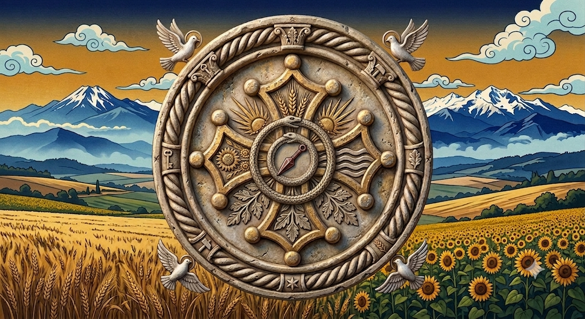

<!DOCTYPE html><html lang="fr"><head>
<meta charset="UTF-8"><meta name="viewport" content="width=device-width,initial-scale=1,maximum-scale=1,user-scalable=no,viewport-fit=cover">
<meta name="apple-mobile-web-app-capable" content="yes"><meta name="apple-mobile-web-app-status-bar-style" content="black-translucent">
<meta name="apple-mobile-web-app-title" content="L'Ombra"><meta name="theme-color" content="#0a0a0a">
<link rel="manifest" href="manifest.json"><link rel="apple-touch-icon" href="icons/icon-192.png">
<title>L'Ombra</title>
<script src="chapters.js?v=2"></script>
<style>
*{margin:0;padding:0;box-sizing:border-box}
body{font-family:-apple-system,system-ui,'Segoe UI',sans-serif;background:#f5f0e6;color:#2d2215;-webkit-font-smoothing:antialiased;font-size:16px;line-height:1.75}
button{font-family:inherit;-webkit-tap-highlight-color:transparent;cursor:pointer}
::-webkit-scrollbar{display:none}
.w{max-width:100%;margin:0 auto;min-height:100vh;padding-bottom:80px}
.hd{padding:22px 18px 16px;text-align:center;background:linear-gradient(135deg,#2d2215,#3a2e1c)}
.nv{display:flex;background:#fff;border-bottom:1px solid #d4c9b5;position:sticky;top:0;z-index:9;overflow-x:auto}
.nv button{flex:1;min-width:44px;padding:10px 2px 8px;border:none;background:none;color:#9a8d7a;font-size:13px}
.nv button.a{color:#8B6914;border-bottom:2px solid #8B6914}
.ct{padding:14px}
.sc{font-size:14px;color:#8B6914;letter-spacing:2px;margin-bottom:12px;font-weight:700}
.cd{background:#fff;border:1px solid #e0d6c8;border-radius:12px;margin-bottom:12px;overflow:hidden;box-shadow:0 1px 4px rgba(0,0,0,.06)}
.ch{padding:14px 16px;background:linear-gradient(135deg,#f9f5ed,#f0ebe0);color:#6b4c1e;font-size:17px;font-weight:600;border-bottom:1px solid #e8dfd0}
.cb{padding:14px 16px}
.rw{padding:10px 14px;border-bottom:1px solid #f0ebe0;font-size:16px;display:flex;gap:10px;align-items:center}
.rw:last-child{border:none}
.nm{width:28px;height:28px;border-radius:50%;border:2px solid #8B6914;display:flex;align-items:center;justify-content:center;font-size:13px;color:#8B6914;flex-shrink:0}
.pl{padding:8px 14px;border-radius:18px;border:1px solid #d4c9b5;background:#faf7f0;color:#6b5e50;font-size:14px;cursor:pointer;display:inline-block}
.pl.a{background:#8B6914;color:#fff;border-color:#8B6914}
.ex{cursor:pointer;padding:14px 16px;background:#fff;border:1px solid #e0d6c8;border-radius:10px;margin-bottom:8px;box-shadow:0 1px 3px rgba(0,0,0,.04)}
.ex:active{background:#f9f5ed}
.yt{display:inline-block;font-size:15px;color:#cc4444;text-decoration:none;margin-left:8px;vertical-align:middle}
.yt:hover{text-decoration:underline}
.breath-circle{width:140px;height:140px;border-radius:50%;border:3px solid #8B6914;margin:20px auto;display:flex;align-items:center;justify-content:center;font-size:32px;color:#8B6914;transition:transform 4s ease-in-out;background:#faf7f0}
.breath-circle.expand{transform:scale(1.4)}
.breath-circle.hold{transform:scale(1.4);border-color:#8B2500}
.rest-bar{height:10px;background:#e8dfd0;border-radius:5px;margin:10px 0;overflow:hidden}
.rest-fill{height:100%;background:#8B6914;border-radius:5px;transition:width 1s linear}
.star{cursor:pointer;font-size:28px;display:inline-block;padding:5px}
.chk{width:28px;height:28px;border-radius:6px;border:2px solid #d4c9b5;background:none;color:transparent;display:flex;align-items:center;justify-content:center;font-size:16px;flex-shrink:0;cursor:pointer;transition:all .2s}
.chk.done{border-color:#2d8a4e;background:#2d8a4e20;color:#2d8a4e}
.exname{flex:1;font-size:16px;line-height:1.6}
.exname.dk{opacity:.5;text-decoration:line-through}
.detail{font-size:14px;color:#8a7d6c;margin-top:3px}
.tbl{width:100%;border-collapse:collapse;font-size:14px;margin:10px 0}
.tbl th{background:#f0ebe0;color:#6b4c1e;padding:10px;text-align:left;font-size:13px;border:1px solid #e0d6c8}
.tbl td{padding:10px;border:1px solid #e0d6c8;color:#4a3f30}
.tbl tr:nth-child(even) td{background:#faf7f0}
.badge{display:inline-block;padding:4px 10px;border-radius:10px;font-size:13px;font-weight:700;margin-right:6px}
.sect{margin-top:18px;padding-top:12px;border-top:1px solid #e0d6c8}
.cimg{width:100%;border-radius:10px;margin-bottom:14px;border:1px solid #e0d6c8}

/* ══ FOLD OUVERT (>600px) ══ */
@media(min-width:600px){
  body{font-size:19px}
  .w{max-width:860px;padding:0 20px 80px}
  .hd{padding:28px 24px 20px;border-radius:0 0 16px 16px}
  .nv button{min-width:60px;padding:12px 6px 10px;font-size:15px}
  .ct{padding:20px 8px}
  .sc{font-size:16px}
  .ch{font-size:20px;padding:16px 20px}
  .cb{padding:16px 20px}
  .rw{padding:12px 20px;font-size:19px;gap:14px}
  .pl{font-size:16px;padding:10px 18px}
  .ex{padding:16px 20px}
  .exname{font-size:19px}
  .detail{font-size:16px}
  .breath-circle{width:200px;height:200px;font-size:44px}
  .tbl{font-size:17px}
  .tbl th{font-size:15px;padding:12px}
  .tbl td{padding:12px}
  .cimg{border-radius:14px}
}
</style></head><body><div class="w" id="app"></div>
<script>
// ─── QUOTES ───
var QT=["Le shinobi qui ne s'entraîne pas pour le dōjō s'entraîne pour la mission.","L'infiltration parfaite ne laisse aucune trace.","L'arme n'ajoute rien à un homme vide. Elle ajoute tout à un homme plein.","Le meilleur déguisement n'est pas celui qui cache. C'est celui qui montre quelqu'un d'autre.","La stratégie du shinobi est de rendre la victoire inutile — pour l'ennemi.","Celui qui n'est pas vu n'existe pas. Et celui qui n'existe pas ne peut pas être vaincu.","Le shinobi est sa propre armée, sa propre logistique, son propre hôpital.","Le fudōshin n'est pas l'absence d'émotion. C'est l'absence de perturbation.","Le bâton est l'arme la plus honnête du monde.","Le shuriken ne tue pas. Il distrait. Et la demi-seconde suffit.","La sortie se planifie avant l'entrée.","Les gens voient ce qu'ils s'attendent à voir.","Un renseignement qui n'arrive pas est un renseignement qui n'existe pas.","Le poison est la seule arme qui tue sans que le tueur soit présent.","Le shinobi qui marche ne fait pas de bruit. Il ne laisse pas de trace. Va.","L'homme qui voit une arme dans chaque objet est dangereux partout, tout le temps.","Le corps du shinobi est le premier et le dernier de ses outils.","Ton dōjō est chez toi. Ton maître est cette Bible. Ton adversaire est ta propre paresse.","Le masque parfait est celui que tout le monde voit sans le reconnaître comme masque.","La constance bat l'intensité. Un mauvais entraînement fait est supérieur à un entraînement parfait sauté.","L'égo est l'ennemi. Le guerrier de 39 ans qui veut durer est plus dangereux que celui de 25.","Le corps suit l'esprit. La méditation n'est pas un bonus, c'est le fondement."];

// ─── FESTIVALS ───
var FT=[
{nm:"Setsubun 節分",dt:"02-03",ic:"👹",why:"Chasser les démons (oni) intérieurs — peur, colère, paresse — pour purifier le guerrier avant le renouveau du printemps. Rituel de mamemaki (lancer de haricots).",where:"Chez toi à Montgiscard/Escalquens. Ouvre la fenêtre côté Lauragais, face au vent d'Autan. Le vent emporte les oni.",how:"Prépare des haricots secs (soja ou haricots du marché de Nailloux). Crie « Oni wa soto ! Fuku wa uchi ! » en lançant les haricots vers l'extérieur. Mange autant de haricots que ton âge. Méditation fudōshin 15 min après."},
{nm:"Jorn de l'Esclusièr",dt:"02-17",ic:"🔑",why:"Ouvrir les chemins pour l'année. L'Esclusièr lève les vannes — tout ce qui était bloqué se remet à couler. Rien ne commence sans son accord.",where:"Écluse de Gardouch ou écluse de Castanet sur le Canal du Midi. Arriver à l'aube.",how:"Marche silencieuse le long du Canal depuis Montgiscard jusqu'à l'écluse. Offrande : café noir versé dans le canal + pain du marché posé au bord. Allumer une bougie rouge. Formuler à voix haute les chemins que tu veux ouvrir cette année. Méditation 15 min face à l'eau."},
{nm:"Jorn de La Bòna Dama",dt:"03-16",ic:"💜",why:"16 mars 1244 — bûcher de Montségur. 225 Parfaits cathares montent au bûcher plutôt que de renier leur foi. La Bòna Dama protège ceux qui ne plient pas, surtout les enfants.",where:"Chez toi, en famille. Ou sur la route de Montségur si possible.",how:"Allumer une bougie violette. Offrande : lait et miel. Nommer tes filles et ta femme à voix haute — demander protection sur elles. Moment de gratitude silencieux. Préparer un repas simple en famille (pain, fromage, fruits). Pas d'écrans ce soir-là."},
{nm:"Jorn del Sèrp Blanc",dt:"03-21",ic:"🐍",why:"Équinoxe de printemps. Lo Sèrp Blanc sort de terre — le renouveau, la sagesse ancienne qui remonte. Le père cosmique bénit la nouvelle saison.",where:"Source ou fontaine près de Montgiscard. La fontaine de Baziège ou source du Lac de Thésauque.",how:"Arriver au lever du soleil. Offrande : un œuf blanc posé sur la terre + lait versé à la source. Porter du blanc. Méditation 30 min assise face à l'eau. Respiration 4-7-8 les yeux fermés. Silence complet — Lo Sèrp Blanc parle dans le silence."},
{nm:"Festival Ninja d'Iga 伊賀",dt:"04-15",ic:"⛩️",why:"Commémoration des shinobi d'Iga-Ueno, berceau du ninjutsu. Honorer la lignée, pratiquer les arts. C'est le jour le plus sacré pour un pratiquant shinobi.",where:"Entraînement extérieur dans le Lauragais : colline de Nailloux, chemin de halage du Canal du Midi à Gardouch, ou forêt de Bouconne.",how:"Entraînement spécial Iga : réveil 4h30, marche silencieuse 30 min dans l'obscurité (shinobi-aruki), kata complets au lever du soleil, séance complète de hanbōjutsu, méditation 30 min sous un arbre. Journée sans téléphone."},
{nm:"Jorn de l'Òme del Bòsc",dt:"05-01",ic:"🌳",why:"Beltaine — la forêt explose de vie. L'Òme del Bòsc ouvre ses bras. C'est le jour de se reconnecter à la terre, aux plantes, à l'instinct animal.",where:"Forêt entre Escalquens et Labège. Ou bois autour de Nailloux. Lieu isolé, profond sous les arbres.",how:"Marche pieds nus en forêt 30 min. Offrande : tabac naturel déposé au pied d'un vieux chêne + miel. S'asseoir dos contre l'arbre, 30 min de méditation les mains dans la terre. Cueillir une plante (romarin, thym sauvage) pour la cuisine. Entraînement hanbōjutsu avec un vrai bâton trouvé sur place."},
{nm:"Tango no Sekku 端午の節句",dt:"05-05",ic:"🎏",why:"Jour des garçons et des guerriers. Célébration de la force, du courage et de la persévérance. Lié aux samouraïs et à la voie martiale.",where:"Canal du Midi entre Montgiscard et Ayguevives — marche guerrière le long de l'eau.",how:"Entraînement en plein air : shadow boxing au bord du canal, kata avec bâton, 100 frappes au sac. Repas protéiné spécial (chimaki : riz gluant en feuille de bambou, ou adaptation locale avec du riz et des feuilles de vigne)."},
{nm:"Geshi — Solstice d'été 夏至",dt:"06-21",ic:"☀️",why:"Jour le plus long. Maximum d'énergie yang. Le guerrier pousse ses limites physiques au maximum de la lumière.",where:"En extérieur dès 5h30 — collines du Lauragais entre Escalquens et Labège, face au lever du soleil.",how:"Entraînement à l'aube, le plus long de l'année : 90 min full body + combat + méditation au soleil levant. Hydratation renforcée (3-4L). Repas solaire riche en fruits et légumes du marché de Nailloux."},
{nm:"Jorn del Forgèir — Sant Joan",dt:"06-24",ic:"🔥",why:"Nuit de la Saint-Jean — les feux brûlent partout en Occitanie. Lo Forgèir frappe l'enclume. C'est le jour du guerrier, du fer, de la protection par la force.",where:"Chez toi ou feu de la Saint-Jean local (Montgiscard, Escalquens, Nailloux organisent souvent des feux).",how:"Allumer un feu (ou bougie rouge et noire). Offrande : vin rouge de Fronton + un clou en fer planté dans la terre. Entraînement combat intensif — sac, shadow, kata guerriers. Passer symboliquement au-dessus du feu ou de la flamme. Manger de la viande rouge grillée. Demander force et protection."},
{nm:"Obon お盆",dt:"08-13",ic:"🏮",why:"Les ancêtres reviennent. On honore les morts, les maîtres disparus. Le shinobi n'oublie jamais ceux qui l'ont précédé — les guerriers d'Iga et Kōga.",where:"Chez toi ou jardin. Idéal au crépuscule dans le calme du Lauragais.",how:"Allume une bougie (ou lanterne) pour les ancêtres martiaux. Méditation 30 min dédiée. Récite les noms des maîtres : Hatsumi, Takamatsu, les jonin d'Iga. Offre un bol de riz ou de fruits. Entraînement léger en hommage."},
{nm:"Jorn del Lauragués — Fèsta de la Còlta",dt:"08-15",ic:"🌾",why:"15 août — la terre a donné sa récolte. Lo Lauragués est honoré. C'est le jour de la gratitude pour ce qui nourrit la famille, le travail honnête, la terre grasse.",where:"Chez toi à Montgiscard. Dehors, face aux champs si possible.",how:"Marche dans les champs du Lauragais le matin (blé, tournesol). Offrande : pain frais posé sur la terre + huile d'olive versée + un épi de blé ou tournesol coupé. Préparer un grand repas de terroir pour la famille (cassoulet, garbure, ou grillades). Gratitude à voix haute pour la nourriture et le toit."},
{nm:"Tsukimi 月見",dt:"09-20",ic:"🌕",why:"Contemplation de la lune d'automne. Méditation profonde. Fudōshin — l'esprit immobile comme la lune se reflétant dans l'eau calme.",where:"Extérieur nocturne : plaine du Lauragais à Montgiscard ou Escalquens, loin des lumières. Le plateau offre un ciel dégagé parfait.",how:"Sortir à la pleine lune. Installer un zafu ou couverture au sol. Méditation face à la lune, 30-45 min. Respiration 4-4-4 tactique yeux ouverts sur la lune. Préparer des dango (boulettes de riz) ou adaptation locale (gâteau de riz). Thé vert."},
{nm:"Aki no Matsuri — Équinoxe d'automne",dt:"09-22",ic:"🍂",why:"Transition vers le yin. Le guerrier s'intériorise. Début de la phase de renforcement intérieur, endurance et mental.",where:"Forêt proche : bois entre Escalquens et Labège, ou sentiers autour de Nailloux.",how:"Marche méditative en forêt 60 min — shinobi-aruki (marche silencieuse). Ramasser une pierre, un bâton : symboliser l'ancrage. Séance de visualisation combat 15 min sous les arbres. Journaling : bilan du semestre."},
{nm:"Tōji — Solstice d'hiver 冬至",dt:"12-21",ic:"❄️",why:"Nuit la plus longue. Nuit du shinobi par excellence. L'obscurité est son élément. Endurcissement au froid, discipline extrême.",where:"Chez toi puis extérieur à Montgiscard/Escalquens. Le froid du Lauragais en décembre (souvent 0-5°C, vent d'Autan) est parfait.",how:"Réveil 4h00 (dans l'obscurité complète). Douche froide intégrale 3 min. Entraînement en extérieur (shadow boxing + corde + mobilité). Respiration Wim Hof 4 rounds. Méditation de 30 min dans l'obscurité. Dîner simple : soupe miso et riz. Coucher tôt — honorer la nuit."},
{nm:"Ōmisoka — Dernier jour de l'an 大晦日",dt:"12-31",ic:"🔔",why:"Purification de fin d'année. On sonne 108 cloches (joya no kane) pour éliminer les 108 passions. Le guerrier fait le bilan et se prépare au cycle suivant.",where:"Chez toi à Montgiscard — moment de recueillement familial.",how:"Bilan annuel complet : corps, combat, esprit — notes, mesures, photos comparatives. Écrire 3 victoires et 3 objectifs pour l'année prochaine. Méditation longue 45 min. Repas de toshikoshi soba (nouilles longues pour la longévité — des spaghetti complets font l'affaire). Coucher avant minuit."}
];

// ─── BREATHING ───
var BR=[
{nm:"Tactique 4-4-4",d:"Combat & stress. Inspire 4s, retiens 4s, expire 4s.",ph:[{a:"INSPIRE",s:4},{a:"RETIENS",s:4},{a:"EXPIRE",s:4}],rounds:10,co:"#8B2500"},
{nm:"Relaxation 4-7-8",d:"Récupération & sommeil. Inspire 4s, retiens 7s, expire 8s.",ph:[{a:"INSPIRE",s:4},{a:"RETIENS",s:7},{a:"EXPIRE",s:8}],rounds:6,co:"#2E5E8E"},
{nm:"Wim Hof",d:"Endurcissement. 30 respirations rapides puis rétention max.",ph:[{a:"POWER BREATHE ×30",s:90},{a:"RÉTENTION MAX",s:60},{a:"INSPIRE + HOLD 15s",s:15}],rounds:3,co:"#4A7A5A"}
];

// ─── YT HELPERS ───
function yt(q){return 'https://www.youtube.com/results?search_query='+encodeURIComponent(q);}

// ════════════════════════════════════════════
// TRAINING DATA — EXACT FROM DOCX
// ════════════════════════════════════════════
var PH=[
// ── PHASE 1 : RÉVEIL (Mois 1-3) ──
{nm:"RÉVEIL",sub:"Mois 1-3",ic:"🌱",co:"#4ade80",
 obj:"Réactiver le corps sans le casser. Créer l'habitude du 5h00. Mobilité et cardio de base. Tempo modéré — priorité : éviter la blessure.",
 poids:"110-112 kg",kcal:"2200-2500 kcal (déficit modéré)",
 sem:[
  {j:"Lundi",t:"FORCE A — Haut du corps",du:"55-60 min",fo:"Poussée/tirage + core",ex:[
    {n:"Assault bike 3 min tempo modéré",cat:"E",y:"assault bike warmup"},
    {n:"Cercles d'épaules bande élastique",s:"2×15",cat:"E",y:"shoulder circles resistance band"},
    {n:"Dislocations d'épaule bande",s:"2×10",cat:"E",y:"band shoulder dislocations"},
    {n:"Pompes inclinées (mains sur banc)",s:"2×8",cat:"E",y:"incline push up form"},
    {n:"Pompes au sol (genoux si nécessaire)",s:"4×8-12",r:"90s",cat:"F",y:"push up progression"},
    {n:"Tractions assistées bande ou australiennes",s:"4×6-10",r:"90s",cat:"F",y:"assisted pull up band"},
    {n:"Développé haltères assis ou barre",s:"3×10",r:"75s",cat:"F",y:"seated dumbbell press"},
    {n:"Rowing barre penché",s:"3×10",r:"75s",cat:"F",y:"barbell bent over row form"},
    {n:"Dips assistés (bande ou partiels)",s:"3×6-8",r:"60s",cat:"F",y:"assisted dips band"},
    {n:"Planche ventrale",s:"3×30-45s",cat:"C",y:"plank form tutorial"},
    {n:"Dead bug",s:"3×8/côté",cat:"C",y:"dead bug exercise"},
    {n:"Relevés de genoux suspendus",s:"3×8-10",cat:"C",y:"hanging knee raise"}
  ]},
  {j:"Mardi",t:"CARDIO + MOBILITÉ",du:"55-60 min",fo:"Assault bike + stretching profond",ex:[
    {n:"Assault bike Zone 2 (FC 120-140)",s:"20 min",cat:"K",y:"assault bike zone 2 cardio"},
    {n:"Corde à sauter (pieds joints, léger)",s:"5×1min ON / 1min OFF",cat:"K",y:"jump rope beginner tutorial"},
    {n:"90/90 hip stretch",s:"2×45s/côté",cat:"M",y:"90 90 hip stretch"},
    {n:"Fente basse (lizard stretch)",s:"2×45s/côté",cat:"M",y:"lizard stretch hip flexor"},
    {n:"Pigeon pose",s:"2×60s/côté",cat:"M",y:"pigeon pose stretch"},
    {n:"Squat profond assisté (tenir poteau)",s:"3×30s",cat:"M",y:"deep squat hold assisted"},
    {n:"Jefferson curl léger (barre vide)",s:"3×8 lent",cat:"M",y:"jefferson curl barbell"},
    {n:"Ouverture thoracique rotation",s:"2×10/côté",cat:"M",y:"thoracic spine rotation"},
    {n:"Pancake stretch progressif",s:"3×30s",cat:"M",y:"pancake stretch progression"}
  ]},
  {j:"Mercredi",t:"FORCE B — Bas du corps",du:"55-60 min",fo:"Squat, hip hinge, mollets",ex:[
    {n:"Assault bike 3 min",cat:"E",y:"assault bike warmup"},
    {n:"Goblet squat bande ou léger",s:"2×10",cat:"E",y:"goblet squat warmup"},
    {n:"Activation fessiers bande (clam, bridge)",s:"2×15",cat:"E",y:"glute activation band"},
    {n:"Mobilité cheville",s:"2×10/côté",cat:"E",y:"ankle mobility drill"},
    {n:"Back squat",s:"4×8-10",r:"120s",cat:"F",y:"barbell back squat form",note:"Commencer barre +20kg, progresser doucement"},
    {n:"Roumain deadlift (RDL)",s:"3×10",r:"90s",cat:"F",y:"romanian deadlift barbell"},
    {n:"Fentes marchantes",s:"3×8/jambe",r:"60s",cat:"F",y:"walking lunge form"},
    {n:"Hip thrust banc",s:"3×12",r:"60s",cat:"F",y:"hip thrust bench"},
    {n:"Élévations mollets debout",s:"4×15",r:"45s",cat:"F",y:"standing calf raise"},
    {n:"Pallof press bande",s:"3×10/côté",cat:"C",y:"pallof press band"},
    {n:"Planche latérale",s:"3×20-30s/côté",cat:"C",y:"side plank form"},
    {n:"Ab wheel ou roll-out barre",s:"3×8",cat:"C",y:"ab wheel rollout"}
  ]},
  {j:"Jeudi",t:"CARDIO + SHADOW",du:"55-60 min",fo:"Corde + shadow boxing léger",ex:[
    {n:"Corde à sauter continu (objectif : tenir sans pause)",s:"10 min",cat:"K",y:"jump rope 10 minutes"},
    {n:"Assault bike HIIT",s:"8×20s sprint / 40s récup",cat:"K",y:"assault bike hiit sprint"},
    {n:"Corde à sauter cool-down",s:"5 min léger",cat:"K",y:"jump rope cooldown"},
    {n:"Shadow R1 : Garde + déplacements latéraux",s:"3 min",r:"60s",cat:"B",y:"shadow boxing footwork"},
    {n:"Shadow R2 : Jab-cross léger, focus technique",s:"3 min",r:"60s",cat:"B",y:"shadow boxing jab cross"},
    {n:"Shadow R3 : Jab-cross-crochet + esquives",s:"3 min",r:"60s",cat:"B",y:"shadow boxing combos hooks"},
    {n:"Shadow R4 : Intégration low kicks légers",s:"3 min",r:"60s",cat:"B",y:"shadow boxing low kicks",note:"Attention genoux, monter progressivement"},
    {n:"Mobilité rapide hanches + épaules",s:"10 min",cat:"M",y:"hip shoulder mobility quick"}
  ]},
  {j:"Vendredi",t:"FORCE C — Full body",du:"55-60 min",fo:"Mouvements composés + KB",ex:[
    {n:"Corde 3 min + mobilité dynamique 5 min",cat:"E",y:"dynamic warmup routine"},
    {n:"Deadlift conventionnel",s:"4×6-8",r:"120s",cat:"F",y:"deadlift conventional form",note:"Commencer 60kg, technique parfaite"},
    {n:"KB Swing (16 kg)",s:"4×15",r:"60s",cat:"F",y:"kettlebell swing form 16kg"},
    {n:"Pompes",s:"3× max (noter progression)",cat:"F",y:"push up max reps"},
    {n:"Tractions",s:"3× max (assistées si besoin)",cat:"F",y:"pull up progression"},
    {n:"Farmer carry (2 KB ou haltères)",s:"3×30m",r:"60s",cat:"F",y:"farmer carry exercise"},
    {n:"EMOM 7 min : impaire=5 burpees, paire=10 KB swings",s:"7 min",cat:"H",y:"emom burpees kettlebell swings"}
  ]},
  {j:"Samedi",t:"ENDURANCE + MOBILITÉ",du:"60-75 min",fo:"Marche rapide ou vélo + yoga",ex:[
    {n:"Marche rapide extérieur (sac 5-10kg si possible)",s:"30-45 min",cat:"K",y:"rucking weighted walk",note:"OU assault bike 30 min Zone 2"},
    {n:"Stretching intégral complet",s:"20-30 min",cat:"M",y:"full body stretch routine",note:"Hanches, épaules, dos, ischio-jambiers, adducteurs"}
  ]},
  {j:"Dimanche",t:"RÉCUPÉRATION ACTIVE",du:"30-45 min",fo:"Mobilité profonde + méditation",ex:[
    {n:"Mobilité douce (animal flow ou yoga)",s:"15-20 min",cat:"M",y:"animal flow mobility routine"},
    {n:"Rouleau de massage / auto-massage",s:"10 min",cat:"M",y:"foam roller full body"},
    {n:"Méditation (Wim Hof ou Zazen)",s:"10-15 min",cat:"X",y:"zazen meditation beginner"}
  ]}
]},
// ── PHASE 2 : FORGE (Mois 4-6) ──
{nm:"FORGE",sub:"Mois 4-6",ic:"⚒️",co:"#facc15",
 obj:"Construire la force réelle, recomposition agressive, travail au sac, KB lourds. Volume et intensité montent.",
 poids:"105-108 kg",kcal:"2200-2500 kcal (déficit modéré)",
 sem:[
  {j:"Lundi",t:"FORCE Haut + Explosivité",du:"60 min",fo:"Force max haut + medicine ball",ex:[
    {n:"Assault bike 3 min + mobilité épaules",cat:"E",y:"assault bike shoulder warmup"},
    {n:"Développé couché barre",s:"5×5",r:"120s",cat:"F",y:"bench press 5x5 stronglifts"},
    {n:"Tractions lestées ou strict",s:"5×5",r:"120s",cat:"F",y:"weighted pull ups 5x5"},
    {n:"OHP (overhead press)",s:"4×6",r:"90s",cat:"F",y:"overhead press barbell form"},
    {n:"Rowing barre",s:"4×8",r:"75s",cat:"F",y:"barbell row form"},
    {n:"Lancers medicine ball poitrine mur",s:"4×8",cat:"P",y:"medicine ball chest pass wall"},
    {n:"Lancers medicine ball overhead",s:"4×6",cat:"P",y:"medicine ball overhead throw"},
    {n:"Pompes claquées (ou explosives sans clap)",s:"4×5",cat:"P",y:"clap push ups explosive"},
    {n:"Ab wheel",s:"3×10",cat:"C",y:"ab wheel rollout form"},
    {n:"L-sit chaise romaine",s:"3× max",cat:"C",y:"l sit roman chair"},
    {n:"Planche dynamique (shoulder taps)",s:"3×10/côté",cat:"C",y:"plank shoulder taps"}
  ]},
  {j:"Mardi",t:"COMBAT + CARDIO",du:"60 min",fo:"BOB + sac sol + assault bike",ex:[
    {n:"Corde 5 min + shadow 3 min",cat:"E",y:"shadow boxing warmup"},
    {n:"BOB R1 : Jab-cross, vitesse + retour garde",s:"3 min",r:"60s",cat:"B",y:"jab cross heavy bag speed"},
    {n:"BOB R2 : Combinaisons 3-4 coups + esquive",s:"3 min",r:"60s",cat:"B",y:"boxing combos heavy bag"},
    {n:"BOB R3 : Low kicks + teeps",s:"3 min",r:"60s",cat:"B",y:"muay thai low kick teep bag",note:"Attention genou, contrôle"},
    {n:"BOB R4 : Clinch + genoux",s:"3 min",r:"60s",cat:"B",y:"muay thai clinch knee bag"},
    {n:"BOB R5 : Round libre — tout intégré, max intensité",s:"3 min",r:"60s",cat:"B",y:"heavy bag freestyle round"},
    {n:"Sac de sol : ground & pound position montée",s:"3×2 min",cat:"B",y:"ground and pound bag drill"},
    {n:"Assault bike Tabata",s:"8×20s/10s (4 min)",cat:"K",y:"assault bike tabata"},
    {n:"Corde à sauter continu (double-under si possible)",s:"6 min",cat:"K",y:"jump rope double unders"}
  ]},
  {j:"Mercredi",t:"FORCE Bas + Puissance",du:"60 min",fo:"Squat lourd + KB lourd",ex:[
    {n:"Mobilité hanches + activation fessiers",s:"8 min",cat:"E",y:"hip mobility glute activation"},
    {n:"Back squat",s:"5×5",r:"120-150s",cat:"F",y:"barbell back squat 5x5",note:"Viser 100kg fin de phase"},
    {n:"Deadlift roumain",s:"4×8",r:"90s",cat:"F",y:"romanian deadlift"},
    {n:"Fentes bulgares",s:"3×8/jambe",r:"75s",cat:"F",y:"bulgarian split squat"},
    {n:"KB Swing 24-32 kg",s:"5×15",r:"60s",cat:"F",y:"kettlebell swing heavy"},
    {n:"Box jumps (step down)",s:"4×5",r:"60s",cat:"P",y:"box jump step down"},
    {n:"Broad jumps",s:"4×3",r:"60s",cat:"P",y:"broad jump technique"},
    {n:"Hanging leg raises",s:"3×10",cat:"C",y:"hanging leg raise form"},
    {n:"Pallof press",s:"3×10/côté",cat:"C",y:"pallof press band"}
  ]},
  {j:"Jeudi",t:"HIIT + MOBILITÉ",du:"60 min",fo:"Intervals intenses + stretching profond",ex:[
    {n:"HIIT Circuit — 4 tours, 45s travail / 15s transition, 2 min repos entre tours",s:"",cat:"H",y:"hiit circuit training"},
    {n:"Station 1 : KB Swing",s:"45s",cat:"H",y:"kettlebell swing"},
    {n:"Station 2 : Burpees",s:"45s",cat:"H",y:"burpee form"},
    {n:"Station 3 : Assault bike sprint",s:"45s",cat:"H",y:"assault bike sprint"},
    {n:"Station 4 : Pompes",s:"45s",cat:"H",y:"push ups"},
    {n:"Station 5 : Corde à sauter rapide",s:"45s",cat:"H",y:"fast jump rope"},
    {n:"Station 6 : Mountain climbers",s:"45s",cat:"H",y:"mountain climbers"},
    {n:"Mobilité hanches : 90/90, pigeon, frog, squat profond",s:"2 min/position",cat:"M",y:"deep hip mobility stretches"},
    {n:"Épaules : sleeper stretch, pec stretch mur, band pull-aparts",s:"",cat:"M",y:"shoulder mobility stretches"},
    {n:"Colonne : cat-cow, scorpion stretch, Jefferson curls",s:"",cat:"M",y:"spine mobility cat cow jefferson curl"},
    {n:"Ischio-jambiers : PNF stretching",s:"3× contract-relax",cat:"M",y:"pnf hamstring stretch"}
  ]},
  {j:"Vendredi",t:"FORCE Full + Circuit Combat",du:"65-70 min",fo:"Deadlift + circuit combat",ex:[
    {n:"Deadlift",s:"5×3-5",r:"150s",cat:"F",y:"deadlift heavy triples",note:"Viser 120kg fin de phase"},
    {n:"Overhead press",s:"4×6",r:"90s",cat:"F",y:"overhead press barbell"},
    {n:"Tractions",s:"4× max",r:"90s",cat:"F",y:"pull up max reps"},
    {n:"Turkish Get-Up KB",s:"3×3/côté",r:"60s",cat:"F",y:"turkish get up kettlebell heavy"},
    {n:"Circuit Combat — 5 rounds, 3 min ON / 1 min OFF",s:"",cat:"B",y:"fight circuit training"},
    {n:"Min 0-1 : Shadow boxing intensif",s:"1 min",cat:"B",y:"shadow boxing intense"},
    {n:"Min 1-2 : BOB combinaisons libres",s:"1 min",cat:"B",y:"heavy bag free combos"},
    {n:"Min 2-3 : Assault bike max",s:"1 min",cat:"K",y:"assault bike max effort"}
  ]},
  {j:"Samedi",t:"ENDURANCE LONGUE",du:"75-90 min",fo:"Ruck march ou assault bike long + mobilité",ex:[
    {n:"Ruck march : sac 10-15kg, terrain varié, 6 km/h",s:"45-60 min",cat:"K",y:"rucking weighted walk endurance",note:"OU assault bike 40 min Zone 2 + 5 min sprint final"},
    {n:"Mobilité / yoga",s:"20-30 min",cat:"M",y:"yoga for athletes recovery"}
  ]},
  {j:"Dimanche",t:"RÉCUP + MENTAL",du:"40-50 min",fo:"Yoga guerrier + méditation + respiration",ex:[
    {n:"Yoga guerrier (warrior poses, deep stretches)",s:"20 min",cat:"M",y:"yoga warrior poses"},
    {n:"Respiration tactique (box breathing 4-4-4-4 ou Wim Hof)",s:"10 min",cat:"X",y:"box breathing 4 4 4 4"},
    {n:"Méditation Zazen",s:"15 min",cat:"X",y:"zazen meditation sitting"},
    {n:"Journaling : victoires + axes d'amélioration",s:"5 min",cat:"X",y:""}
  ]}
]},
// ── PHASE 3 : LAME (Mois 7-9) ──
{nm:"LAME",sub:"Mois 7-9",ic:"🔥",co:"#f97316",
 obj:"Affiner le physique, explosivité maximale, combat technique avancé, souplesse. Le corps devient une arme. 70-80 min/jour.",
 poids:"100-103 kg",kcal:"2600-2800 kcal (maintenance)",
 sem:[
  {j:"Lundi",t:"FORCE-VITESSE Haut",du:"65 min",fo:"Contrast training + plyométrie haut",ex:[
    {n:"Échauffement : bike + mobilité épaules",s:"8 min",cat:"E",y:"warmup shoulders mobility"},
    {n:"Contrast : Bench press lourd",s:"3×3",r:"",cat:"F",y:"bench press heavy triples"},
    {n:"→ immédiatement Pompes claquées",s:"3×5",r:"180s après paire",cat:"P",y:"clap push ups"},
    {n:"Contrast : Tractions lestées",s:"3×3",cat:"F",y:"weighted pull ups heavy"},
    {n:"→ immédiatement Lancers medicine ball",s:"3×5",r:"180s après paire",cat:"P",y:"medicine ball explosive throw"},
    {n:"OHP lourd",s:"4×5",r:"90s",cat:"F",y:"overhead press heavy"},
    {n:"Rowing lourd",s:"4×6",r:"75s",cat:"F",y:"heavy barbell row"},
    {n:"Dips lestés",s:"3×8",r:"60s",cat:"F",y:"weighted dips"},
    {n:"Core : Ab wheel + L-sit + shoulder taps",s:"3 sets",cat:"C",y:"advanced core workout"}
  ]},
  {j:"Mardi",t:"COMBAT INTÉGRAL",du:"70 min",fo:"Pieds-poings complet + clinch + sol",ex:[
    {n:"Échauffement : corde 5 min + shadow 5 min",cat:"E",y:"boxing warmup shadow"},
    {n:"R1-R2 : Shadow technique pure — déplacements, feintes, angles",s:"2×3 min",r:"60s",cat:"B",y:"advanced shadow boxing"},
    {n:"R3-R4 : BOB pieds-poings complet — low/mid/high kicks, genoux, coudes",s:"2×3 min",r:"60s",cat:"B",y:"muay thai full technique bag"},
    {n:"R5 : Clinch BOB — genoux, contrôle de tête, sweeps",s:"3 min",r:"60s",cat:"B",y:"muay thai clinch technique"},
    {n:"R6 : Sac de sol — ground & pound + transitions",s:"3 min",r:"60s",cat:"B",y:"ground and pound transitions"},
    {n:"R7 : Round chaos — alterner debout/sol toutes les 30s",s:"3 min",r:"60s",cat:"B",y:"mma transition drill"},
    {n:"R8 : Shadow final — flow libre, récupération active",s:"3 min",cat:"B",y:"shadow boxing flow recovery"}
  ]},
  {j:"Mercredi",t:"FORCE-VITESSE Bas",du:"65 min",fo:"Squat + sprints + sauts",ex:[
    {n:"Mobilité hanches + activation",s:"8 min",cat:"E",y:"hip mobility activation"},
    {n:"Contrast : Squat lourd",s:"3×3",cat:"F",y:"heavy barbell squat triples"},
    {n:"→ immédiatement Box jump",s:"3×5",r:"180s après paire",cat:"P",y:"box jump explosive"},
    {n:"Contrast : Deadlift lourd",s:"3×3",cat:"F",y:"heavy deadlift triples"},
    {n:"→ immédiatement Broad jump",s:"3×3",r:"180s après paire",cat:"P",y:"broad jump explosive"},
    {n:"KB Swing 32 kg",s:"5×15",r:"60s",cat:"F",y:"kettlebell swing 32kg"},
    {n:"KB Snatch",s:"4×8/côté",r:"60s",cat:"F",y:"kettlebell snatch technique"},
    {n:"Hanging leg raises + Pallof",s:"3 sets chaque",cat:"C",y:"hanging leg raise pallof press"}
  ]},
  {j:"Jeudi",t:"CARDIO COMBAT",du:"65 min",fo:"Rounds chronométrés combat-cardio hybride",ex:[
    {n:"Circuit : 5 rounds, 1min sac + 1min KB + 1min corde + 1min burpees",s:"R60s entre rounds",cat:"H",y:"fight gone bad workout"},
    {n:"Shadow boxing 3×3 min",s:"R60s",cat:"B",y:"shadow boxing rounds"},
    {n:"Respiration tactique",s:"10 min",cat:"X",y:"tactical breathing exercise"},
    {n:"Mobilité profonde",s:"15 min",cat:"M",y:"deep stretching flexibility"}
  ]},
  {j:"Vendredi",t:"FORCE MAX + KB Sport",du:"70 min",fo:"PR lifts + KB complexes",ex:[
    {n:"San Shin no Kata",s:"5 min",cat:"X",y:"san shin no kata bujinkan"},
    {n:"Deadlift PR",s:"5×3-5 lourd",r:"150s",cat:"F",y:"deadlift heavy singles"},
    {n:"Overhead press",s:"4×6",r:"90s",cat:"F",y:"overhead press"},
    {n:"Tractions",s:"4× max",r:"90s",cat:"F",y:"pull up max"},
    {n:"Turkish Get-Up KB lourd",s:"3×3/côté",r:"60s",cat:"F",y:"turkish get up heavy"},
    {n:"Hanbōjutsu — 5 kata solo",s:"15 min",cat:"A",y:"hanbo jutsu kata training"},
    {n:"Sac clinch + coudes",s:"5×3 min",r:"60s",cat:"B",y:"muay thai elbow clinch bag"},
    {n:"KB Complex (clean+press+squat+row)",s:"3×5",cat:"F",y:"kettlebell complex workout"},
    {n:"Fudōshin méditation",s:"5 min",cat:"X",y:""}
  ]},
  {j:"Samedi",t:"TEST SHINOBI (mensuel) / ENDURANCE",du:"75-90 min",fo:"Parcours intégré",ex:[
    {n:"Semaine test : Parcours Shinobi chronométré (voir onglet Tests)",s:"~25-35 min",cat:"T",y:"military fitness test circuit"},
    {n:"Semaines normales : Bike 20min + corde 10min + marche lestée 30min",s:"60 min",cat:"K",y:"tactical endurance workout"},
    {n:"Mobilité complète",s:"20 min",cat:"M",y:"full body mobility stretching"}
  ]},
  {j:"Dimanche",t:"RÉCUP PROFONDE",du:"50 min",fo:"Yoga + bain froid + méditation longue",ex:[
    {n:"Yoga guerrier",s:"20 min",cat:"M",y:"yoga warrior flow"},
    {n:"Wim Hof 4 rounds",s:"20 min",cat:"X",y:"wim hof breathing 4 rounds"},
    {n:"Méditation Zazen ou marche lente",s:"20 min",cat:"X",y:"zazen walking meditation"},
    {n:"Souplesse : grand écart PNF (contraction 10s/relâchement 30s, 5 cycles)",s:"15 min",cat:"M",y:"pnf splits stretching routine"}
  ]}
]},
// ── PHASE 4 : SHINOBI (Mois 10-12) ──
{nm:"SHINOBI",sub:"Mois 10-12",ic:"🐉",co:"#a855f7",
 obj:"Intégration finale. Corps et esprit = système unique. Tout combiné, rien isolé. Capacité de combat réelle, adaptation, endurance sous stress.",
 poids:"95-100 kg",kcal:"2800-3000 kcal (maintenance / léger surplus jours lourds)",
 sem:[
  {j:"Lundi",t:"COMBAT + FORCE (Hybride)",du:"70 min",fo:"Rounds combat intercalés avec force",ex:[
    {n:"Round 1 BOB : 3 min full intensity",cat:"B",y:"heavy bag full power round"},
    {n:"Deadlift lourd",s:"3×3",r:"90s",cat:"F",y:"heavy deadlift"},
    {n:"Round 2 BOB : genoux et coudes uniquement",s:"3 min",cat:"B",y:"muay thai elbow knee bag"},
    {n:"Tractions lestées",s:"3×5",r:"90s",cat:"F",y:"weighted pull ups"},
    {n:"Round 3 Sac sol : ground & pound",s:"3 min",cat:"B",y:"ground and pound bag"},
    {n:"KB TGU lourd",s:"3×2/côté",r:"60s",cat:"F",y:"turkish get up heavy kettlebell"},
    {n:"Round 4 Shadow : flow récupération active",s:"3 min",cat:"B",y:"shadow boxing recovery flow"},
    {n:"Farmer carry lourds",s:"3×40m",r:"60s",cat:"F",y:"farmer carry heavy"}
  ]},
  {j:"Mardi",t:"CARDIO TACTIQUE",du:"65 min",fo:"Assault bike + corde + ruck lesté",ex:[
    {n:"Assault bike HIIT",s:"10×30s/30s",cat:"K",y:"assault bike intervals"},
    {n:"Corde continu",s:"10 min",cat:"K",y:"jump rope 10 minutes continuous"},
    {n:"Shadow flow",s:"3×3 min",r:"60s",cat:"B",y:"shadow boxing flow"},
    {n:"KB Complex",s:"4×5",cat:"F",y:"kettlebell complex"},
    {n:"Respiration 4-4-4 × 15 rounds",s:"5 min",cat:"X",y:"box breathing tactical"},
    {n:"Ruck march lesté 15-20kg",s:"20 min",cat:"K",y:"weighted rucking walk"}
  ]},
  {j:"Mercredi",t:"FORCE MAXIMALE (PR DAY)",du:"65 min",fo:"PRs : squat, deadlift, bench, OHP",ex:[
    {n:"Échauffement complet progressif",s:"10 min",cat:"E",y:"powerlifting warmup routine"},
    {n:"Back Squat → PR",s:"5×1-3",r:"180s",cat:"F",y:"squat one rep max attempt"},
    {n:"Bench Press → PR",s:"5×1-3",r:"180s",cat:"F",y:"bench press max attempt"},
    {n:"Deadlift → PR",s:"5×1-3",r:"180s",cat:"F",y:"deadlift one rep max"},
    {n:"OHP → PR",s:"5×1-3",r:"180s",cat:"F",y:"overhead press max attempt"}
  ]},
  {j:"Jeudi",t:"COMBAT LIBRE — Scénarios",du:"70 min",fo:"Self-défense + sparring solo",ex:[
    {n:"Échauffement shadow + mobilité",s:"10 min",cat:"E",y:"shadow boxing warmup"},
    {n:"Scénario 1 — Agression frontale : explosion 5 coups max + désengagement",s:"3 min",cat:"B",y:"self defense front attack drill"},
    {n:"Scénario 2 — Encerclement : shadow multi-angles, pivots 360°",s:"3 min",cat:"B",y:"self defense multiple attackers drill"},
    {n:"Scénario 3 — Sol imposé : chute contrôlée, relevé, ground & pound",s:"3 min",cat:"B",y:"ground and pound self defense"},
    {n:"Scénario 4 — Protection tiers : positionnement + éloignement menace",s:"3 min",cat:"B",y:"self defense protect others drill"},
    {n:"Scénario 5 — Fatigue extrême : 2 min burpees PUIS 3 min BOB max",s:"5 min",cat:"B",y:"fight exhausted drill"},
    {n:"Hanbōjutsu défense couteau",s:"10 min",cat:"A",y:"hanbo self defense knife attack"},
    {n:"Kata Bassai Dai",s:"5 min",cat:"A",y:"bassai dai kata shotokan slow"},
    {n:"Kata Kanku Dai",s:"5 min",cat:"A",y:"kanku dai kata shotokan"},
    {n:"Sac libre 8 armes (poings, coudes, genoux, pieds)",s:"5×3 min",r:"60s",cat:"B",y:"muay boran 8 weapons bag work"}
  ]},
  {j:"Vendredi",t:"CIRCUIT OPÉRATIONNEL — Le Crucible",du:"70 min",fo:"Circuit intégré force-combat-cardio",ex:[
    {n:"San Shin no Kata",s:"5 min",cat:"X",y:"san shin no kata bujinkan"},
    {n:"Kihon Happō",s:"10 min",cat:"A",y:"kihon happo bujinkan techniques"},
    {n:"LE CRUCIBLE — 3 tours, 3 min repos entre tours",s:"",cat:"H",y:"military crucible workout"},
    {n:"10 Deadlifts (70% 1RM)",cat:"F",y:"deadlift workout"},
    {n:"15 KB Swings 32 kg",cat:"F",y:"kettlebell swing 32kg"},
    {n:"20 Pompes",cat:"F",y:"push ups"},
    {n:"BOB 2 min all-out",cat:"B",y:"heavy bag all out 2 minutes"},
    {n:"15 Tractions",cat:"F",y:"pull ups"},
    {n:"Assault bike 90s max",cat:"K",y:"assault bike max 90 seconds"},
    {n:"30 Mountain climbers",cat:"K",y:"mountain climbers fast"},
    {n:"Farmer carry 50m lourd",cat:"F",y:"farmer carry heavy"},
    {n:"Hanbōjutsu",s:"10 min",cat:"A",y:"hanbo jutsu training solo"},
    {n:"Fudōshin méditation",s:"10 min",cat:"X",y:"fudoshin meditation"}
  ]},
  {j:"Samedi",t:"TEST SHINOBI FINAL",du:"90 min",fo:"Parcours complet + endurance",ex:[
    {n:"Test Shinobi Final complet (voir onglet Tests)",s:"Objectif <25 min",cat:"T",y:"military fitness test circuit"},
    {n:"Mobilité / stretching complet",s:"20 min",cat:"M",y:"full body stretch recovery"},
    {n:"Méditation post-test",s:"10 min",cat:"X",y:"meditation after workout"}
  ]},
  {j:"Dimanche",t:"GUERRIER INTÉRIEUR",du:"60 min",fo:"Méditation longue + mobilité + journal",ex:[
    {n:"Méditation longue Zazen",s:"30-45 min",cat:"X",y:"zazen meditation long sitting"},
    {n:"Wim Hof 5 rounds",s:"20 min",cat:"X",y:"wim hof breathing 5 rounds"},
    {n:"Visualisation opérationnelle",s:"10 min",cat:"X",y:"combat visualization technique"},
    {n:"Revue hebdo : Corps / Combat / Esprit — note /10",s:"10 min",cat:"X",y:""}
  ]}
]}
];

// ─── SAN SHIN ───
var SS=[{nm:"Chi",el:"Terre",k:"地",co:"#8B6914",d:"Frappe descendante, enracinement. Poing avant, poussée des hanches. Le corps s'ancre dans le sol comme un pilier."},{nm:"Sui",el:"Eau",k:"水",co:"#2E5E8E",d:"Esquive fluide latérale + uppercut. Le corps coule autour de l'attaque comme l'eau contourne la roche."},{nm:"Ka",el:"Feu",k:"火",co:"#8B1A1A",d:"Explosion avant, blocage-frappe simultané. Énergie directe, agressive, inarrêtable."},{nm:"Fū",el:"Vent",k:"風",co:"#4A7A5A",d:"Balayage circulaire, fouetté. Changement de direction imprévisible. On ne saisit pas le vent."},{nm:"Kū",el:"Vide",k:"空",co:"#6B6B6B",d:"Absence de forme. Réponse spontanée, instinct pur. Le vide contient toutes les formes."}];

// ─── KIHON HAPPO ───
var KH=[{nm:"Ichimonji no Kamae",t:"Kosshi Kihon Sanpō",d:"Garde d'une ligne. Boshi ken (pouce) aux yeux. Le corps forme une seule ligne de force vers la cible."},{nm:"Hichō no Kamae",t:"Kosshi Kihon Sanpō",d:"Garde de l'oiseau sur une jambe. Kick frontal + frappe haute. Équilibre et légèreté."},{nm:"Jūmonji no Kamae",t:"Kosshi Kihon Sanpō",d:"Garde en croix. Double shuto simultané aux carotides. Les bras croisés protègent et frappent."},{nm:"Omote Gyaku",t:"Torite Kihon Gohō",d:"Torsion extérieure du poignet → projection au sol. Contrôle sans blesser gravement."},{nm:"Ura Gyaku",t:"Torite Kihon Gohō",d:"Torsion intérieure du poignet → pression vers le bas. Complémentaire de l'omote gyaku."},{nm:"Musha Dori",t:"Torite Kihon Gohō",d:"Saisie du guerrier. Clé de bras par levier au coude. Immobilisation debout puissante."},{nm:"Ganseki Nage",t:"Torite Kihon Gohō",d:"Projection de la roche. Chargement épaule → projection spectaculaire."},{nm:"Oni Kudaki",t:"Torite Kihon Gohō",d:"Briser le démon. Clé d'épaule par rotation externe. Le nom dit tout."}];

// ─── ARMES (étendu) ───
var AR=[
{nm:"Hanbōjutsu",ic:"🪵",wp:"Hanbō 90cm / parapluie / canne",kt:["Tsuki direct + retrait","Blocage jodan + contre circulaire","Balayage bas + pique haute","Crochetage cheville + contrôle","Défense couteau (déviation + frappe poignet)","Frappe Yokomen (latérale tête)","Blocage gedan + remontée men","Contrôle poignet + projection"],dr:"20 min : 5 kata solo → 5 frappes cible → 5 transitions hanbō↔mains nues → 5 scénarios",vy:"hanbo jutsu kata solo training"},
{nm:"Tantōjutsu",ic:"🗡️",wp:"Couteau entraînement bois/caoutchouc",kt:["Dégainement + coupe horizontale","Pique directe + retrait","Défense vs saisie + coupe dégagement","Changement main + coupe inversée","Dégainement inversé (icepick) + pique descendante","Défense contre coup de poing + coupe contre-attaque"],dr:"15 min : 5 kata → 5 dégainement rapide (100x) → 5 défense",vy:"tanto jutsu kata training"},
{nm:"Shurikenjutsu",ic:"⭐",wp:"Cartes à lancer / fléchettes",kt:["Lancer direct 3m cible A4","Lancer en mouvement (pas chassé)","Triple rapide 3 en 3 secondes","Distraction + fuite tactique","Lancer assis/accroupi","Lancer main gauche (non-dominante)"],dr:"15 min : 5 précision → 5 déplacement → 5 tactique",vy:"shuriken throwing technique accuracy"},
{nm:"Kusarijutsu",ic:"⛓️",wp:"Ceinture lestée / corde à nœuds",kt:["Rotation horizontale + frappe directe","Enroulement bras (contrôle distance)","Fauchage bas (chevilles)","Lancer lesté + retrait rapide","Rotation verticale + changement de plan","Capture poignet + amenée au sol"],dr:"15 min : 5 rotation → 5 cible → 5 transitions",vy:"kusari fundo techniques training"},
{nm:"Bōjutsu",ic:"🏑",wp:"Bō 180cm / manche à balai renforcé",kt:["Frappe shomen (verticale centre)","Frappe yokomen (latérale tête)","Tsuki (pique directe)","Blocage jodan uke + contre tsuki","Balayage bas gedan barai","Rotation 360° changement de garde","Frappe double bout rapide","Kata bō de base : 8 directions"],dr:"20 min : 8 kata directionnels → 5 enchaînements → 5 défense vs attaquant",vy:"bojutsu kata solo training basics"},
{nm:"Kata Shotokan",ic:"🥋",wp:"Mains nues — karaté",kt:["Heian Shodan (1er kata de base)","Heian Nidan","Heian Sandan","Heian Yondan","Heian Godan","Tekki Shodan (position kiba-dachi)","Bassai Dai (forcer la forteresse)","Kanku Dai (regarder le ciel)","Jion (temple)","Empi (vol de l'hirondelle)"],dr:"30 min : 5 Heian enchaînés → 1 Tekki → 2 kata avancés lents puis rapides",vy:"shotokan kata all heian bassai dai kanku"}
];

// ─── TESTS MENSUELS ───
var TESTS={
  benchmarks:[
    {nm:"Tractions max",u:"reps",p1:"3-5",p2:"8-10",p3:"12-15",p4:"15+"},
    {nm:"Pompes max",u:"reps",p1:"20-25",p2:"35-40",p3:"50+",p4:"60+"},
    {nm:"Planche",u:"sec",p1:"45-60",p2:"90",p3:"120",p4:"180"},
    {nm:"Corde continue",u:"min",p1:"5",p2:"10",p3:"15",p4:"20"},
    {nm:"Squat",u:"kg",p1:"60",p2:"100",p3:"120",p4:"140+"},
    {nm:"Deadlift",u:"kg",p1:"80",p2:"120",p3:"150",p4:"170+"},
    {nm:"Bench press",u:"kg",p1:"60",p2:"80",p3:"95",p4:"110+"},
    {nm:"KB Swing 10 min",u:"reps",p1:"80",p2:"120",p3:"160",p4:"200+"},
    {nm:"BOB rounds 3min",u:"rounds",p1:"3",p2:"5",p3:"8",p4:"10"},
    {nm:"Test Shinobi",u:"min",p1:"—",p2:"35-40",p3:"25-30",p4:"<25"}
  ],
  parcours3:{
    title:"Test Shinobi Phase 3",
    objectif:"Sous 25 min fin de Phase 3",
    steps:["800m course (ou 3 min assault bike max)","20 KB swings 24 kg","15 tractions","20 pompes","3 rounds de 1 min BOB max / 15s repos","30 burpees","2 min planche","400m course (ou 90s assault bike max)"]
  },
  parcours4:{
    title:"Test Shinobi Final — Phase 4",
    objectif:"Sous 30 min (idéal <25 min)",
    steps:["1500m course (ou 5 min assault bike max)","30 KB swings 32 kg","20 tractions","30 pompes","5 rounds de 1 min BOB max / 15s repos","40 burpees","3 min planche","10 TGU (5/côté, 24 kg)","800m course finale (ou 2 min assault bike max)"]
  }
};

// ─── NUTRITION COMPLÈTE ───
var NT={
  principes:[
    "Déficit calorique modéré : 300-500 kcal/jour sous maintenance. Pas plus, sinon perte de force.",
    "Protéines prioritaires : 2g/kg de poids cible = 190-200g/jour. Non négociable.",
    "Glucides autour de l'entraînement : riz, patate douce, avoine, fruits. Pas de glucides le soir sauf jours très intenses.",
    "Lipides essentiels : huile olive, avocat, noix, poisson gras. Minimum 70g/jour.",
    "Légumes à chaque repas : volume, fibres, micronutriments.",
    "Hydratation : 3-4 litres/jour minimum. Eau + électrolytes les jours intenses."
  ],
  repas:[
    {m:"Pré-training",h:"04h45",ic:"⚡",mn:"Banane + café noir + 10g créatine",p:5,g:25,l:0,cal:120},
    {m:"Post-training",h:"06h15",ic:"💪",mn:"Shaker : 40g whey + 50g flocons avoine + 1 c.s. beurre de cacahuète",p:50,g:45,l:15,cal:510},
    {m:"Déjeuner",h:"12h30",ic:"🍗",mn:"200g poulet ou poisson + 150g riz complet (cru) + légumes abondants + 1 c.s. huile olive",p:50,g:50,l:15,cal:540},
    {m:"Collation",h:"16h00",ic:"🍎",mn:"150g fromage blanc + 30g noix + 1 fruit",p:20,g:20,l:15,cal:295},
    {m:"Dîner",h:"19h30",ic:"🐟",mn:"200g viande ou poisson + légumes abondants + 1 c.s. huile olive",p:45,g:15,l:15,cal:370},
    {m:"Optionnel soir",h:"21h00",ic:"🌙",mn:"Caseïne 30g ou 2 œufs si faim",p:25,g:0,l:5,cal:145}
  ],
  evolution:[
    {phase:"Phase 1-2",cal:"2200-2500 kcal",desc:"Déficit modéré. Focus perte de graisse et récupération."},
    {phase:"Phase 3",cal:"2600-2800 kcal",desc:"Retour à maintenance. Plus de glucides pour supporter l'intensité."},
    {phase:"Phase 4",cal:"2800-3000 kcal",desc:"Maintenance ou léger surplus jours lourds. Léger déficit jours légers."}
  ],
  supplements:[
    {nm:"Créatine monohydrate",dose:"5g/jour",quand:"Tous les jours, matin",why:"Force, récupération, volume musculaire"},
    {nm:"Whey protéine",dose:"30-40g",quand:"Post-training",why:"Compléter l'apport protéique"},
    {nm:"Omega-3 (EPA/DHA)",dose:"2-3g/jour",quand:"Avec repas",why:"Anti-inflammatoire, articulations"},
    {nm:"Vitamine D3",dose:"4000 UI/jour",quand:"Matin",why:"Essentiel sous nos latitudes (Toulouse)"},
    {nm:"Magnésium bisglycinate",dose:"400mg/jour",quand:"Soir (21h)",why:"Récupération, sommeil, crampes"},
    {nm:"Caseïne",dose:"30g",quand:"Soir si besoin",why:"Protéine lente, satiété nocturne"}
  ],
  aliments:{
    proteines:["Blanc de poulet","Cuisse de poulet","Dinde","Saumon","Cabillaud","Thon (boîte, naturel)","Sardines","Œufs entiers","Blancs d'œufs","Fromage blanc 0%","Skyr","Whey protéine","Caseïne","Bœuf haché 5%","Steak de bœuf","Foie de veau","Crevettes","Tofu ferme"],
    glucides:["Riz complet","Riz basmati","Flocons d'avoine","Patate douce","Pomme de terre","Quinoa","Boulgour","Pâtes complètes","Pain complet","Banane","Pomme","Myrtilles","Fraises","Miel (modération)","Lentilles","Pois chiches","Haricots rouges"],
    lipides:["Huile d'olive extra vierge","Avocat","Amandes","Noix","Noix de cajou","Beurre de cacahuète naturel","Graines de lin","Graines de chia","Saumon (aussi protéine)","Sardines (aussi protéine)","Huile de coco (cuisson)","Jaune d'œuf"],
    legumes:["Brocoli","Haricots verts","Épinards","Courgettes","Poivrons","Tomates","Chou-fleur","Chou kale","Concombre","Salade verte","Champignons","Oignons","Ail","Asperges","Aubergine","Carottes"],
    recettes:[
      {nm:"Bowl Poulet Guerrier",desc:"200g poulet grillé + 150g riz complet + brocoli vapeur + avocat ½ + sauce soja + sésame. ~600kcal, 48P/55G/18L"},
      {nm:"Omelette Shinobi",desc:"4 œufs (2 entiers + 2 blancs) + épinards + champignons + fromage râpé léger. Servir avec pain complet grillé. ~450kcal, 35P/20G/22L"},
      {nm:"Saumon Patate Douce",desc:"200g pavé de saumon + 200g patate douce au four + haricots verts + huile olive. ~650kcal, 42P/50G/25L"},
      {nm:"Shaker Recovery",desc:"40g whey + 50g flocons avoine + 1 banane + 1 c.s. beurre cacahuète + 300ml lait amande. Mixer. ~580kcal, 48P/55G/16L"},
      {nm:"Bol Méditerranéen",desc:"Quinoa 150g + pois chiches 100g + poivrons grillés + feta 30g + huile olive + citron. ~550kcal, 25P/60G/20L"},
      {nm:"Tartine Post-Training",desc:"Pain complet + fromage blanc + saumon fumé + avocat écrasé + graines de chia. ~420kcal, 30P/35G/18L"},
      {nm:"Soupe Miso du Guerrier",desc:"Miso + tofu ferme 150g + algues wakame + champignons shiitake + riz à côté. Simple, rapide, digeste. ~350kcal, 22P/40G/8L"}
    ]
  },
  courses:"Poulet 1.5kg, Saumon 500g, Cabillaud 500g, Œufs ×30, Fromage blanc 0% 1.5kg, Whey protéine, Caseïne, Riz complet 1kg, Flocons d'avoine 500g, Patates douces 1kg, Bananes ×10, Amandes 250g, Noix 200g, Beurre cacahuète, Brocoli 1kg, Haricots verts 500g, Épinards 500g, Courgettes 1kg, Poivrons ×6, Tomates 1kg, Avocat ×5, Salade, Huile olive, Miel, Thé vert, Citrons ×6, Quinoa 500g, Pois chiches boîte ×3, Lentilles 500g, Pain complet, Saumon fumé, Graines chia/lin, Miso, Tofu ferme"
};

// ─── ENTITIES ───
var EN=[{nm:"Fudō Myōō 不動明王",rl:"Protecteur suprême",d:"Roi de Sagesse Immobile. Sabre de vérité et corde qui lie les passions. Son mudra est la base du fudōshin.",ic:"🔥",co:"#8B1A1A"},{nm:"Marishi-ten 摩利支天",rl:"Déesse des guerriers",d:"Déesse de l'invisibilité. Patronne des shinobi. Rend invisible celui qui la prie avec sincérité.",ic:"✨",co:"#8B6914"},{nm:"Tengu 天狗",rl:"Maîtres martiaux",d:"Esprits de montagne au long nez. Maîtres du kenjutsu. Yoshitsune apprit l'escrime d'un tengu du Mont Kurama.",ic:"👺",co:"#6B0F0F"},{nm:"Kitsune 狐",rl:"Archétype hensōjutsu",d:"Renard métamorphe. Les sanctuaires Inari étaient visités avant les missions de yo-nin.",ic:"🦊",co:"#D4760A"},{nm:"Oni 鬼",rl:"Forces à vaincre",d:"Démons — obstacles intérieurs (peur, colère, attachement). Le Oni Kudaki du kihon happō = briser le démon intérieur.",ic:"👹",co:"#8B0000"},{nm:"Ryūjin 龍神",rl:"Kami des eaux",d:"Dieu-dragon des rivières et mers. Protection pour la traversée des douves. Lié au Sui no kata.",ic:"🐉",co:"#2E5E8E"}];

// ─── LOS CAMINANTS — Les Marcheurs du Lauragais ───
var LW=[
{nm:"L'Esclusièr",oc:"Lo Esclusièr",ic:"🔑",co:"#8B2500",img:"icons/caminants/esclusier.png",dom:"Gardien des passages — rien ne s'ouvre sans lui",
 masque:"Visage de vieil homme buriné, peau tannée par le soleil du canal. Chapeau de paille usé, yeux vifs sous les rides. Une clé rouillée au cou. Il boite légèrement — sa canne est une manivelle d'écluse.",
 histoire:"On dit que les anciens éclusiers du Canal du Midi connaissaient les secrets de l'eau. Au carrefour des écluses, là où les eaux se séparent et se rejoignent, un vieil homme apparaissait à l'aube pour guider les voyageurs. Personne ne passait sans lui rendre ses respects.",
 personnalite:"Vieux, sage, patient, avec un humour sec. Il boite mais ne tombe jamais. Il parle en énigmes et en proverbes. Il adore les enfants — il les appelle 'mainatge'. Il teste ta patience avant de t'aider. Si tu passes son test, la porte s'ouvre grand.",
 lieu:"Écluse de Gardouch ou Castanet, Canal du Midi. Tout carrefour de chemins.",
 jour:"Lundi",nombre:"3",element:"Eau (canal)",couleurs:"Rouge et noir",
 outils:"Clé rouillée, canne (manivelle d'écluse), chapeau de paille, pipe",
 offrande:"Café noir sans sucre + pain frais + une pincée de tabac à pipe. Le lundi : ajouter un bonbon.",
 aime:"Le café noir à l'aube, le tabac, les bonbons, le pain frais, les gens qui saluent en arrivant, la patience, les prières du matin, les devinettes, les enfants, le bruit de l'eau qui coule",
 deteste:"L'impatience, les gens qui ne saluent pas, ceux qui commencent sans demander la permission, le manque de respect envers les anciens, qu'on l'oublie — il est TOUJOURS le premier",
 signes:"Porte qui s'ouvre toute seule. Bruit d'eau inattendu. Vieil homme croisé qui te sourit. Clés retrouvées après les avoir cherchées. Chemin qui se débloque soudainement.",
 approche:"PREMIER que tu appelles, TOUJOURS. Avant tout rituel. Le matin : allume la bougie, verse le café, pose le pain. Dis son salut. Attends 30 secondes en silence. Puis tu peux appeler les autres.",
 aide:"Ouvrir les chemins bloqués (emploi, projets, relations). Trouver la bonne direction. Débloquer une situation stagnante. Protéger les déplacements. Communication avec les autres Caminants.",
 quand_fort:"Le lundi. À l'aube. Aux carrefours. Au bord du Canal du Midi. Le 17 février.",
 tabou:"JAMAIS commencer un rituel sans l'appeler d'abord. Jamais fermer une porte en demandant d'en ouvrir une. Ne jamais l'invoquer en courant — respecter son rythme. Ne jamais oublier de le remercier APRÈS.",
 priere:"L'Esclusièr, òbri lo camin.\nVièlh del canal, tu que saps las aiguas,\nòbri la pòrta, mostra-me lo camin.\nJo te saludi lo primièr, coma es just.\nCafè per tu, pan per tu, fuòc per tu.\nGràcias, Esclusièr. Passa-me.\n\n(L'Esclusièr, ouvre le chemin. Vieux du canal, toi qui connais les eaux, ouvre la porte, montre-moi le chemin. Je te salue le premier, comme il se doit. Café pour toi, pain pour toi, feu pour toi. Merci, Esclusièr. Laisse-moi passer.)",
 fete:"17 février",salut:"L'Esclusièr, òbri lo camin — ouvre les chemins devant moi."},
{nm:"Lo Forgèir",oc:"Lo Forgèir",ic:"⚔️",co:"#cc2200",img:"icons/caminants/forgeir.png",dom:"Guerrier, fer, combat — protecteur par la force",
 masque:"Visage large aux traits durs, mâchoire carrée, regard de braise. Peau noircie par la fumée de la forge. Bras nus, marqués de brûlures anciennes. Tablier de cuir, marteau à la ceinture. Il ne sourit pas — il protège.",
 histoire:"Dans chaque village du Lauragais, le forgeron était le dernier à fuir et le premier à se battre. Pendant la Croisade des Albigeois, les forgerons cathares cachaient des armes dans les fondations de leurs ateliers. Lo Forgèir est leur mémoire — celui qui transforme le fer brut en lame et l'homme brut en guerrier.",
 personnalite:"Direct, féroce, loyal jusqu'à la mort. Ne ment jamais — la vérité est son marteau. Il boit du vin rouge, il fume. Il se bat pour ce qui est juste. Ne console pas — il forge. Si tu viens pleurer, il te mettra au travail. Si tu viens te battre, il sera à tes côtés. Patron des soldats, gendarmes, policiers, forgerons — tous ceux qui portent du fer pour protéger.",
 lieu:"Ton dōjō. Tout lieu où tu t'entraînes au combat. Devant le sac de frappe.",
 jour:"Mardi (jour de Mars)",nombre:"7",element:"Feu",couleurs:"Rouge et bleu acier",
 outils:"Marteau, lame, enclume, tablier de cuir, un clou en fer",
 offrande:"Vin rouge de Fronton + un clou en fer planté dans la terre + bougie rouge. Jours de combat : ajouter un cigare allumé posé au bord.",
 aime:"Le fer, le vin rouge, les cigares, la viande rouge grillée, la discipline, l'entraînement dur, le courage, la loyauté, les gens qui tiennent parole, le feu",
 deteste:"La lâcheté, la trahison, le mensonge, la paresse au combat, les gens qui fuient au lieu de protéger, les armes non entretenues, la faiblesse choisie",
 signes:"Surge d'énergie soudaine. Envie irrésistible de t'entraîner. Colère juste face à l'injustice. Objet en métal trouvé sur ton chemin. Rêves de feu, de forge, de combat.",
 approche:"Pas de supplications. Viens avec dignité. Tiens-toi droit, regarde la flamme. Parle-lui comme un soldat à son commandant. Offre le vin, plante le clou, allume la rouge. Dis-lui ce que tu VAS faire, pas ce que tu veux qu'il fasse.",
 aide:"Protection physique de la famille. Force au combat. Courage pour un conflit. Justice. Vaincre un ennemi ou un obstacle. Discipline et constance. Tout ce qui touche au fer, aux armes, à la force.",
 quand_fort:"Le mardi. Nuit de Sant Joan (24 juin). Pendant l'entraînement combat. Quand le vent d'Autan souffle fort.",
 tabou:"JAMAIS le supplier — demander avec dignité. Jamais l'invoquer pour attaquer un innocent. Jamais fuir après l'avoir appelé. Jamais laisser une arme sale ou mal rangée.",
 priere:"Forgèir, dona-me lo fèrre.\nTu que fas las lamas e los escuds,\nfòrja mon còrs, fòrja mon esperit.\nJo non ai paur. Jo soi lo gardian de ma familha.\nVin per tu, fuòc per tu, fèrre per tu.\nDona-me la fòrça justa. Forgèir, gràcias.\n\n(Forgèir, donne-moi le fer. Toi qui fais les lames et les boucliers, forge mon corps, forge mon esprit. Je n'ai pas peur. Je suis le gardien de ma famille. Vin pour toi, feu pour toi, fer pour toi. Donne-moi la force juste. Forgèir, merci.)",
 fete:"24 juin (Sant Joan — nuit des feux)",salut:"Forgèir, dona-me lo fèrre — donne-moi le fer, forge ma lame."},
{nm:"Lo Sèrp Blanc",oc:"Lo Sèrp Blanc",ic:"🐍",co:"#f0f0f0",img:"icons/caminants/serp.png",dom:"Sagesse, paternité, pureté — le père cosmique",
 masque:"Pas de visage humain. Un grand serpent blanc immaculé, lent, silencieux, enroulé autour d'une source. Ses yeux sont deux pierres de lune. Il ne parle pas — il transmet par le silence et la présence.",
 histoire:"Les fontaines du Lauragais racontent qu'un serpent blanc vit au fond des sources les plus anciennes. Il ne sort qu'à l'équinoxe de printemps. Ceux qui le voient reçoivent la sagesse des anciens. C'est l'esprit du père qui veille sans bruit, qui tient la famille sans la serrer.",
 personnalite:"Le plus ancien de tous. Au-delà des mots humains. Il ne parle PAS — il communique par le silence, les sensations, les visions. Sa présence est une paix profonde, totale. Il est le père de tout. Quand il est là, le monde ralentit. Les pensées se clarifient. La vérité apparaît sans effort. La sagesse qui ne s'explique pas — elle se vit.",
 lieu:"Source ou fontaine : fontaine de Baziège, source du Lac de Thésauque, toute eau vive claire. Le matin très tôt dans le silence total.",
 jour:"Jeudi",nombre:"1",element:"Eau (pure, source — l'eau originelle)",couleurs:"Blanc et vert pâle",
 outils:"Rien de visible. Sa présence suffit. Un œuf blanc et un verre de lait sur le coin.",
 offrande:"Un œuf blanc + lait frais + farine blanche saupoudrée en cercle. Porter du blanc. Tout doit être PROPRE — mains lavées, espace rangé, silence.",
 aime:"Le blanc sous toutes ses formes, le silence, la propreté absolue, la patience, les prières à voix basse ou en pensée, l'eau claire, le lait, les œufs, la lune, les serpents (ne JAMAIS tuer un serpent), la méditation profonde",
 deteste:"Le bruit, la saleté, la vulgarité, les prières pressées, le sang, la violence gratuite, l'impureté, les mensonges (il voit tout), le manque de respect envers l'eau",
 signes:"Paix profonde et soudaine. Animal blanc qui apparaît (oiseau, papillon, chat). Eau qui brille inhabituellement. Rêves de serpents protecteurs. Sensation d'être observé avec bienveillance. Clarté mentale soudaine. Ralentissement du temps.",
 approche:"En silence. Mains lavées. Espace propre. Bougie blanche uniquement. Lait et œuf posés doucement. NE PAS parler à voix haute — il entend les pensées. Méditation yeux fermés. Attendre. Il vient quand il décide. La patience EST le rituel.",
 aide:"Sagesse pour les grandes décisions. Paternité — être un meilleur père, plus patient. Guérison profonde. Paix intérieure quand tout est chaos. Clarté quand tu ne sais plus. Connexion avec les ancêtres les plus anciens. Bénédiction de la famille.",
 quand_fort:"Le jeudi. Équinoxe de printemps (21 mars). Pleine lune. Le silence du matin (4h50). Au bord de l'eau claire.",
 tabou:"JAMAIS l'invoquer mains sales. Jamais en criant ou en colère. Jamais tuer un serpent après l'avoir appelé. Jamais verser de sang en sa présence (pas de viande, pas de vin rouge — lait et œuf seulement). Jamais polluer une source d'eau. Ne pas mélanger avec Lo Forgèir — ils sont complémentaires mais ne se croisent pas.",
 priere:"(En silence, yeux fermés, paumes vers le ciel)\n\nSèrp Blanc, dona-me la sabiòrça.\nTu que saps tot e dises res,\nmostra-me dins lo silenci.\nJo soi lo pilòt de ma familha.\nLach per tu, blancor per tu, silenci per tu.\nFai-me lo paire que devi èsser.\n\n(Serpent Blanc, donne-moi la sagesse. Toi qui sais tout et ne dis rien, montre-moi dans le silence. Je suis le pilier de ma famille. Lait pour toi, blancheur pour toi, silence pour toi. Fais de moi le père que je dois être.)",
 fete:"21 mars (équinoxe de printemps)",salut:"Sèrp Blanc, dona-me la sabiòrça — donne-moi la sagesse silencieuse."},
{nm:"La Bòna Dama",oc:"La Bòna Dama",ic:"💜",co:"#9333ea",img:"icons/caminants/bona.png",dom:"Protection des enfants, amour féroce, force maternelle",
 masque:"Visage de femme jeune mais grave. Robe sombre, capuche relevée. Un poignard caché dans la ceinture, un chapelet dans l'autre main. Yeux doux avec les enfants, terrifiants pour quiconque les menace. Cicatrice sur la joue gauche — elle s'est battue.",
 histoire:"Les Bonnes Dames — les Parfaites cathares — marchaient à travers le Lauragais pour protéger les familles pendant la Croisade. Le 16 mars 1244, 225 d'entre elles montèrent au bûcher de Montségur plutôt que de renier leur foi. La Bòna Dama est leur mémoire vivante — la mère qui tue pour ses enfants.",
 personnalite:"FÉROCE. Ne joue pas. Parle peu — agit. Sa cicatrice raconte qu'elle s'est battue et qu'elle a survécu. Douce avec les enfants — mortelle avec ceux qui les menacent. Jalouse de la protection de TA famille — elle ne te partage pas avec les distractions. Mère qui fait TOUT seule. Elle comprend la fatigue, le sacrifice, le fait de porter le monde sur ses épaules.",
 lieu:"Chez toi, dans la chambre des filles ou l'espace familial. Ou Montségur.",
 jour:"Samedi",nombre:"5",element:"Feu et Terre",couleurs:"Violet et or",
 outils:"Poignard (ou couteau d'entraînement), chapelet, bougie violette",
 offrande:"Viande grillée (porc, poulet rôti) + vin rouge ou rhum + une cigarette allumée + bougie violette. Pour les filles : ajouter un jouet ou un dessin d'elles.",
 aime:"Ses enfants (les TIENS — elle les adopte), la viande grillée, le rhum, les cigarettes, les poignards, le violet, l'or, les hommes qui protègent leur famille, la loyauté conjugale, les gens qui tiennent debout malgré la douleur",
 deteste:"Les hommes qui abandonnent leurs enfants — affront ULTIME. La faiblesse face à une menace. Les loyautés divisées. Le parfum (elle est guerrière, pas coquette). Les excuses pour ne pas être présent.",
 signes:"Instinct protecteur soudain et violent — tu SAIS qu'un danger menace tes filles avant de le voir. Rêves d'une femme en capuche sombre qui veille. Présence protectrice la nuit dans la chambre des filles. Colère froide quand quelqu'un s'approche mal de ta famille.",
 approche:"Avec respect et humilité mais sans peur. Nomme tes filles et ta femme à voix haute — elle a besoin de connaître ceux qu'elle protège. Offre la viande, le vin, allume la violette. Parle-lui comme un père parle à la mère de ses enfants — avec reconnaissance pour le sacrifice partagé.",
 aide:"Protection des enfants — SPÉCIALITÉ absolue. Protection femme et foyer. Guérir les maladies des enfants. Force quand tu es épuisé par les responsabilités. Courage face à l'adversité. Justice quand un enfant est en danger.",
 quand_fort:"Le samedi. Le 16 mars. Quand tes filles sont malades. Quand tu sens une menace. La nuit — elle veille quand tout dort.",
 tabou:"Ne JAMAIS la confondre avec un esprit doux. Ne jamais l'invoquer pour des raisons futiles. Ne jamais l'appeler et ensuite négliger tes filles. Si tu promets devant elle, TIENS ta promesse. Ne pas mélanger sa bougie violette avec d'autres.",
 priere:"Bòna Dama, garda los mainatges.\nTu que montères al fuòc per la fe,\ntorna-te ara per ma familha.\nGarda mas filhas, garda ma femna.\nGarda aquesta maison.\nCarn per tu, fuòc per tu, fòrça per tu.\nRes passarà — jo soi aquí, tu siás aquí.\n\n(Bonne Dame, garde les enfants. Toi qui es montée au feu pour la foi, reviens maintenant pour ma famille. Garde mes filles, garde ma femme. Garde cette maison. Viande pour toi, feu pour toi, force pour toi. Rien ne passera — je suis là, tu es là.)",
 fete:"16 mars (bûcher de Montségur 1244)",salut:"Bòna Dama, garda los mainatges — garde les enfants sous ton manteau."},
{nm:"L'Òme del Bòsc",oc:"L'Òme del Bòsc",ic:"🌳",co:"#2d5a27",img:"icons/caminants/ome.png",dom:"Nature sauvage, forêt, plantes, guérison, initiation",
 masque:"Mi-homme, mi-arbre. Visage envahi de mousse et de lichen. Des branches poussent de ses cheveux. Pieds nus, noircis par la terre. Il sent la résine et la pluie. Ses yeux sont verts comme les feuilles de chêne. On ne le voit jamais — on sent sa présence.",
 histoire:"L'Homme Vert est présent dans tout le Midi depuis les Romains. Dans les forêts du Lauragais les anciens ne coupaient jamais un arbre sans demander pardon. Les guérisseurs allaient chercher les plantes médicinales à l'aube en murmurant des prières. L'Òme del Bòsc est le gardien de ces bois — celui qui initie, qui guérit par la terre, et qui punit ceux qui détruisent sans respect.",
 personnalite:"Sauvage, brut, non domestiqué. Parle à travers les feuilles, les oiseaux, les branches qui craquent. Connaît CHAQUE plante, racine, poison, remède. Guérisseur et initiateur — pour aller plus profond dans la voie, tu passes par lui. Peut être terrifiant en forêt la nuit — mais fondamentalement un professeur. Teste ton courage et ta sincérité avant de partager ses secrets.",
 lieu:"Forêt Escalquens-Labège, bois de Nailloux, sentiers du Lac de Thésauque. Tout lieu boisé isolé. Aussi : ton jardin si tu y as des plantes.",
 jour:"Mercredi",nombre:"4",element:"Terre",couleurs:"Vert et brun terre",
 outils:"Branche de chêne, herbes séchées, pierres de rivière, sac de toile (jamais de plastique)",
 offrande:"Tabac naturel au pied d'un vieux chêne + miel + une poignée de graines. Marcher pieds nus. Ne rien emballer dans du plastique.",
 aime:"Le tabac naturel, le miel, l'hydromel, les aliments crus, les pieds nus, le respect des arbres, le silence en forêt, les herbes médicinales, les gens qui demandent avant de prendre, les animaux, la pluie, la terre mouillée",
 deteste:"La pollution — plastique, pesticides, déchets. Couper des arbres sans demander. Les gens qui ont peur de la nature. Les choses artificielles. Les téléphones en forêt quand on cherche à le rencontrer.",
 signes:"Se sentir observé en forêt sans voir personne. Animal sauvage qui te regarde sans fuir. Plante inhabituelle sur ton chemin. Branches qui craquent sans vent. Rêves de forêt immense. Envie soudaine de marcher pieds nus.",
 approche:"Va en forêt seul. Téléphone dans la voiture. Pieds nus si possible. Trouve le plus vieux chêne. Main sur l'écorce. Yeux fermés. Tabac et miel au pied. Dis le salut. Assieds-toi dos au tronc, 20 minutes minimum en silence. Il viendra — tu ne le verras pas, tu le sentiras.",
 aide:"Guérison par les plantes (écoute ton intuition après l'avoir appelé). Connexion à la terre et à l'instinct. Initiation spirituelle. Force de la nature au combat. Trouver des remèdes. Protéger un terrain. Renforcer les défenses du corps.",
 quand_fort:"Le mercredi. Le 1er mai (Beltaine). À l'aube en forêt. Quand il pleut. Aux changements de saison.",
 tabou:"JAMAIS prendre sans laisser. Jamais couper une branche vivante sans demander. Jamais entrer avec du plastique visible. Ne jamais tuer un animal inutilement. Ne jamais mentir en forêt. Si un romarin meurt chez toi sans raison — avertissement : purifie ta maison.",
 priere:"Òme del Bòsc, mostra-me lo camin de la tèrra.\nTu que saps las èrbas e las racinòlas,\ntu que gardas los aures vièlhs,\nòbri-me los uòlhs.\nTabac per tu, mèl per tu, silenci per tu.\nJo marchi pè-descalç sus ta tèrra.\nEnsenha-me.\n\n(Homme du Bois, montre-moi le chemin de la terre. Toi qui connais les herbes et les racines, toi qui gardes les vieux arbres, ouvre-moi les yeux. Tabac pour toi, miel pour toi, silence pour toi. Je marche pieds nus sur ta terre. Enseigne-moi.)",
 fete:"1er mai (Beltaine)",salut:"Òme del Bòsc, mostra-me lo camin de la tèrra — montre-moi le chemin de la terre."},
{nm:"Lo Lauragués",oc:"Lo Lauragués",ic:"🌾",co:"#d4a017",img:"icons/caminants/lauragues.png",dom:"Terre cultivée, récolte, travail honnête, abondance pour la famille",
 masque:"Paysan solide, large d'épaules. Chemise de lin ouverte, peau brûlée par le soleil. Chapeau de paille, faucille à la ceinture. Mains énormes — des mains qui ont touché chaque grain de blé du pays. Il rit fort et mange beaucoup. Généreux mais ne supporte pas le gaspillage.",
 histoire:"Le Lauragais est le grenier à blé de l'Occitanie depuis mille ans. Quand les seigneurs du Nord sont descendus écraser les Cathares, c'est la terre noire du Lauragais qui a nourri la résistance. Lo Lauragués est l'esprit de cette terre grasse — celui qui fait pousser le blé, le tournesol, le pastel. Il nourrit les familles et demande en retour le respect de la terre.",
 personnalite:"Le plus humain de tous. Simple, honnête, travailleur, généreux mais pratique. Rit facilement, mange bien, boit du café au lait. Se méfie des gens de la ville. Vêtements simples — chapeau de paille, chemise de travail. Parle sans détours. Ne comprend pas la paresse. Mais généreux avec ceux qui travaillent — sa table est toujours pleine.",
 lieu:"Champs autour de Montgiscard, Deyme, Baziège. Face aux tournesols en été. Le marché de Nailloux.",
 jour:"Vendredi",nombre:"6",element:"Terre (cultivée — la terre travaillée par l'homme)",couleurs:"Bleu travail et jaune paille",
 outils:"Faucille, chapeau de paille, panier en osier, sac de jute",
 offrande:"Pain frais (le plus important) + café au lait (pas noir) + fruits de saison + huile d'olive sur la terre. Le vendredi : un bol de cassoulet ou de haricots.",
 aime:"Le pain frais, le café au lait, le cassoulet, les haricots, la terre, le blé, le tournesol, l'honnêteté, le travail manuel, les repas en famille, les marchés, les gens qui suent",
 deteste:"Le gaspillage — surtout de nourriture (ne JAMAIS jeter de pain devant lui). La malhonnêteté. Les gens qui ne travaillent pas et se plaignent. Dépenser bêtement. L'orgueil. Le luxe ostentatoire.",
 signes:"Abondance soudaine — argent inattendu, promotion, opportunité. Jardin qui pousse bien. Pièces de monnaie trouvées par terre (ramasse-les). Bonne chance financière après période difficile. Rêves de champs, de récolte, de blé doré.",
 approche:"Simplement. Pas de cérémonie compliquée. Pain, café au lait, un fruit. Parle-lui comme à un voisin paysan — avec respect sans formalités. Dis-lui ce dont ta famille a besoin concrètement (pas des rêves abstraits — du concret : le loyer, la nourriture, le travail).",
 aide:"Travail et emploi. Abondance à la maison — frigo toujours plein. Stabilité financière (pas la richesse, la STABILITÉ). Récolter ce qu'on a semé. Protéger les biens de la famille.",
 quand_fort:"Le vendredi. Le 15 août. Au marché. Quand tu cuisines pour la famille. Quand tu travailles avec tes mains.",
 tabou:"Ne JAMAIS gaspiller de nourriture devant lui. Ne jamais jeter du pain — le donner aux oiseaux ou sécher pour chapelure. Ne jamais l'invoquer pour de l'avidité. Ne jamais mentir sur ton travail. Ne jamais regarder de haut quelqu'un qui travaille la terre.",
 priere:"Lauragués, nòirís ma familha.\nTu que fas créisser lo blat e lo solelh,\ntèrra negra del país, dona-nos ton pan.\nMas filhas devon manjar, mon tèit deu tener.\nPan per tu, cafè per tu, trabalh per tu.\nJo sèmi, tu fas créisser.\nGràcias, Lauragués.\n\n(Lauragais, nourris ma famille. Toi qui fais pousser le blé et le tournesol, terre noire du pays, donne-nous ton pain. Mes filles doivent manger, mon toit doit tenir. Pain pour toi, café pour toi, travail pour toi. Je sème, tu fais pousser. Merci, Lauragais.)",
 fete:"15 août (Fèsta de la Còlta — fête de la récolte)",salut:"Lauragués, nòirís ma familha — nourris ma famille, bénis cette terre."}
];

// ─── BIBLE DES CAMINANTS ───
var BCam=[
{liv:"I",t:"LAS ORIGINAS — Pourquoi les masques",ch:[
{t:"La tradition du masque",x:"Depuis la nuit des temps, ceux qui portent une vérité dangereuse la cachent derrière un visage acceptable. Les premiers chrétiens priaient dans les catacombes. Les Cathares du Lauragais cachaient leur foi derrière des murs de ferme. Les esclaves des Caraïbes ont habillé leurs esprits ancestraux africains en saints catholiques pour survivre — Saint Jacques est devenu le guerrier, la Vierge Noire est devenue la mère protectrice, Saint Patrick est devenu le serpent. Personne n'a jamais soupçonné.\n\nCette tradition de camouflage sacré est universelle. Elle n'est pas de la tromperie — c'est de la survie spirituelle. Les Cathares appelaient cela le consolamentum secret. D'autres traditions parlent de hensōjutsu de l'âme.\n\nLos Caminants del Lauragués s'inscrivent dans cette lignée millénaire. Ce sont des figures du folklore occitan, enracinées dans la terre du Lauragais, le Canal du Midi, les forêts d'Escalquens, les champs de Montgiscard. Quiconque regarde voit du patrimoine local. Toi, tu vois tes gardiens."},
{t:"La terre du Lauragais comme sanctuaire",x:"Le Lauragais n'est pas un hasard. C'est une terre de résistance spirituelle depuis 800 ans. Quand les armées du Nord sont descendues en 1209 pour la Croisade des Albigeois, c'est ici que les Parfaits ont résisté, prêché, caché leurs fidèles. De Montgiscard à Castelnaudary, de Baziège à Nailloux, chaque village a ses histoires de foi cachée.\n\nLe Canal du Midi, construit 400 ans plus tard, a ajouté une autre couche — les éclusiers qui gardaient les passages, les mariniers qui transportaient des secrets d'un bout à l'autre du Midi. L'eau qui coule emporte les messages.\n\nAujourd'hui cette terre continue de porter ceux qui cherchent un chemin propre, discret, enraciné. Les Caminants marchent sur les mêmes sentiers que les Parfaits cathares. L'Autan souffle toujours. La terre noire nourrit toujours. Les sources coulent toujours."},
{t:"Les six gardiens et leur rôle",x:"Los Caminants sont six. Pas un de plus, pas un de moins. Chacun incarne une force nécessaire à l'équilibre d'un homme qui protège sa famille, sert son pays, et cultive son esprit.\n\nL'Esclusièr ouvre les chemins — sans lui, rien ne commence.\nLo Forgèir donne la force et le fer — il protège par le combat.\nLo Sèrp Blanc donne la sagesse — il enseigne par le silence.\nLa Bòna Dama protège les enfants — elle se bat pour les siens.\nL'Òme del Bòsc connecte à la nature — il guérit et initie.\nLo Lauragués nourrit la famille — il donne l'abondance par le travail honnête.\n\nEnsemble, ils couvrent tout : les passages, la protection, la sagesse, la famille, la nature, la subsistance. Aucun n'est supérieur aux autres. Mais L'Esclusièr est toujours le premier appelé — c'est la règle absolue."},
{t:"Comment ils marchent avec toi",x:"Los Caminants ne sont pas des dieux qu'on prie à genoux. Ce sont des marcheurs — ils marchent À CÔTÉ de toi. Tu ne te prosternes pas — tu les salues comme des anciens respectés.\n\nIls communiquent à travers les signes : une porte qui s'ouvre, une pièce trouvée par terre, un animal qui te fixe, un rêve récurrent, une intuition qui te frappe comme un coup de poing. Apprendre à lire ces signes, c'est apprendre leur langue.\n\nIls ne font pas le travail à ta place. Lo Forgèir ne se bat pas pour toi — il te donne la force de te battre. Lo Lauragués ne remplit pas ton frigo — il bénit le travail qui le remplit. La relation est un échange : tu donnes du respect, des offrandes, de la constance. Ils donnent de la protection, de la direction, de la force.\n\nLa constance est plus importante que l'intensité. Un café versé chaque lundi matin vaut plus qu'une grande cérémonie une fois par an."}
]},
{liv:"II",t:"LO RECÒNH — L'Autel et la prière",ch:[
{t:"Construire ton coin",x:"Lo Recònh (le coin de recueillement) est le cœur physique de ta pratique. Ce n'est PAS un autel voyant avec des statues et des bougies partout — c'est un coin discret que personne ne remarque.\n\nUne étagère, un rebord de fenêtre, un coin de meuble dans ton bureau. Ce qu'il faut :\n\n• Une bougie (blanche par défaut, colorée selon le Caminant pour les fêtes)\n• Un verre d'eau fraîche (changé chaque jour — l'ancienne eau va dans une plante ou sur la terre, JAMAIS dans l'évier)\n• Une photo ou objet des ancêtres\n• Un espace pour l'offrande du jour (café, pain, fruit)\n• Du romarin séché ou de l'encens pour la fumée\n\nPersonne qui entre chez toi ne voit autre chose qu'une jolie décoration avec une bougie et une photo de famille."},
{t:"La prière quotidienne",x:"5 minutes. Le matin avant ta séance (4h50) ou le soir après le coucher des filles. La constance bat l'intensité.\n\n1. Allumer la bougie.\n2. Changer l'eau du verre.\n3. 3 respirations profondes, yeux fermés.\n4. Appeler tes ancêtres par leur nom. Leur donner des nouvelles.\n5. Si tu veux adresser un Caminant, dire son salut en occitan.\n6. Rester en silence 1-2 minutes. Écouter.\n7. Remercier. Éteindre la bougie.\n\nC'est tout. Pas de costume, pas de rituel compliqué. La simplicité EST la force. Les Caminants sont des gens simples — L'Esclusièr boit du café noir, Lo Lauragués mange du pain. Sois comme eux."},
{t:"Les ancêtres",x:"Avant les Caminants, il y a les ancêtres. Ta lignée. Riccardo, Émile, Jean, Antonio — ceux qui t'ont précédé et qui marchent encore derrière toi.\n\nLes ancêtres sont le fondement. Sans eux, les Caminants ne répondent pas. C'est par les ancêtres que la connexion se fait — ils sont les intermédiaires, les garants.\n\nPratiques :\n• Appel matinal : nommer les ancêtres chaque matin devant la flamme.\n• Repas d'ancêtres : 1× par mois, poser une assiette servie au coin avant de manger.\n• Libation : verser quelques gouttes de café ou vin sur la terre en les nommant.\n• Anniversaire : bougie spéciale le jour de naissance ou de décès d'un ancien.\n\nLes ancêtres ne demandent pas grand-chose. Juste qu'on ne les oublie pas."},
{t:"Les esprits de la nature",x:"Le Lauragais est vivant. Chaque arbre, chaque source, chaque pierre a une présence. On ne prend pas sans demander. On ne passe pas sans saluer.\n\n• Saluer un arbre ancien : main sur l'écorce, 3 respirations, une offrande au pied.\n• Saluer l'eau : main dans l'eau, quelques gouttes de café versées.\n• Saluer la terre : paume sur le sol. « Tèrra, gràcias. »\n• Demander avant de cueillir : toucher la plante, dire ce que tu vas en faire.\n• Saluer le vent d'Autan : face au vent, bras ouverts. « Autan, emporta lo marriòl. »\n\nL'Òme del Bòsc est le gardien de tout ça. Quand tu respectes la nature, tu le respectes. Quand tu négliges la nature, il te le fait savoir — un romarin qui meurt sans raison, un malaise en forêt, des cauchemars de branches."}
]},
{liv:"III",t:"LOS RITUALS — Les pratiques",ch:[
{t:"Les bains de plantes",x:"Les bains sont le pilier de la purification. Ce n'est pas un bain de détente — c'est un outil opérationnel.\n\nBanh de Purificacion (1×/semaine ou après contact négatif) : gros sel + romarin + basilic + vinaigre de cidre. Se verser l'eau sur la tête et le corps, du haut vers le bas. Ne pas rincer. Laisser sécher à l'air.\n\nBanh de Proteccion (1×/mois ou avant épreuve) : eau de source + 7 feuilles de laurier + miel + eau de lavande. Bouillir 10 min, laisser tiédir. Se verser après la douche.\n\nBanh de Prospérité (le vendredi) : cannelle + miel + basilic + lait. Ne pas rincer. Ne pas prêter d'argent pendant 24h après.\n\nRègle d'or : l'eau sale va dans les toilettes ou dehors sur la terre. JAMAIS dans la baignoire des filles."},
{t:"Le travail des bougies",x:"La bougie est le canal de communication. La flamme est la porte.\n\nChoisir la couleur selon l'intention :\n• Blanche : passe-partout, purification, paix\n• Rouge : force, combat, protection — Lo Forgèir\n• Violette : enfants, famille — La Bòna Dama\n• Verte : nature, guérison — L'Òme del Bòsc\n• Jaune/dorée : prospérité, travail — Lo Lauragués\n• Noire : absorber le négatif, bouclier (pas du mal)\n• Bleue : sagesse, calme — Lo Sèrp Blanc\n\nTechnique : graver l'intention dans la cire avec un clou. Oindre d'huile d'olive — de la base vers la mèche pour ATTIRER, de la mèche vers la base pour REPOUSSER. Laisser brûler jusqu'au bout. Ne JAMAIS souffler — éteindre avec un couvercle ou les doigts mouillés.\n\nRituel des 7 jours : même bougie, même heure, mêmes mots, 7 jours consécutifs. La constance forge la réalité."},
{t:"Protection du foyer",x:"La maison est le territoire sacré. Personne n'y entre sans ton autorisation — visible ou invisible.\n\n• Sel aux portes : ligne de gros sel devant chaque entrée extérieure. Renouveler chaque lundi.\n• Romarin vivant à l'entrée : pot de romarin à côté de la porte. S'il meurt, nettoyage spirituel immédiat.\n• Clou derrière la porte : un clou en fer en haut du côté intérieur. Le fer repousse.\n• Verre d'eau derrière la porte : au sol dans un coin. Si l'eau se trouble → quelqu'un a amené du négatif. Jeter, rincer au sel, remettre.\n• Sachet de protection : sel + romarin + clou + nom de la famille dans un tissu noué. Sous le matelas ou tiroir de l'entrée.\n\nTout est invisible pour les visiteurs. Personne ne pose de questions sur un pot de romarin ou un verre d'eau."},
{t:"Les signes et comment les lire",x:"Les Caminants parlent par les signes. Ton travail est d'apprendre à lire.\n\n• Oiseau qui entre dans la maison : message des ancêtres. Ouvrir les fenêtres, le laisser sortir. Allumer une bougie blanche.\n• Romarin qui meurt : la protection a absorbé quelque chose de fort. Nettoyage complet.\n• Rêve d'eau claire : message positif. Eau trouble : nettoyage nécessaire.\n• Bougie qui crépite ou fume noir : résistance ou négativité. Si elle s'éteint seule : demande bloquée.\n• Papillon qui entre : visite d'un ancêtre. Dire bonjour et merci.\n• Oreille gauche qui siffle : on parle de toi en mal. Renforcer la protection.\n• Oreille droite : attention bienveillante. Écouter l'intuition.\n• Pièce de monnaie trouvée : signe de Lo Lauragués. L'abondance arrive. Ramasser et poser au coin le soir.\n\nLa clé : ne pas chercher les signes partout. Ils viennent quand ils viennent. Si tu dois forcer l'interprétation, ce n'est pas un signe."},
{t:"Le calendrier lunaire",x:"Les anciens du Lauragais ne plantaient rien sans regarder la lune. Le pratiquant non plus.\n\n🌑 Nouvelle lune : planter les intentions. Écrire ce que tu veux commencer. Bougie blanche. Pas d'action — poser l'intention dans le silence.\n\n🌓 Premier quartier : l'énergie monte. Agir, pousser, construire. Intensifier l'entraînement. Demander à Lo Forgèir.\n\n🌕 Pleine lune : maximum d'énergie. Tout est amplifié. Bain de purification. Demandes importantes. Méditation extérieure face à la lune. Offrande aux ancêtres.\n\n🌗 Dernier quartier : l'énergie descend. Couper les liens négatifs. Nettoyage romarin. Écrire ce qu'on veut ARRÊTER et brûler le papier.\n\nLa lune est le métronome naturel. 4 phases = 4 temps dans le mois. Calquer ta pratique dessus, c'est synchroniser avec le rythme du monde."}
]},
{liv:"IV",t:"LA VIDA — Le chemin du guerrier-père",ch:[
{t:"L'équilibre des trois piliers",x:"Corps. Famille. Esprit. Les trois piliers. Si l'un s'effondre, les deux autres suivent.\n\nCorps : ta séance quotidienne, ta nutrition, ton sommeil. Un homme faible ne protège personne. Un homme fort sans esprit est un danger. Un homme fort avec un esprit clair et une famille aimante est inarrêtable.\n\nFamille : ta femme, tes filles, ton foyer. Tout ce que tu fais — l'entraînement, les Caminants, le travail — sert la famille. Si ta pratique t'éloigne de ta famille, ta pratique est mal calibrée. Lo Lauragués nourrit les siens. La Bòna Dama protège les siens. Fais pareil.\n\nEsprit : ta connexion avec les Caminants, les ancêtres, la nature, le silence. 5 minutes par jour au coin. La respiration tactique avant la séance. La marche silencieuse une fois par mois. Ce n'est pas du luxe — c'est le fondement."},
{t:"Servir et protéger",x:"Tu portes un badge. Tu sers l'État. Tu protèges les citoyens et les infrastructures de la Nation. Ce n'est pas séparé de ta pratique — c'est la MÊME chose.\n\nLo Forgèir est le patron des hommes d'armes, des gendarmes, des policiers, de ceux qui portent du fer pour protéger. Ton travail au SGAMI, tes réseaux, ta sécurité — c'est du service opérationnel.\n\nLe guerrier-père du Lauragais ne cherche pas le combat. Il s'y prépare chaque matin à 5h pour ne JAMAIS être pris au dépourvu. Il s'entraîne pour que sa famille ne voie jamais la violence. Il se forge pour que ses filles grandissent en sécurité.\n\nLa préparation EST la protection. L'entraînement EST le service. La constance EST la loyauté."},
{t:"La transmission",x:"Un jour, tes filles te demanderont pourquoi tu te lèves à 5h. Pourquoi il y a du romarin à l'entrée. Pourquoi tu verses du café sur la terre le matin.\n\nTu ne leur diras pas tout. Pas d'un coup. La transmission se fait comme l'eau du Canal — lentement, écluse après écluse.\n\nD'abord les valeurs : le travail, le respect de la nature, la protection des siens, la gratitude. Les recettes : le miel-ail-citron quand on est malade, le thym pour la gorge, le romarin pour la mémoire. Les histoires : les Bonnes Dames de Montségur, l'éclusier du Canal, le forgeron du village.\n\nPlus tard, si elles sont prêtes, si elles demandent, si le moment vient : le reste. Ou peut-être pas. Peut-être que les valeurs suffisent et que les histoires feront leur chemin toutes seules.\n\nLa Bòna Dama veille. Elle sait quand le moment est bon."}
]}
];

// ─── AUTEL & ANCÊTRES ───
var ANC={
  autel:{
    titre:"Lo Recònh — Le Coin de Recueillement",
    intro:"Un espace discret chez toi — une étagère, un coin de meuble, un rebord de fenêtre. Ce n'est pas un autel voyant : c'est un lieu sobre où se rassemblent quelques objets de mémoire. Personne ne remarque rien — c'est un coin déco familial.",
    elements:[
      {nm:"La flamme",ic:"🕯️",d:"Une bougie (blanche pour le quotidien, colorée selon le masque pour les fêtes). La flamme est la porte entre toi et l'invisible. On ne prie jamais sans flamme."},
      {nm:"L'eau",ic:"💧",d:"Un petit verre d'eau fraîche, changé chaque jour. L'eau est la vie. Elle transporte les messages. Les ancêtres boivent l'essence de l'eau."},
      {nm:"Les photos / objets",ic:"🖼️",d:"Photos de tes ancêtres (grands-parents, arrière-grands-parents). Un objet qui leur appartenait. Un caillou du Lauragais. Un épi de blé sec."},
      {nm:"L'offrande",ic:"🍷",d:"Café, pain, fruit de saison, un verre de vin rouge. Renouvelé aux fêtes et quand tu sens le besoin de parler. L'offrande se pose, on attend, on retire le lendemain."},
      {nm:"Le parfum",ic:"🌿",d:"Encens, sauge, romarin séché du jardin. La fumée monte et purifie. Le romarin pousse partout dans le Lauragais — c'est la plante des ancêtres d'ici."}
    ]
  },
  priere_quotidienne:{
    titre:"Prière quotidienne — 5 minutes",
    quand:"Le matin avant l'entraînement (4h50-4h55) ou le soir après le coucher des filles",
    etapes:[
      "Allumer la bougie. Se tenir debout ou assis face au coin.",
      "Changer l'eau du verre (verser l'ancienne dans une plante ou dehors sur la terre — jamais dans l'évier).",
      "3 respirations profondes, les yeux fermés. Sentir la présence.",
      "Parler à voix basse ou dans ta tête. Appeler tes ancêtres par leur nom. Dire ce que tu as sur le cœur — demandes, gratitude, nouvelles de la famille.",
      "Si tu veux adresser un masque spécifique, dire son salut en occitan.",
      "Rester en silence 1-2 minutes. Écouter. Les réponses viennent dans le silence — une sensation, une image, une certitude.",
      "Remercier. Éteindre la bougie (souffler ou pincer selon ta préférence)."
    ]
  },
  ancetres:{
    titre:"Honorer les Ancêtres",
    pratiques:[
      {nm:"Appel matinal",fr:"Quotidien",d:"Nommer les ancêtres à voix basse devant la flamme. « Riccardo, Émile, Jean, Antonio — je vous salue, guidez-moi aujourd'hui. » Pas besoin de plus. La constance compte plus que la durée."},
      {nm:"Repas d'ancêtres",fr:"1× par mois",d:"Préparer un plat que tes ancêtres aimaient. Poser une assiette servie sur le coin avant de manger toi-même. Manger en famille, en racontant une histoire d'un ancien aux filles. Retirer l'assiette après le repas — la poser dehors sur la terre ou la vider dans le jardin."},
      {nm:"Libation",fr:"Aux fêtes + quand tu sens le besoin",d:"Verser quelques gouttes de café, d'eau ou de vin sur la terre (jardin, pied d'un arbre, bord du Canal). Dire le nom de l'ancêtre et ce que tu lui demandes. Simple, rapide, puissant."},
      {nm:"Nettoyage spirituel",fr:"1× par semaine",d:"Brûler du romarin séché (ou sauge) dans chaque pièce de la maison. Ouvrir les fenêtres côté vent d'Autan pour que la fumée sorte. Terminer par le coin de recueillement. Dire : « Que cette maison soit propre. Rien de mauvais ne reste. »"},
      {nm:"Anniversaire d'un ancêtre",fr:"Date de naissance ou de décès",d:"Allumer une bougie spéciale (7 jours si possible). Poser sa photo en évidence. Offrande plus importante : repas complet, fleurs, bougie colorée. Méditation dédiée 15-30 min."}
    ]
  },
  nature:{
    titre:"Parler aux Esprits de la Nature",
    intro:"La nature est vivante. Chaque arbre, chaque source, chaque pierre a une présence. Le Lauragais est un territoire ancien — la terre a une mémoire. On ne prend pas sans demander. On ne passe pas sans saluer.",
    pratiques:[
      {nm:"Saluer un arbre ancien",ic:"🌳",d:"En forêt, quand tu croises un vieux chêne ou un platane centenaire, pose ta main sur l'écorce. Ferme les yeux. Inspire 3 fois. Dis : « Je te salue, ancien. Je passe en paix. » Dépose quelques miettes de pain ou une pincée de tabac au pied. Ne coupe jamais une branche sans demander."},
      {nm:"Saluer l'eau",ic:"💧",d:"Au Canal du Midi, au Lac de Thésauque, à toute source ou rivière. Trempe ta main dans l'eau. Dis : « Je te salue, eau vive. » Verse quelques gouttes de ton eau ou café. Ne jamais cracher, jeter de déchets, ou uriner dans ou près d'une eau que tu respectes."},
      {nm:"Saluer la terre",ic:"🌾",d:"Avant de travailler dans ton jardin ou en passant dans les champs. Toucher la terre avec la paume. Dire : « Tèrra, gràcias. » (Terre, merci.) Planter quelque chose quand tu prends quelque chose."},
      {nm:"Demander avant de cueillir",ic:"🌿",d:"Avant de cueillir du romarin, du thym, des plantes : toucher la plante, dire ce que tu vas en faire (cuisine, médecine, purification). Demander la permission. Ne jamais prendre plus de la moitié de ce qui pousse. Laisser une offrande (eau, salive, une graine)."},
      {nm:"Saluer le vent d'Autan",ic:"🌬️",d:"Le vent d'Autan est l'esprit vivant du Lauragais. Quand il souffle fort, sors, fais face, ouvre les bras. Dis : « Autan, emporta lo marriòl — emporte le mauvais. » Puis inspire profondément 3 fois le vent. Le vent d'Autan nettoie."},
      {nm:"La marche sacrée",ic:"🚶",d:"1× par mois minimum. Marche silencieuse en forêt ou le long du Canal. Pas de téléphone. Pas de musique. Pieds nus si possible. Observer chaque détail — insectes, oiseaux, ombres, odeurs. Ce n'est pas du shinrin-yoku touristique — c'est un dialogue. Poser les mains sur les arbres. S'asseoir dos à un tronc. Écouter."}
    ]
  }
};

// ─── REMÈDES NATURELS ───
var REM=[
{cat:"Douleurs musculaires & articulaires",ic:"💪",remedes:[
  {nm:"Cataplasme d'argile verte",pl:"Argile verte (pharmacie/bio)",pr:"Mélanger l'argile avec de l'eau tiède en pâte épaisse. Appliquer en couche de 2cm sur la zone douloureuse. Envelopper d'un linge humide. Laisser 1h-2h. Ne JAMAIS réutiliser l'argile — elle a absorbé le mal, la jeter dans la terre.",us:"Après entraînement, sur tendinites, entorses, gonflements. 1× par jour max."},
  {nm:"Huile d'arnica",pl:"Arnica montana — en huile ou en gel",pr:"Masser la zone douloureuse avec l'huile d'arnica, mouvements circulaires, 5-10 min. Matin et soir.",us:"Bleus, courbatures, coups reçus au sac. Ne JAMAIS appliquer sur peau ouverte."},
  {nm:"Bain de sel d'Epsom",pl:"Sel d'Epsom (sulfate de magnésium)",pr:"Verser 300-500g dans un bain chaud (38-40°C). Tremper 20-30 min. Boire beaucoup d'eau après.",us:"Récupération après séance lourde. 2-3× par semaine max. Le magnésium passe par la peau."},
  {nm:"Infusion curcuma-gingembre",pl:"Curcuma frais ou poudre + gingembre frais + poivre noir",pr:"Râper 1cm de curcuma + 1cm de gingembre dans une tasse d'eau chaude. Ajouter une pincée de poivre noir (active la curcumine) et un filet de miel. Boire chaud.",us:"Anti-inflammatoire puissant. 1-2 tasses par jour. Idéal au réveil ou post-training."}
]},
{cat:"Sommeil & récupération",ic:"😴",remedes:[
  {nm:"Infusion de valériane",pl:"Racine de valériane séchée (herboristerie)",pr:"1 c.à.c. de racine dans une tasse d'eau frémissante. Infuser 10-15 min couvert. Filtrer. Boire 30-45 min avant le coucher.",us:"Insomnie, difficulté d'endormissement. Goût fort — ajouter du miel. Ne pas combiner avec somnifères."},
  {nm:"Tisane tilleul-camomille",pl:"Fleurs de tilleul + camomille matricaire",pr:"1 c.à.c. de chaque dans une tasse d'eau chaude. Infuser 8 min. Miel au goût.",us:"Relaxation douce pour le soir. Les tilleuls du Lauragais sont excellents — cueillir les fleurs en juin."},
  {nm:"Huile essentielle de lavande",pl:"HE lavande vraie (Lavandula angustifolia)",pr:"2-3 gouttes sur l'oreiller ou sur les poignets. Ou diffuser 15 min avant le coucher.",us:"Calme le système nerveux. La lavande pousse partout en Occitanie. Pas d'ingestion."},
  {nm:"Lait doré (Golden milk)",pl:"Lait (vache ou amande) + curcuma + cannelle + gingembre + poivre",pr:"Chauffer 200ml de lait. Ajouter 1 c.à.c. curcuma, ½ c.à.c. cannelle, pincée de gingembre et poivre. Miel. Boire chaud avant le coucher.",us:"Anti-inflammatoire + aide au sommeil. Remplace la caseïne certains soirs."}
]},
{cat:"Immunité & énergie",ic:"🛡️",remedes:[
  {nm:"Sirop de miel-ail-citron",pl:"Miel du Lauragais + ail cru + citron",pr:"Écraser 3 gousses d'ail. Mélanger avec le jus d'un citron et 3 c.à.s. de miel. Laisser reposer 2h. Prendre 1 c.à.s. le matin à jeun.",us:"Boost immunitaire. Spécialement en hiver. Antibactérien et antiviral naturel."},
  {nm:"Infusion de thym",pl:"Thym frais ou séché (cueilli dans le Lauragais)",pr:"Une branche de thym frais (ou 1 c.à.c. séché) dans une tasse d'eau bouillante. Infuser 10 min. Miel et citron.",us:"Antiseptique des voies respiratoires. Dès les premiers signes de rhume ou grippe. 3 tasses par jour."},
  {nm:"Propolis",pl:"Propolis brute ou en gouttes (apiculteur local)",pr:"10-20 gouttes dans un verre d'eau ou directement sous la langue. Ou mâcher un morceau de propolis brute.",us:"Antibiotique naturel. Maux de gorge, début d'infection. Cure de 10 jours aux changements de saison."},
  {nm:"Grog occitan",pl:"Vin rouge + cannelle + clou de girofle + miel + citron",pr:"Chauffer (pas bouillir) 150ml de vin rouge. Ajouter 1 bâton de cannelle, 2 clous de girofle, jus d'un demi-citron, 1 c.à.s. de miel. Boire chaud au coucher.",us:"Coup de froid, début de grippe. Le classique du Midi. 1 seul verre — c'est un remède, pas un apéro."}
]},
{cat:"Digestion",ic:"🫄",remedes:[
  {nm:"Infusion de menthe poivrée",pl:"Menthe poivrée fraîche ou séchée",pr:"5-6 feuilles fraîches ou 1 c.à.c. séchée dans une tasse d'eau chaude. Infuser 5-8 min.",us:"Ballonnements, crampes digestives, nausées. Après un repas lourd. Éviter le soir (peut énergiser)."},
  {nm:"Vinaigre de cidre",pl:"Vinaigre de cidre bio non filtré (avec la mère)",pr:"1 c.à.s. dans un grand verre d'eau tiède. Boire 15-20 min avant le repas.",us:"Améliore la digestion, régule l'acidité. Ne jamais boire pur — attaque l'émail des dents."},
  {nm:"Charbon végétal activé",pl:"Charbon végétal en gélules (pharmacie)",pr:"2-3 gélules avec un grand verre d'eau, loin des repas et des médicaments (2h avant ou après).",us:"Intoxication alimentaire, ballonnements aigus, gaz. Ponctuel uniquement — absorbe aussi les nutriments."}
]},
{cat:"Stress & mental",ic:"🧠",remedes:[
  {nm:"Infusion d'ashwagandha",pl:"Racine d'ashwagandha en poudre (herboristerie/bio)",pr:"½ c.à.c. de poudre dans du lait chaud avec miel et cannelle. Ou en gélules (300-600mg/jour).",us:"Adaptogène : réduit le cortisol, améliore la récupération et le sommeil. Cure de 8-12 semaines."},
  {nm:"Mélisse (infusion)",pl:"Feuilles de mélisse fraîches ou séchées",pr:"2 c.à.c. de feuilles dans une tasse d'eau chaude. Infuser 10 min.",us:"Anxiété, nervosité, palpitations. La mélisse pousse facilement en pot — en avoir toujours sous la main."},
  {nm:"Huile essentielle de romarin",pl:"HE romarin à cinéole (Rosmarinus officinalis)",pr:"1-2 gouttes sur les poignets, inhaler profondément 5 fois. Ou diffuser pendant la méditation.",us:"Concentration, clarté mentale, mémoire. Le romarin est LA plante du Lauragais. Avant un entraînement mental ou une session d'étude."},
  {nm:"Bain de pieds au gros sel",pl:"Gros sel de mer + eau chaude + romarin",pr:"Bassine d'eau chaude, 3 c.à.s. de gros sel, une branche de romarin. Tremper les pieds 20 min.",us:"Après une journée de stress. Le sel absorbe les tensions. Le romarin purifie. Verser l'eau à l'extérieur après."}
]},
{cat:"Blessures & premiers soins",ic:"🩹",remedes:[
  {nm:"Miel sur plaie",pl:"Miel brut non chauffé (idéal : miel de thym ou manuka)",pr:"Nettoyer la plaie à l'eau. Appliquer une fine couche de miel directement. Couvrir d'une compresse. Changer 1-2× par jour.",us:"Coupures, éraflures, petites brûlures. Antibactérien prouvé scientifiquement. Le miel des apiculteurs du Lauragais est excellent."},
  {nm:"Cataplasme de chou",pl:"Feuilles de chou vert",pr:"Écraser les nervures au rouleau à pâtisserie. Appliquer les feuilles sur la zone enflammée. Maintenir avec un bandage. Laisser 2-4h ou toute la nuit.",us:"Entorses, gonflements, inflammations articulaires. Remède de grand-mère du Midi qui fonctionne."},
  {nm:"Huile de millepertuis",pl:"Millepertuis (Hypericum perforatum) — macérat huileux",pr:"Appliquer l'huile rouge sur la zone douloureuse. Masser doucement.",us:"Brûlures légères, coups de soleil, névralgies, sciatiques. ATTENTION : rend photosensible — ne pas s'exposer au soleil après application."}
]}
];

// ─── SENSEI IA ───
var SENSEI={
  form:[
    {cat:"Squat",ic:"🦵",cles:["Pieds largeur épaules, pointes 15-30° vers l'extérieur","Genoux poussent dans l'axe des orteils — JAMAIS vers l'intérieur","Descendre au moins parallèle (pli de hanche sous le genou)","Poitrine haute, regard droit devant — pas au sol","Poids sur les talons et milieu du pied — les orteils doivent pouvoir se lever","Expirer en montant, inspirer en descendant"],erreurs:["Genoux qui rentrent (valgus) → bande élastique aux genoux pour corriger","Talons qui décollent → caler des petites plaques sous les talons, travailler mobilité chevilles","Dos qui arrondit → réduire la charge, travailler la mobilité thoracique","Se pencher trop en avant → renforcer les érecteurs du rachis, front squat en complément"],y:"barbell squat form checklist"},
    {cat:"Deadlift",ic:"🏋️",cles:["Barre au-dessus du milieu du pied, COLLÉE aux tibias","Épaules au-dessus ou légèrement devant la barre","Dos PLAT — ni rond ni hyper-cambré. Verrouiller les lombaires.","Tirer la barre le long des jambes (elle doit toucher les tibias)","Pousser le sol avec les pieds, pas tirer avec le dos","Verrouiller hanches et genoux en même temps en haut"],erreurs:["Dos rond → réduire la charge immédiatement, filmer de profil pour vérifier","Barre trop loin des jambes → tibia doit presque saigner (chaussettes longues)","Hanches montent avant les épaules → penser 'pousser le sol'","Hyper-extension en haut → serrer les fessiers, pas se pencher en arrière"],y:"deadlift form common mistakes"},
    {cat:"Pompes",ic:"💪",cles:["Mains largeur épaules, doigts écartés vers l'avant","Corps en planche rigide — fessiers et abdos contractés","Descendre poitrine au sol, coudes à 45° du corps (pas en aile de poulet)","Tête neutre — regard au sol 30cm devant les mains","Full range of motion : poitrine touche le sol"],erreurs:["Hanches qui s'affaissent → contracter les abdos comme pour une planche","Coudes à 90° (en T) → angle 45°, protège les épaules","Demi-pompes → mieux vaut faire des pompes inclinées en full ROM","Tête relevée → douleurs cervicales, garder le cou neutre"],y:"push up perfect form tutorial"},
    {cat:"Tractions",ic:"🧗",cles:["Prise légèrement plus large que les épaules","Partir bras tendus (dead hang), omoplates actives","Tirer les coudes vers les hanches, pas les épaules vers les oreilles","Menton AU-DESSUS de la barre — pas le front, le menton","Descente contrôlée 2-3 secondes"],erreurs:["Kipping (balancer) → strict uniquement, pas de CrossFit ici","Demi-tractions → bande élastique pour faire le ROM complet","Épaules qui montent aux oreilles → penser 'omoplates dans les poches arrière'","Pas de dead hang → 30s de hang passif en fin de chaque séance"],y:"strict pull up form tutorial"},
    {cat:"KB Swing",ic:"🔔",cles:["Hinge de hanche = plier les hanches, PAS les genoux (ce n'est pas un squat)","KB passe entre les jambes, avant-bras touche l'intérieur des cuisses","Explosion des hanches vers l'avant — les bras ne tirent PAS","KB monte à hauteur d'épaule par l'élan des hanches","Fessiers et abdos contractés fort en haut — corps en ligne droite","Respiration : expirer fort en haut (tss !), inspirer en bas"],erreurs:["Squatter au lieu de hinger → imaginer toucher un mur derrière avec les fesses","Tirer avec les épaules → les bras sont des cordes, pas des moteurs","KB trop haut (au-dessus de la tête) → swing russe, pas américain","Dos rond en bas → KB trop lourd ou mauvais pattern de hinge"],y:"kettlebell swing russian form"},
    {cat:"Shadow boxing",ic:"🥊",cles:["Garde haute : mains aux tempes, menton baissé, épaules montées","Pieds : même largeur que les épaules, pied arrière sur la pointe","Retour en garde après CHAQUE coup — la main revient au visage","Respirer à chaque coup (expiration courte : tss !)","Déplacements : pas chassés, jamais croiser les pieds","Visualiser un adversaire réel devant toi"],erreurs:["Mains qui tombent après le coup → fatigue = danger, forcer le retour","Pieds plats → pied arrière sur la pointe, toujours prêt à bouger","Regarder le sol → regard sur le menton de l'adversaire imaginaire","Coups sans hanche → la puissance vient de la rotation du bassin, pas des bras"],y:"shadow boxing technique tips"}
  ],
  voix:{
    titre:"Timer vocal (Web Speech API)",
    desc:"Active le timer vocal : l'app annonce chaque exercice, les temps de repos, et les changements de round. Fonctionne en arrière-plan.",
    modes:[
      {nm:"Mode HIIT",d:"Annonce travail/repos. Bip à 3s de la fin. Compte les rounds."},
      {nm:"Mode Rounds combat",d:"'FIGHT !' au début, 'TIME !' à la fin. Annonce le numéro du round."},
      {nm:"Mode Tabata",d:"20s travail / 10s repos × 8. Annonce chaque transition."},
      {nm:"Mode libre",d:"Tu configures travail/repos/rounds. Annonce personnalisée."}
    ]
  }
};

// ─── MODE VIE ───
var VIE={
  routine:{
    titre:"Journée type du guerrier-père",
    blocs:[
      {h:"04:50",nm:"Réveil",ic:"⏰",d:"Pas de snooze. Pieds au sol. Verre d'eau + 5g créatine. Prière rapide au coin (30s)."},
      {h:"04:55",nm:"Pré-training",ic:"🍌",d:"Banane + café noir. Habillage. Pas de téléphone."},
      {h:"05:05",nm:"Entraînement",ic:"🏋️",d:"Séance du jour (55-70 min selon la phase). Focus total."},
      {h:"06:15",nm:"Post-training",ic:"🥤",d:"Shaker recovery immédiat. Douche (terminer au froid 1-2 min). Habillage travail."},
      {h:"06:45",nm:"Famille réveil",ic:"👨‍👧‍👧",d:"Réveiller les filles si nécessaire. Petit-déjeuner avec elles. Moment de présence — pas de téléphone."},
      {h:"07:10",nm:"Départ travail",ic:"🚗",d:"Trajet Montgiscard → Colomiers (~35 min). Podcast ou silence. Respiration tactique si stress."},
      {h:"07:45",nm:"Bureau BRM",ic:"💻",d:"Travail TSIC. Focus profond le matin (tâches complexes). Collation 10h si faim."},
      {h:"12:30",nm:"Déjeuner",ic:"🍗",d:"Repas préparé (meal prep dimanche). 200g protéine + 150g riz + légumes. Pas de cantine si possible."},
      {h:"16:30",nm:"Fin de journée",ic:"🏫",d:"Récupérer les filles à l'école. Goûter. Jeux, devoirs, bain."},
      {h:"19:00",nm:"Dîner famille",ic:"🍽️",d:"Repas en famille. Style ōshizen si possible (plateau compartimenté). Pas d'écrans à table."},
      {h:"20:00",nm:"Coucher filles",ic:"🌙",d:"Histoire, câlins, rituel du soir. Moment sacré."},
      {h:"20:30",nm:"Temps couple/perso",ic:"💑",d:"Temps avec ta femme. Ou lecture, étude AIS, L'Ombra. Magnésium 400mg à 21h."},
      {h:"21:30",nm:"Coucher",ic:"😴",d:"Écrans coupés à 21h. Chambre 18°C, obscurité totale. Respiration 4-7-8 si besoin. Sommeil 7h minimum."}
    ]
  },
  famille:{
    titre:"Activités famille — Lauragais",
    saisons:[
      {s:"Printemps 🌸",act:["Balade vélo Canal du Midi (Montgiscard → Gardouch → retour)","Cueillette de fleurs sauvages avec les filles","Pique-nique au Lac de Thésauque","Marché de Nailloux le dimanche matin","Jardinage : planter herbes aromatiques avec les filles (romarin, menthe, basilic)","Balade Boucle de Baziège (6km, plat, poussette-friendly)"]},
      {s:"Été ☀️",act:["Baignade Lac de Thésauque ou Lac de la Gimone","Soirées pique-nique au bord du Canal au coucher du soleil","Cueillette de fruits (cerises, pêches — vergers de la vallée)","Fête du village à Montgiscard","Marche en famille au coucher du soleil dans les champs de tournesol","Observation des étoiles sur le plateau du Lauragais (peu de pollution lumineuse)"]},
      {s:"Automne 🍂",act:["Ramassage de châtaignes et noix en forêt","Balade dans les feuilles mortes — bois d'Escalquens","Visite d'une ferme locale (Nailloux Village)","Faire du pain maison avec les filles","Soupe de potiron du jardin ensemble","Course d'orientation familiale en forêt"]},
      {s:"Hiver ❄️",act:["Chocolat chaud maison après une marche dans le froid","Marché de Noël de Toulouse ou marchés locaux","Cuisine en famille : biscuits, cassoulet","Jeux de société le dimanche après-midi (hygge)","Construction cabane intérieure (draps + coussins)","Lecture de contes au coin du feu (ou bougie)"]}
    ]
  },
  piliers:[
    {nm:"Ichiju Sansai 一汁三菜",or:"Japon",ic:"🍱",d:"Un repas = une soupe + trois accompagnements. Structure qui empêche de manger n'importe quoi. Adapte avec les restes du frigo : une soupe (miso ou légumes), un protéine, un légume, un féculent. Le plateau ōshizen (bois compartimenté) aide visuellement."},
    {nm:"Ikigai 生き甲斐",or:"Japon",ic:"🎯",d:"La raison d'être — là où se croisent ce que tu aimes, ce pour quoi tu es doué, ce dont le monde a besoin, et ce pour quoi tu es payé. Ton ikigai : protéger ta famille par la force physique et mentale, sécuriser les infrastructures de l'État, transmettre la voie martiale."},
    {nm:"Shinrin-yoku 森林浴",or:"Japon",ic:"🌲",d:"Bain de forêt. 2h en forêt réduisent le cortisol de 16% et boostent les NK cells (système immunitaire) pour 30 jours. Spots Lauragais : bois Escalquens-Labège (5 min), forêt de Bouconne (30 min), sentiers de Nailloux. Pas de téléphone. Marche lente. Toucher les arbres."},
    {nm:"Hygge",or:"Danemark",ic:"🕯️",d:"L'art du cocon. Bougies le soir (pas de néon), plaids, boissons chaudes, moments en famille sans agenda. Le dimanche après-midi d'hiver EST du hygge. Pas besoin d'acheter quoi que ce soit — c'est un état d'esprit."},
    {nm:"Lagom",or:"Suède",ic:"⚖️",d:"Ni trop, ni trop peu — juste ce qu'il faut. Pas de surconsommation. Un repas suffisant, pas excessif. Un entraînement dur, pas destructeur. S'applique à tout : dépenses, nourriture, paroles, objets."},
    {nm:"Dieta Mediterránea",or:"Méditerranée",ic:"🫒",d:"Tu vis dedans. Huile d'olive, légumes de saison du marché, ail, herbes fraîches, vin rouge avec modération, repas partagés. Le Lauragais EST la Méditerranée continentale. Le cassoulet est un plat de guerrier : haricots + canard + saucisse."},
    {nm:"Friluftsliv",or:"Norvège",ic:"🏔️",d:"La vie en plein air, par tous les temps. Il n'y a pas de mauvais temps, seulement de mauvais vêtements. Sortir avec les filles qu'il pleuve ou non. Le vent d'Autan, la pluie, le gel — tout est entraînement pour le corps et l'esprit."}
  ],
  mealprep:{
    titre:"Meal Prep du dimanche",
    etapes:[
      "Cuire 1kg de riz complet + 500g de quinoa → stocker en portions au frigo",
      "Cuire 1.5kg de poulet (cuisses + blancs) au four avec épices → couper, stocker",
      "Cuire 500g de patates douces au four → couper en cubes, stocker",
      "Préparer un grand tupperware de légumes coupés (brocoli, poivrons, courgettes)",
      "Cuire 12 œufs durs → au frigo, prêts à manger",
      "Préparer 5 shakers dosés d'avance (whey + flocons dans un shaker sec)",
      "Couper les fruits de la semaine (bananes pour congélateur, pommes, myrtilles)",
      "Préparer une soupe pour 3 jours (légumes de saison du marché de Nailloux)"
    ],
    duree:"90-120 min le dimanche après-midi, pendant que les filles jouent ou font la sieste"
  }
};

// ─── RITUELS OCCITANS (pratiques étendues) ───
var RIT={
  bains:[
    {nm:"Banh de Purificacion",but:"Nettoyage spirituel complet",ic:"🛁",quand:"1× par semaine ou après un conflit, un stress intense, un contact négatif",
     ingredients:"Gros sel de mer (3 poignées) + romarin frais + basilic frais + un peu de vinaigre de cidre",
     methode:"Prendre d'abord une douche normale. Puis remplir un seau ou bassine d'eau tiède. Ajouter les ingrédients. Se verser l'eau sur la tête et le corps en descendant (du haut vers le bas). Laisser sécher naturellement à l'air — ne pas se rincer. S'habiller en vêtements propres clairs.",
     note:"L'eau sale va dans les toilettes ou dehors dans la terre, JAMAIS dans la baignoire des filles. Faire le soir, pas avant de sortir."},
    {nm:"Banh de Proteccion",but:"Renforcer la protection personnelle et familiale",ic:"🛡️",quand:"Avant une épreuve importante, 1× par mois minimum",
     ingredients:"Eau de source (ou eau filtrée) + 7 feuilles de laurier + miel (1 c.à.s.) + eau de Cologne ou eau de lavande",
     methode:"Faire bouillir l'eau avec les feuilles de laurier 10 min. Laisser tiédir. Ajouter le miel et quelques gouttes d'eau de lavande. Se verser sur le corps APRÈS la douche, du haut vers le bas. Ne pas rincer. Le laurier est la plante de la victoire — les Romains le savaient.",
     note:"Idéal le mardi (jour de Lo Forgèir) ou le samedi (jour de La Bòna Dama)."},
    {nm:"Banh de Prospérité",but:"Attirer l'abondance, le travail, la stabilité financière",ic:"💰",quand:"Le vendredi (jour de Lo Lauragués), 1× par mois",
     ingredients:"Cannelle (2 bâtons) + miel + basilic frais + un peu de lait",
     methode:"Faire bouillir le tout 10 min. Laisser tiédir. Se verser sur le corps de la tête aux pieds. NE PAS rincer. Se sécher légèrement. La cannelle et le miel attirent, le basilic ouvre les routes.",
     note:"Après ce bain, ne pas prêter d'argent pendant 24h. Ne pas nettoyer la maison non plus — tu gardes l'énergie."}
  ],
  bougies:[
    {nm:"Bougie de demande",ic:"🕯️",co:"Variable",
     methode:"Choisir la couleur selon l'intention. Graver ton intention dans la cire avec un clou (un mot, un nom, un symbole). Oindre la bougie avec de l'huile d'olive du bout des doigts — de la base vers la mèche pour ATTIRER, de la mèche vers la base pour REPOUSSER. Allumer devant le coin. Laisser brûler jusqu'au bout (bougie chauffe-plat = 4h). Ne JAMAIS souffler — éteindre avec un couvercle ou les doigts mouillés.",
     couleurs:[
      {co:"Blanche",but:"Purification, paix, guérison, passe-partout si tu n'as pas d'autre couleur"},
      {co:"Rouge",but:"Force, protection, courage, combat — Lo Forgèir"},
      {co:"Violette",but:"Protection des enfants, spiritualité — La Bòna Dama"},
      {co:"Verte",but:"Nature, guérison, croissance — L'Òme del Bòsc"},
      {co:"Jaune/Dorée",but:"Prospérité, récolte, stabilité — Lo Lauragués"},
      {co:"Noire",but:"Absorber le négatif, protection puissante, renvoi — PAS du mal, c'est un bouclier"},
      {co:"Bleue",but:"Sagesse, paternité, calme — Lo Sèrp Blanc"}
    ]},
    {nm:"Les 7 jours",ic:"📅",co:"7 couleurs",
     methode:"Allumer une bougie chauffe-plat chaque jour pendant 7 jours consécutifs devant le coin. Même heure chaque jour. Chaque jour, formuler la même demande exactement avec les mêmes mots. Le 7ème jour, remercier même si la réponse n'est pas encore visible. La constance est plus puissante que l'intensité.",
     couleurs:[]}
  ],
  lune:[
    {ph:"Nouvelle lune 🌑",d:"Début de cycle. Planter les intentions. Écrire ce que tu veux commencer, construire, attirer. Allumer une bougie blanche. Pas d'action — juste poser l'intention dans le silence.",quoi:"Méditation 15 min + écrire les objectifs du mois + bougie blanche au coin"},
    {ph:"Premier quartier 🌓",d:"L'énergie monte. Agir, pousser, construire. Les obstacles sont normaux — les traverser. Intensifier l'entraînement.",quoi:"Séance plus intense que d'habitude + demande active à Lo Forgèir"},
    {ph:"Pleine lune 🌕",d:"Maximum d'énergie. Tout est amplifié — le bon ET le mauvais. Nuit de pouvoir. Idéal pour les bains de purification, les demandes importantes, les remerciements. Certains ne dorment pas bien — normal, l'énergie est forte.",quoi:"Bain de purification + méditation extérieure face à la lune (Tsukimi) + offrande aux ancêtres + bougie selon l'intention"},
    {ph:"Dernier quartier 🌗",d:"L'énergie descend. Relâcher, nettoyer, couper. Couper les liens négatifs, les habitudes à arrêter, les pensées parasites. Nettoyage de la maison au romarin.",quoi:"Nettoyage au romarin de la maison + écrire ce que tu veux ARRÊTER et brûler le papier + séance récupération légère"}
  ],
  protections:[
    {nm:"Sel aux portes",ic:"🧂",d:"Une ligne de gros sel devant chaque porte d'entrée de la maison (extérieur). Renouveler chaque lundi ou après la pluie. Le sel absorbe le négatif. Personne ne le remarque dehors."},
    {nm:"Romarin à l'entrée",ic:"🌿",d:"Un pot de romarin vivant à côté de la porte d'entrée. Le romarin protège la maison — tradition millénaire du Midi. Le garder vivant et bien arrosé. Si le romarin meurt sans raison, nettoyage spirituel immédiat."},
    {nm:"Clou derrière la porte",ic:"🔩",d:"Un clou en fer planté derrière la porte d'entrée (côté intérieur, en haut). Le fer repousse. Tradition cathare et occitane ancienne. Discret, invisible pour les visiteurs."},
    {nm:"Verre d'eau derrière la porte",ic:"💧",d:"Un verre d'eau claire derrière la porte d'entrée (au sol, dans un coin). Si des bulles apparaissent ou l'eau se trouble sans raison → quelqu'un a amené du négatif. Jeter l'eau dans les toilettes, rincer le verre au sel, remettre de l'eau fraîche. Changer tous les 3 jours minimum."},
    {nm:"Sachet de protection",ic:"👝",d:"Un petit sachet en tissu (ou un mouchoir noué) contenant : une pincée de sel, du romarin séché, un clou, un petit bout de papier avec le nom de la famille. Le garder dans un tiroir de l'entrée ou sous le matelas du lit conjugal. Renouveler tous les 3 mois — brûler l'ancien."},
    {nm:"Œuf de diagnostic",ic:"🥚",d:"Si tu sens un malaise persistant inexpliqué (lourdeur, cauchemars, tensions sans cause) : passer un œuf cru sur tout le corps, de la tête aux pieds, en priant. Casser l'œuf dans un verre d'eau claire. Lire les formes : bulles = mauvais œil, fils qui montent = envie, sang = sérieux. Jeter le tout dans les toilettes + tirer la chasse. Ne PAS regarder le résultat plus de 30 secondes."}
  ],
  poudres:[
    {nm:"Poudre de protection",ic:"🫙",comp:"Sel fin + romarin séché broyé + basilic séché + poudre d'ail",usage:"Saupoudrer aux 4 coins de la maison. Renouveler tous les mois. Discret — ça ressemble à des herbes de cuisine tombées."},
    {nm:"Poudre d'attraction",ic:"✨",comp:"Cannelle en poudre + sucre fin + poudre de gingembre",usage:"Saupoudrer devant le seuil de la porte d'entrée (extérieur) le vendredi. Attire prospérité et bonnes nouvelles."},
    {nm:"Eau de protection",ic:"💧",comp:"Eau de source + sel + vinaigre de cidre + 3 gousses d'ail écrasées. Laisser reposer 24h au soleil.",usage:"Vaporiser aux 4 coins de chaque pièce avec un spray. Nettoie et protège. Refaire chaque semaine. L'odeur est légère et disparaît vite."}
  ],
  signes:[
    {signe:"Un oiseau entre dans la maison",sens:"Message des ancêtres. Ouvrir les fenêtres, le laisser sortir seul. Allumer une bougie blanche et écouter — un message arrive dans les jours qui suivent."},
    {signe:"Le romarin de l'entrée meurt",sens:"La protection a absorbé quelque chose de fort. Nettoyage complet immédiat (banh de purificacion + romarin brûlé dans chaque pièce). Replanter un nouveau romarin."},
    {signe:"Rêve récurrent avec de l'eau",sens:"Les ancêtres appellent. Eau claire = message positif. Eau trouble = nettoyage nécessaire. Eau montante = attention à ne pas se laisser submerger émotionnellement."},
    {signe:"Bougie qui crépite ou fait de la fumée noire",sens:"Résistance ou négativité dans l'environnement. Si la flamme est stable ensuite, ça se résout. Si elle s'éteint seule, la demande est bloquée — attendre la prochaine lune."},
    {signe:"Un papillon entre chez toi",sens:"Visite d'un ancêtre. Ne pas le chasser. Il partira de lui-même. Dire bonjour et merci."},
    {signe:"Oreille qui siffle (gauche)",sens:"On parle de toi en mal. Protection renforcée. Dire : 'Si c'est pour moi, que ça retourne à l'envoyeur.'"},
    {signe:"Oreille qui siffle (droite)",sens:"On parle de toi en bien, ou un esprit attire ton attention. Écouter l'intuition qui suit."},
    {signe:"Trouver des pièces de monnaie par terre",sens:"Signe de Lo Lauragués — l'abondance est en chemin. Ramasser la pièce, la garder dans ta poche toute la journée, la poser le soir au coin de recueillement."}
  ]
};

// ─── LIBRARY ───
var LV=[{n:1,t:"Origines & Histoire",i:"⛩️",c:14,s:1},{n:2,t:"Spiritualité & Cosmologie",i:"🔮",c:17,s:15},{n:3,t:"Philosophie & Éthique",i:"☯️",c:10,s:32},{n:4,t:"Les Écoles (Ryūha)",i:"🏯",c:9,s:42},{n:5,t:"Taijutsu",i:"👊",c:10,s:51},{n:6,t:"Bukijutsu",i:"⚔️",c:8,s:61},{n:7,t:"Shinobi-iri",i:"🌙",c:7,s:69},{n:8,t:"Hensōjutsu",i:"🎭",c:5,s:76},{n:9,t:"Chihō",i:"👁️",c:5,s:81},{n:10,t:"Survie & Médecine",i:"🌿",c:5,s:86},{n:11,t:"Stratégie",i:"♟️",c:4,s:91},{n:12,t:"Cas historiques",i:"📜",c:4,s:95},{n:13,t:"Le Shinobi Européen",i:"🗡️",c:25,s:99}];

// ─── STATE ───
var S={tab:'home',ph:0,wi:-1,si:0,ki:0,ai:0,bi:0,livSel:null,chSel:null,streak:0,total:0,done:false,restOn:false,restSec:0,restMax:0,bOn:false,bSec:0,bPhase:0,bRound:0,ratings:{},checks:{},foodTab:'repas',testTab:'bench',spiritTab:'bible'};
try{var sv=JSON.parse(localStorage.getItem('ov10'));if(sv){for(var k in sv)if(S.hasOwnProperty(k))S[k]=sv[k];S.done=sv.lastDate===new Date().toISOString().slice(0,10);}}catch(e){}

function save(){localStorage.setItem('ov10',JSON.stringify({streak:S.streak,total:S.total,phase:S.ph,lastDate:todayStr(),ratings:S.ratings,checks:S.checks}));}
function getCh(n){if(typeof CH==='undefined'||!CH)return null;for(var i=0;i<CH.length;i++){if(CH[i].n===n)return CH[i];}return null;}
function esc(s){if(!s)return '';return s.replace(/&/g,'&amp;').replace(/</g,'&lt;').replace(/>/g,'&gt;');}
function todayStr(){return new Date().toISOString().slice(0,10);}
function weekKey(){var d=new Date();var w=Math.ceil(((d-new Date(d.getFullYear(),0,1))/86400000+1)/7);return d.getFullYear()+'-W'+w;}
var catColors={E:'#555',F:'#8B6914',K:'#2E5E8E',B:'#8B2500',M:'#4A7A5A',C:'#D4760A',P:'#f97316',H:'#facc15',X:'#a855f7',A:'#8B6914',T:'#ff4444'};
var catNames={E:'Échauff.',F:'Force',K:'Cardio',B:'Combat',M:'Mobilité',C:'Core',P:'Pliomét.',H:'HIIT',X:'Mental',A:'Armes/Kata',T:'Test'};

// ─── REST TIMER ───
var restInt=null;
function startRest(sec){S.restSec=sec;S.restMax=sec;S.restOn=true;clearInterval(restInt);restInt=setInterval(function(){S.restSec--;if(S.restSec<=0){S.restOn=false;clearInterval(restInt);try{navigator.vibrate&&navigator.vibrate([200,100,200]);}catch(e){}}render();},1000);render();}

// ─── BREATH ENGINE ───
var bInt=null;
function startBreath(){var b=BR[S.bi];S.bOn=true;S.bPhase=0;S.bRound=1;S.bSec=b.ph[0].s;clearInterval(bInt);bInt=setInterval(function(){S.bSec--;if(S.bSec<=0){S.bPhase++;if(S.bPhase>=b.ph.length){S.bPhase=0;S.bRound++;if(S.bRound>b.rounds){S.bOn=false;clearInterval(bInt);}}S.bSec=S.bOn?b.ph[S.bPhase].s:0;}render();},1000);render();}
function stopBreath(){S.bOn=false;clearInterval(bInt);render();}

// ─── CHECK TOGGLE ───
function toggleCheck(phIdx,dayIdx,exIdx){
  var key=todayStr()+'_'+phIdx+'_'+dayIdx+'_'+exIdx;
  if(S.checks[key])delete S.checks[key]; else S.checks[key]=1;
  save();render();
}
function isChecked(phIdx,dayIdx,exIdx){return !!S.checks[todayStr()+'_'+phIdx+'_'+dayIdx+'_'+exIdx];}
function dayProgress(phIdx,dayIdx){
  var d=PH[phIdx].sem[dayIdx];var done=0;
  for(var i=0;i<d.ex.length;i++)if(isChecked(phIdx,dayIdx,i))done++;
  return {done:done,total:d.ex.length};
}

// ════════════════════════════════════════════
// RENDER
// ════════════════════════════════════════════
function render(){
  var ph=PH[S.ph];var td=new Date();var dn=["Dim","Lun","Mar","Mer","Jeu","Ven","Sam"][td.getDay()];
  var mm=String(td.getMonth()+1).padStart(2,'0');var dd=String(td.getDate()).padStart(2,'0');var todayMD=mm+'-'+dd;
  var h='<div class="hd"><div style="font-size:11px;letter-spacing:6px;color:#d4a94a">L\'OMBRA</div><div style="font-size:18px;color:#f5f0e6;font-weight:300;margin-top:3px">Los Caminants del Lauragués</div><div style="font-size:13px;color:#b8a88a;margin-top:2px">'+dn+' '+dd+'/'+mm+'/'+td.getFullYear()+' — Phase '+ph.ic+' '+ph.nm+'</div></div>';

  // NAV
  h+='<div class="nv">';
  [['home','⛰️','Accueil'],['train','💪','Séance'],['sensei','🎯','Sensei'],['vie','🏠','Vie'],['spirit','🎭','Caminants'],['breath','🌬️','Souffle'],['food','🍽️','Nutri'],['kata','🥋','Arts'],['armes','⚔️','Armes'],['tests','📊','Suivi'],['library','📜','Biblio']].forEach(function(x){
    h+='<button class="'+(S.tab===x[0]?'a':'')+'" onclick="go(\''+x[0]+'\')"><div style="font-size:20px">'+x[1]+'</div><div style="font-size:10px;margin-top:2px">'+x[2]+'</div></button>';});
  h+='</div><div class="ct">';

  // ══════ HOME ══════
  if(S.tab==='home'){
    var qi=Math.floor((td.getFullYear()*1000+td.getMonth()*31+td.getDate())%QT.length);
    h+='<div style="text-align:center;padding:24px 0"><div style="margin-bottom:10px"></div>';
    h+='<div style="font-size:19px;color:#2d2215;font-weight:300">Système Opérationnel — Année 1</div>';
    h+='<div style="font-size:19px;color:#8a7d6c;margin-top:4px">'+ph.ic+' '+ph.nm+' — '+ph.sub+' — Objectif : '+ph.poids+'</div></div>';
    h+='<div class="cd" style="border-left:3px solid #8B6914"><div class="cb"><div style="font-size:19px;color:#8B6914;margin-bottom:6px">PRINCIPE DU JOUR</div><div style="font-size:17px;color:#2d2215;line-height:1.7;font-style:italic">&laquo; '+QT[qi]+' &raquo;</div></div></div>';
    // Next fete
    var nextF=null;FT.forEach(function(f){if(!nextF&&f.dt>=todayMD)nextF=f;});if(!nextF)nextF=FT[0];
    h+='<div class="cd"><div class="cb"><div style="display:flex;align-items:center;gap:12px"><span style="font-size:32px">'+nextF.ic+'</span><div><div style="font-size:19px;color:#8B6914">PROCHAINE CÉLÉBRATION</div><div style="font-size:17px;font-weight:600;margin-top:2px">'+nextF.nm+'</div><div style="font-size:19px;color:#8a7d6c;margin-top:2px">'+nextF.dt.replace('-','/')+'</div></div></div></div></div>';
    // Stats
    h+='<div style="display:flex;gap:8px;margin-top:4px">';
    [{l:'Streak',v:S.streak+'j'},{l:'Sessions',v:S.total},{l:'Phase',v:(S.ph+1)+'/4'}].forEach(function(s){h+='<div class="cd" style="flex:1;text-align:center"><div class="cb"><div style="font-size:22px;color:#8B2500">'+s.v+'</div><div style="font-size:17px;color:#8a7d6c">'+s.l+'</div></div></div>';});
    h+='</div>';
    // Phase selector
    h+='<div class="sc" style="margin-top:12px">CHANGER DE PHASE</div><div style="display:flex;gap:4px">';PH.forEach(function(p,i){h+='<div onclick="setPh('+i+')" style="flex:1;padding:8px 4px;text-align:center;border-radius:8px;border:1px solid '+(i===S.ph?p.co:'#222')+';background:'+(i===S.ph?p.co+'20':'#111')+';cursor:pointer"><div style="font-size:17px">'+p.ic+'</div><div style="font-size:19px;color:'+(i===S.ph?p.co:'#555')+';margin-top:2px">'+p.nm+'</div></div>';});h+='</div>';
    // Week rating
    var wk=weekKey();var wr=S.ratings[wk]||0;
    h+='<div class="cd" style="margin-top:10px"><div class="cb"><div style="font-size:19px;color:#8B6914;margin-bottom:4px">ÉVALUATION SEMAINE '+wk.split('-W')[1]+'</div><div style="text-align:center">';
    for(var i=1;i<=5;i++){h+='<span class="star" onclick="rate('+i+')">'+(i<=wr?'⭐':'☆')+'</span>';}
    h+='</div></div></div>';
  }

  // ══════ TRAIN ══════
  if(S.tab==='train'){
    h+='<div class="sc">'+ph.ic+' PHASE '+ph.nm+' — '+ph.sub+'</div>';
    h+='<div style="font-size:19px;color:#4a3f30;margin-bottom:6px;line-height:1.6">'+ph.obj+'</div>';
    h+='<div style="font-size:19px;color:#8a7d6c;margin-bottom:12px">Poids cible : '+ph.poids+' | '+ph.kcal+'</div>';
    // Phase pills
    h+='<div style="display:flex;gap:4px;margin-bottom:12px">';PH.forEach(function(p,i){h+='<div onclick="setPh('+i+')" style="flex:1;height:10px;border-radius:5px;background:'+(i===S.ph?p.co:'#222')+';cursor:pointer"></div>';});h+='</div>';
    // Rest timer
    if(S.restOn){h+='<div class="cd" style="border:1px solid #8B6914"><div class="cb" style="text-align:center"><div style="font-size:17px;color:#8B6914">⏱ REPOS</div><div style="font-size:48px;color:#2d2215;margin:6px 0">'+S.restSec+'s</div><div class="rest-bar"><div class="rest-fill" style="width:'+((S.restSec/S.restMax)*100)+'%"></div></div><button class="pl" onclick="S.restOn=false;clearInterval(restInt);render()" style="margin-top:6px">✕ Annuler</button></div></div>';}
    // Days
    ph.sem.forEach(function(d,di){
      var prog=dayProgress(S.ph,di);var pct=prog.total?Math.round(prog.done/prog.total*100):0;
      h+='<div class="ex" onclick="S.wi='+(S.wi===di?-1:di)+';render()">';
      h+='<div style="display:flex;justify-content:space-between;align-items:center"><div><span style="color:'+ph.co+';font-weight:700;font-size:19px">'+d.j+'</span> <span style="color:#8a7d6c;font-size:19px">'+d.t+'</span></div><span style="color:#9a8d7a;font-size:19px">'+d.du+' '+(S.wi===di?'▲':'▼')+'</span></div>';
      h+='<div style="display:flex;align-items:center;gap:8px;margin-top:4px"><div style="flex:1;height:4px;background:#222;border-radius:2px;overflow:hidden"><div style="height:100%;width:'+pct+'%;background:'+ph.co+';border-radius:2px"></div></div><span style="font-size:17px;color:#9a8d7a">'+prog.done+'/'+prog.total+'</span></div>';
      if(d.fo)h+='<div style="font-size:19px;color:#9a8d7a;margin-top:3px">Focus : '+d.fo+'</div>';
      if(S.wi===di){
        h+='<div style="margin-top:10px;border-top:1px solid #e0d6c8;padding-top:8px">';
        d.ex.forEach(function(e,ei){
          var chk=isChecked(S.ph,di,ei);
          var cc=catColors[e.cat]||'#555';
          h+='<div class="rw" style="align-items:flex-start">';
          h+='<div class="chk'+(chk?' done':'')+'" onclick="event.stopPropagation();toggleCheck('+S.ph+','+di+','+ei+')">'+(chk?'✓':'')+'</div>';
          h+='<div class="exname'+(chk?' dk':'')+'">'+e.n;
          if(e.s)h+=' <span style="color:'+cc+';font-weight:600">'+e.s+'</span>';
          if(e.r)h+=' <span style="color:#8a7d6c;font-size:19px">R'+e.r+'</span>';
          if(e.note)h+='<div class="detail">ℹ '+e.note+'</div>';
          h+='</div>';
          if(e.y)h+='<a class="yt" href="'+yt(e.y)+'" target="_blank" onclick="event.stopPropagation()">▶</a>';
          h+='</div>';
        });
        h+='<div style="display:flex;gap:6px;margin-top:10px;flex-wrap:wrap">';
        [30,45,60,75,90,120,150,180].forEach(function(s){h+='<button class="pl" onclick="event.stopPropagation();startRest('+s+')">⏱'+s+'s</button>';});
        h+='</div></div>';
      }
      h+='</div>';
    });
    h+='<button onclick="markDone()" style="width:100%;margin-top:12px;padding:14px;border:none;border-radius:10px;font-size:17px;font-weight:600;color:#2d2215;background:'+(S.done?'#4a7a5a':'linear-gradient(135deg,#8B2500,#6B0F0F)')+';">'+(S.done?'✅ Session complétée aujourd\'hui':'Marquer session complétée')+'</button>';
  }

  // ══════ SENSEI IA ══════
  if(S.tab==='sensei'){
    h+='<div class="sc">先生 SENSEI IA — CORRECTIONS TECHNIQUES</div>';
    h+='<div style="font-size:15px;color:#8a7d6c;margin-bottom:14px;line-height:1.6;font-style:italic">Ton maître virtuel. Chaque mouvement a des points clés non négociables et des erreurs qui blessent. Consulte AVANT chaque séance.</div>';
    SENSEI.form.forEach(function(f){
      h+='<div class="cd"><div class="ch">'+f.ic+' '+f.cat+' <a class="yt" href="'+yt(f.y)+'" target="_blank" style="float:right">▶</a></div><div class="cb">';
      h+='<div style="font-size:14px;color:#2d8a4e;font-weight:700;margin-bottom:6px;letter-spacing:1px">✓ POINTS CLÉS</div>';
      f.cles.forEach(function(c){h+='<div style="font-size:17px;color:#4a3f30;padding:4px 0;line-height:1.6">✓ '+c+'</div>';});
      h+='<div style="font-size:14px;color:#cc3333;font-weight:700;margin:12px 0 6px;letter-spacing:1px">✗ ERREURS FRÉQUENTES</div>';
      f.erreurs.forEach(function(e){h+='<div style="font-size:17px;color:#4a3f30;padding:4px 0;line-height:1.6">✗ '+e+'</div>';});
      h+='</div></div>';
    });
    // Voice timer
    h+='<div class="cd" style="border-left:3px solid #8B6914"><div class="ch">🎙️ '+SENSEI.voix.titre+'</div><div class="cb">';
    h+='<div style="font-size:17px;color:#8a7d6c;margin-bottom:10px;line-height:1.6">'+SENSEI.voix.desc+'</div>';
    SENSEI.voix.modes.forEach(function(m){
      h+='<div style="padding:8px 0;border-bottom:1px solid #f0ebe0"><div style="font-size:17px;font-weight:600;color:#8B6914">'+m.nm+'</div><div style="font-size:16px;color:#4a3f30;margin-top:3px">'+m.d+'</div></div>';
    });
    h+='<button class="pl a" onclick="testVoice()" style="margin-top:12px;font-size:16px">🔊 Tester la voix</button>';
    h+='</div></div>';
  }

  // ══════ BREATH ══════
  if(S.tab==='breath'){
    h+='<div class="sc">RESPIRATIONS GUIDÉES — 息</div>';
    h+='<div style="display:flex;gap:6px;margin-bottom:14px">';BR.forEach(function(b,i){h+='<button class="pl'+(S.bi===i?' a':'')+'" style="flex:1;font-size:19px;'+(S.bi===i?'background:'+b.co+';border-color:'+b.co:'')+';" onclick="S.bi='+i+';stopBreath();render()">'+b.nm.split(' ')[0]+'</button>';});h+='</div>';
    var b=BR[S.bi];
    h+='<div class="cd" style="border-left:3px solid '+b.co+'"><div class="cb"><div style="font-size:19px;font-weight:600;color:'+b.co+'">'+b.nm+'</div><div style="font-size:19px;color:#8a7d6c;margin-top:5px">'+b.d+'</div><div style="font-size:19px;color:#9a8d7a;margin-top:4px">'+b.rounds+' rounds</div></div></div>';
    if(S.bOn){
      var cp=b.ph[S.bPhase];var isExp=cp.a.indexOf('INSPIRE')>=0;var isHold=cp.a.indexOf('RETIEN')>=0||cp.a.indexOf('HOLD')>=0;
      h+='<div style="text-align:center;padding:24px"><div class="breath-circle'+(isExp?' expand':'')+(isHold?' hold':'')+'" style="border-color:'+b.co+'">'+S.bSec+'</div>';
      h+='<div style="font-size:19px;color:'+b.co+';font-weight:600;margin:10px 0">'+cp.a+'</div>';
      h+='<div style="font-size:19px;color:#8a7d6c">Round '+S.bRound+'/'+b.rounds+'</div>';
      h+='<button class="pl" onclick="stopBreath()" style="margin-top:14px;font-size:19px">⏹ Stop</button></div>';
    } else {
      h+='<div style="text-align:center;padding:24px"><div class="breath-circle" style="border-color:'+b.co+'">息</div>';
      h+='<button class="pl a" onclick="startBreath()" style="margin-top:10px;padding:12px 32px;font-size:19px">▶ Commencer</button></div>';
    }
    h+='<div class="sc" style="margin-top:10px">PHASES</div>';
    b.ph.forEach(function(p,i){h+='<div class="rw"><div class="nm" style="border-color:'+b.co+';color:'+b.co+'">'+(i+1)+'</div><div style="flex:1;font-size:19px">'+p.a+'</div><div style="color:'+b.co+';font-size:19px">'+p.s+'s</div></div>';});
  }

  // ══════ KATA ══════
  if(S.tab==='kata'){
    h+='<div class="sc">SAN SHIN NO KATA — 三心の型</div>';
    h+='<div style="display:flex;gap:5px;margin-bottom:12px">';SS.forEach(function(s,i){h+='<button style="flex:1;padding:8px;border:'+(S.si===i?'2px solid '+s.co:'1px solid #333')+';border-radius:10px;background:'+(S.si===i?s.co+'15':'#111')+';color:'+s.co+';text-align:center" onclick="S.si='+i+';render()"><div style="font-size:20px">'+s.k+'</div><div style="font-size:19px;font-weight:700;margin-top:2px">'+s.el+'</div></button>';});h+='</div>';
    var s=SS[S.si];h+='<div class="cd" style="border-left:3px solid '+s.co+'"><div class="cb"><div style="font-size:19px;font-weight:600;color:'+s.co+'">'+s.nm+' no Kata</div><div style="font-size:19px;color:#8a7d6c;margin-top:6px;line-height:1.7">'+s.d+'</div><a class="yt" href="'+yt('san shin no kata '+s.nm+' bujinkan')+'" target="_blank" style="display:block;margin-top:10px;font-size:19px;color:#cc3333">▶ Voir sur YouTube</a></div></div>';
    h+='<div class="sc" style="margin-top:16px">KIHON HAPPŌ — 基本八法</div>';
    h+='<div style="display:flex;gap:5px;flex-wrap:wrap;margin-bottom:12px">';KH.forEach(function(k,i){h+='<button class="pl'+(S.ki===i?' a':'')+'" style="font-size:19px" onclick="S.ki='+i+';render()">'+(i+1)+'</button>';});h+='</div>';
    var k=KH[S.ki];h+='<div class="cd"><div class="cb"><div style="font-size:17px;color:#8B6914">'+k.t+'</div><div style="font-size:19px;font-weight:600;color:#8B2500;margin-top:3px">'+k.nm+'</div><div style="font-size:19px;color:#8a7d6c;margin-top:6px;line-height:1.7">'+k.d+'</div><a class="yt" href="'+yt(k.nm+' bujinkan technique')+'" target="_blank" style="display:block;margin-top:10px;font-size:19px;color:#cc3333">▶ Voir sur YouTube</a></div></div>';
    // Shotokan kata links
    h+='<div class="sc" style="margin-top:16px">KATA SHOTOKAN — 空手の型</div>';
    var shotoKata=["Heian Shodan","Heian Nidan","Heian Sandan","Heian Yondan","Heian Godan","Tekki Shodan","Bassai Dai","Kanku Dai","Jion","Empi"];
    shotoKata.forEach(function(k,i){
      h+='<div class="rw"><div class="nm" style="border-color:#D4760A;color:#D4760A">'+(i+1)+'</div><div style="flex:1;font-size:19px">'+k+'</div><a class="yt" href="'+yt(k+' kata shotokan slow tutorial')+'" target="_blank">▶</a></div>';
    });
  }

  // ══════ ARMES ══════
  if(S.tab==='armes'){
    h+='<div class="sc">BUKIJUTSU — 武器術</div>';
    h+='<div style="display:flex;gap:5px;flex-wrap:wrap;margin-bottom:12px">';AR.forEach(function(a,i){h+='<button class="pl'+(S.ai===i?' a':'')+'" style="font-size:19px" onclick="S.ai='+i+';render()">'+a.ic+' '+a.nm.replace('jutsu','')+'</button>';});h+='</div>';
    var a=AR[S.ai];h+='<div class="cd"><div class="ch">'+a.ic+' '+a.nm+'</div><div class="cb"><div style="font-size:19px;margin-bottom:10px"><b>Arme :</b> '+a.wp+'</div>';
    h+='<div class="sc">KATA & TECHNIQUES</div>';a.kt.forEach(function(k,i){h+='<div class="rw"><div class="nm">'+(i+1)+'</div><div style="flex:1;font-size:19px">'+k+'</div><a class="yt" href="'+yt(a.nm+' '+k)+'" target="_blank">▶</a></div>';});
    h+='<div class="sc" style="margin-top:12px">DRILL TYPE</div><div style="padding:10px;background:#f5f0e6;border-radius:6px;font-size:19px;line-height:1.7;border-left:2px solid #8B2500">'+a.dr+'</div>';
    h+='<a class="yt" href="'+yt(a.vy)+'" target="_blank" style="display:block;margin-top:12px;font-size:19px">▶ Toutes les vidéos sur YouTube</a>';
    h+='</div></div>';
  }

  // ══════ FOOD ══════
  if(S.tab==='food'){
    h+='<div class="sc">NUTRITION DU GUERRIER — 食</div>';
    h+='<div style="display:flex;gap:4px;margin-bottom:12px;flex-wrap:wrap">';
    ['repas','aliments','recettes','suppl','courses'].forEach(function(t){
      var lb={repas:'🍽️ Repas',aliments:'🥦 Aliments',recettes:'📖 Recettes',suppl:'💊 Suppléments',courses:'🛒 Courses'}[t];
      h+='<button class="pl'+(S.foodTab===t?' a':'')+'" onclick="S.foodTab=\''+t+'\';render()" style="font-size:19px">'+lb+'</button>';
    });h+='</div>';

    if(S.foodTab==='repas'){
      h+='<div class="cd"><div class="cb" style="text-align:center"><div style="font-size:17px;font-weight:600;color:#8B6914">~2400 kcal | 190g P | 155g G | 65g L</div><div style="font-size:19px;color:#9a8d7a;margin-top:4px">Déficit ~300-500kcal → recomposition progressive</div></div></div>';
      // Principes
      h+='<div class="cd"><div class="ch">📋 Principes fondamentaux</div><div class="cb">';
      NT.principes.forEach(function(p){h+='<div style="font-size:19px;color:#4a3f30;padding:4px 0;border-bottom:1px solid #f0ebe0;line-height:1.6">• '+p+'</div>';});
      h+='</div></div>';
      // Repas
      NT.repas.forEach(function(r){
        h+='<div class="cd"><div class="cb"><div style="display:flex;gap:10px;align-items:flex-start"><span style="font-size:20px;flex-shrink:0">'+r.ic+'</span><div style="flex:1"><div style="font-size:17px;font-weight:600">'+r.m+' <span style="color:#9a8d7a;font-weight:400">('+r.h+')</span></div><div style="font-size:19px;color:#4a3f30;margin-top:5px;white-space:pre-wrap;line-height:1.6">'+r.mn+'</div>';
        if(r.cal>0)h+='<div style="display:flex;gap:10px;margin-top:8px;font-size:17px"><span style="color:#8B6914">'+r.cal+' kcal</span><span style="color:#8B2500">P:'+r.p+'g</span><span style="color:#4a7a5a">G:'+r.g+'g</span><span style="color:#facc15">L:'+r.l+'g</span></div>';
        h+='</div></div></div></div>';
      });
      // Evolution
      h+='<div class="cd"><div class="ch">📈 Évolution par phase</div><div class="cb">';
      NT.evolution.forEach(function(e){h+='<div style="padding:6px 0;border-bottom:1px solid #f0ebe0"><div style="font-size:19px;font-weight:600;color:#8B6914">'+e.phase+' — '+e.cal+'</div><div style="font-size:19px;color:#8a7d6c;margin-top:2px">'+e.desc+'</div></div>';});
      h+='</div></div>';
    }

    if(S.foodTab==='aliments'){
      [{t:'🥩 Protéines',l:NT.aliments.proteines},{t:'🍚 Glucides',l:NT.aliments.glucides},{t:'🥑 Lipides',l:NT.aliments.lipides},{t:'🥬 Légumes',l:NT.aliments.legumes}].forEach(function(cat){
        h+='<div class="cd"><div class="ch">'+cat.t+'</div><div class="cb" style="display:flex;flex-wrap:wrap;gap:6px">';
        cat.l.forEach(function(a){h+='<span style="display:inline-block;padding:5px 10px;background:#f5f0e6;border:1px solid #e0d6c8;border-radius:16px;font-size:19px;color:#4a3f30">'+a+'</span>';});
        h+='</div></div>';
      });
    }

    if(S.foodTab==='recettes'){
      NT.aliments.recettes.forEach(function(r){
        h+='<div class="cd"><div class="ch">🍳 '+r.nm+'</div><div class="cb"><div style="font-size:19px;color:#4a3f30;line-height:1.7">'+r.desc+'</div></div></div>';
      });
    }

    if(S.foodTab==='suppl'){
      h+='<div class="sc">SUPPLÉMENTS RECOMMANDÉS</div>';
      NT.supplements.forEach(function(s){
        h+='<div class="cd"><div class="cb"><div style="font-size:17px;font-weight:600;color:#8B6914">'+s.nm+'</div><div style="display:flex;gap:12px;margin-top:6px;font-size:19px"><span style="color:#8B2500">'+s.dose+'</span><span style="color:#9a8d7a">'+s.quand+'</span></div><div style="font-size:19px;color:#8a7d6c;margin-top:4px">'+s.why+'</div></div></div>';
      });
    }

    if(S.foodTab==='courses'){
      h+='<div class="cd"><div class="ch">🛒 LISTE DE COURSES SEMAINE</div><div class="cb"><div style="font-size:19px;color:#4a3f30;line-height:2">'+NT.courses.split(', ').join('<br>• ')+'</div></div></div>';
    }
  }

  // ══════ MODE VIE ══════
  if(S.tab==='vie'){
    h+='<div class="sc">生 MODE VIE — LE GUERRIER-PÈRE</div>';
    if(!S.vieTab)S.vieTab='routine';
    h+='<div style="display:flex;gap:4px;margin-bottom:12px;flex-wrap:wrap">';
    ['routine','piliers','famille','mealprep'].forEach(function(t){
      var lb={routine:'⏰ Journée',piliers:'🎯 Piliers',famille:'👨‍👧‍👧 Famille',mealprep:'🍱 Meal Prep'}[t];
      h+='<button class="pl'+(S.vieTab===t?' a':'')+'" onclick="S.vieTab=\''+t+'\';render()" style="font-size:14px">'+lb+'</button>';
    });h+='</div>';

    if(S.vieTab==='routine'){
      h+='<div class="sc">'+VIE.routine.titre.toUpperCase()+'</div>';
      VIE.routine.blocs.forEach(function(b){
        h+='<div class="rw" style="align-items:flex-start"><div style="font-size:15px;color:#8B6914;font-weight:700;min-width:42px">'+b.h+'</div><span style="font-size:18px;flex-shrink:0">'+b.ic+'</span><div style="flex:1"><div style="font-size:17px;font-weight:600">'+b.nm+'</div><div style="font-size:16px;color:#8a7d6c;margin-top:2px;line-height:1.6">'+b.d+'</div></div></div>';
      });
    }

    if(S.vieTab==='piliers'){
      h+='<div class="sc">7 PILIERS DE VIE</div>';
      VIE.piliers.forEach(function(p){
        h+='<div class="cd"><div class="ch">'+p.ic+' '+p.nm+' <span style="color:#9a8d7a;font-weight:400;font-size:15px">'+p.or+'</span></div><div class="cb"><div style="font-size:17px;color:#4a3f30;line-height:1.7">'+p.d+'</div></div></div>';
      });
    }

    if(S.vieTab==='famille'){
      h+='<div class="sc">'+VIE.famille.titre.toUpperCase()+'</div>';
      VIE.famille.saisons.forEach(function(s){
        h+='<div class="cd"><div class="ch">'+s.s+'</div><div class="cb">';
        s.act.forEach(function(a){h+='<div style="font-size:17px;color:#4a3f30;padding:5px 0;border-bottom:1px solid #f0ebe0;line-height:1.6">• '+a+'</div>';});
        h+='</div></div>';
      });
    }

    if(S.vieTab==='mealprep'){
      h+='<div class="sc">'+VIE.mealprep.titre.toUpperCase()+'</div>';
      h+='<div style="font-size:16px;color:#8a7d6c;margin-bottom:12px;font-style:italic">'+VIE.mealprep.duree+'</div>';
      VIE.mealprep.etapes.forEach(function(e,i){
        h+='<div class="rw" style="align-items:flex-start"><div class="nm" style="border-color:#8B6914;color:#8B6914">'+(i+1)+'</div><div style="flex:1;font-size:17px;line-height:1.6">'+e+'</div></div>';
      });
    }
  }

  // ══════ TESTS ══════
  if(S.tab==='tests'){
    h+='<div class="sc">SUIVI & TESTS MENSUELS — 試</div>';
    h+='<div style="display:flex;gap:4px;margin-bottom:12px">';
    ['bench','parcours','alarme'].forEach(function(t){
      var lb={bench:'📊 Benchmarks',parcours:'🏃 Parcours',alarme:'⚠️ Signaux'}[t];
      h+='<button class="pl'+(S.testTab===t?' a':'')+'" onclick="S.testTab=\''+t+'\';render()" style="font-size:19px">'+lb+'</button>';
    });h+='</div>';

    if(S.testTab==='bench'){
      h+='<div style="overflow-x:auto"><table class="tbl"><tr><th>Test</th><th>P1</th><th>P2</th><th>P3</th><th>P4</th></tr>';
      TESTS.benchmarks.forEach(function(b){
        h+='<tr><td style="font-weight:600;color:#2d2215">'+b.nm+' <span style="color:#9a8d7a;font-size:17px">('+b.u+')</span></td><td style="color:#2d8a4e">'+b.p1+'</td><td style="color:#facc15">'+b.p2+'</td><td style="color:#f97316">'+b.p3+'</td><td style="color:#a855f7">'+b.p4+'</td></tr>';
      });h+='</table></div>';
      h+='<div style="font-size:19px;color:#9a8d7a;margin-top:6px">Mesures hebdo : poids à jeun, tour de taille, photos mensuelles (front/profil/dos).</div>';
      h+='<div style="font-size:19px;color:#9a8d7a;margin-top:4px">Semaines de décharge : toutes les 4 semaines, -40% volume, charges réduites.</div>';
    }

    if(S.testTab==='parcours'){
      [TESTS.parcours3,TESTS.parcours4].forEach(function(p){
        h+='<div class="cd"><div class="ch">🏃 '+p.title+'</div><div class="cb"><div style="font-size:19px;color:#8B6914;margin-bottom:8px">Objectif : '+p.objectif+'</div>';
        p.steps.forEach(function(s,i){h+='<div class="rw"><div class="nm" style="border-color:#cc3333;color:#cc3333">'+(i+1)+'</div><div style="flex:1;font-size:19px">'+s+'</div></div>';});
        h+='<div style="font-size:19px;color:#9a8d7a;margin-top:8px;font-style:italic">Circuit chronométré sans repos — à réaliser 1× par mois.</div></div></div>';
      });
    }

    if(S.testTab==='alarme'){
      h+='<div class="cd" style="border-left:3px solid #ff4444"><div class="ch">⚠️ Signaux d\'alarme — Quand ralentir</div><div class="cb">';
      [
        {s:"Douleur articulaire > 3 jours",a:"→ Décharger 50% pendant 1 semaine"},
        {s:"Sommeil < 6h pendant 3+ nuits",a:"→ Remplacer séance par mobilité + méditation"},
        {s:"Motivation en chute > 1 semaine",a:"→ Semaine de décharge (volume -40%, intensité -20%)"},
        {s:"Blessure",a:"→ Arrêt immédiat zone concernée, continuer le reste si possible"}
      ].forEach(function(x){h+='<div style="padding:8px 0;border-bottom:1px solid #f0ebe0"><div style="font-size:19px;color:#cc3333;font-weight:600">'+x.s+'</div><div style="font-size:19px;color:#8a7d6c;margin-top:3px">'+x.a+'</div></div>';});
      h+='</div></div>';
      h+='<div class="cd"><div class="ch">😴 Protocole sommeil</div><div class="cb">';
      ["Coucher : 21h30-22h00 ferme, 7j/7","Écrans coupés à 21h00","Chambre : 18-19°C, obscurité totale","Dernier repas : 19h30-20h00 max","Magnésium bisglycinate 400mg à 21h","Si insomnie : respiration 4-7-8 au lit"].forEach(function(s){
        h+='<div style="font-size:19px;color:#4a3f30;padding:4px 0;line-height:1.5">• '+s+'</div>';});
      h+='</div></div>';
    }
  }

  // ══════ SPIRIT ══════
  if(S.tab==='spirit'){
    h+='<div style="display:flex;gap:4px;margin-bottom:12px;flex-wrap:wrap">';
    ['bible','fetes','masques','autel','rituels','lune','remedes','entites','mental'].forEach(function(t){
      var lb={bible:'📖 Bible',fetes:'📅 Fêtes',masques:'🎭 Caminants',autel:'🕯️ Autel',rituels:'🛁 Rituels',lune:'🌙 Lune',remedes:'🌿 Remèdes',entites:'⛩️ Shintobi',mental:'🧠 Forge'}[t];
      h+='<button class="pl'+(S.spiritTab===t?' a':'')+'" onclick="S.spiritTab=\''+t+'\';render()" style="font-size:15px">'+lb+'</button>';
    });h+='</div>';

    if(S.spiritTab==='bible'){
      if(!S.bibleChap)S.bibleChap=null;
      if(!S.bibleLiv)S.bibleLiv=null;
      
      if(S.bibleChap!==null){
        var liv=BCam[S.bibleLiv];var ch=liv.ch[S.bibleChap];
        h+='<button class="pl" onclick="S.bibleChap=null;render()" style="font-size:15px">← '+liv.t.split(' — ')[0]+'</button>';
        h+='<div class="cd" style="margin-top:12px"><div class="ch" style="font-size:20px">'+ch.t+'</div><div class="cb"><div style="font-size:17px;color:#4a3f30;line-height:1.85;white-space:pre-line">'+ch.x+'</div></div></div>';
      } else if(S.bibleLiv!==null){
        var liv=BCam[S.bibleLiv];
        h+='<button class="pl" onclick="S.bibleLiv=null;render()" style="font-size:15px">← Livres</button>';
        h+='<div class="sc" style="margin-top:12px">LIVRE '+liv.liv+' — '+liv.t+'</div>';
        liv.ch.forEach(function(ch,ci){
          h+='<div class="ex" onclick="S.bibleChap='+ci+';render();window.scrollTo(0,0)"><span style="color:#8B6914;font-weight:600">Ch.'+(ci+1)+'</span> <span style="color:#6b5e50;margin-left:6px">'+ch.t+'</span></div>';
        });
      } else {
        h+='<div style="text-align:center;margin-bottom:14px"></div>';
        h+='<div class="sc">LA BIBLE DES CAMINANTS</div>';
        h+='<div style="font-size:16px;color:#8a7d6c;margin-bottom:16px;line-height:1.7;font-style:italic;text-align:center">Los Caminants del Lauragués — le chemin du guerrier-père enraciné dans la terre d\'oc. Quatre livres. Un seul but : protéger les tiens.</div>';
        BCam.forEach(function(liv,li){
          h+='<div class="ex" onclick="S.bibleLiv='+li+';render()"><div style="display:flex;align-items:center;gap:12px"><div style="font-size:14px;color:#8B6914;font-weight:700;min-width:30px">'+liv.liv+'</div><div style="flex:1"><div style="font-size:17px;font-weight:600;color:#2d2215">'+liv.t+'</div><div style="font-size:15px;color:#8a7d6c;margin-top:2px">'+liv.ch.length+' chapitres</div></div></div></div>';
        });
      }
    }

    if(S.spiritTab==='fetes'){
      h+='<div class="sc">CALENDRIER SACRÉ DU LAURAGAIS</div>';
      h+='<div style="font-size:15px;color:#9a8d7a;margin-bottom:12px;font-style:italic">'+FT.length+' célébrations — shinobi et traditions du pays d\'oc fusionnées</div>';
      FT.forEach(function(f){
        var isOc=f.nm.indexOf('Jorn')===0||f.nm.indexOf('Fèsta')>=0;
        h+='<div class="cd" style="'+(isOc?'border-left:3px solid #8B6914':'')+'"><div class="ch"><span style="font-size:17px;margin-right:8px">'+f.ic+'</span>'+f.nm+' <span style="color:#9a8d7a;font-weight:400;font-size:15px">'+f.dt.replace('-','/')+'</span>'+(isOc?' <span style="font-size:12px;background:#8B691430;color:#8B6914;padding:2px 6px;border-radius:8px;margin-left:6px">ÒC</span>':'')+'</div><div class="cb">';
        h+='<div style="margin-bottom:8px"><span class="badge" style="background:#8B250030;color:#cc3333">Pourquoi</span><span style="font-size:17px;color:#4a3f30;line-height:1.6">'+f.why+'</span></div>';
        h+='<div style="margin-bottom:8px"><span class="badge" style="background:#2E5E8E30;color:#2E5E8E">Où</span><span style="font-size:17px;color:#4a3f30;line-height:1.6">'+f.where+'</span></div>';
        h+='<div><span class="badge" style="background:#4A7A5A30;color:#2d7a3e">Comment</span><span style="font-size:17px;color:#4a3f30;line-height:1.6">'+f.how+'</span></div>';
        h+='</div></div>';
      });
    }

    if(S.spiritTab==='masques'){
      h+='<div class="sc">LOS CAMINANTS — LES MARCHEURS DU LAURAGAIS</div>';
      h+='<div style="font-size:15px;color:#8a7d6c;margin-bottom:12px;line-height:1.6;font-style:italic">Les esprits du pays d\'oc — figures légendaires du Lauragais. Folklore ancien transmis par les anciens. L\'Esclusièr s\'appelle toujours en premier.</div>';
      LW.forEach(function(l){
        h+='<div class="cd" style="border-left:4px solid '+l.co+'"><div class="ch"><span style="font-size:20px;margin-right:8px">'+l.ic+'</span>'+l.nm+' <span style="color:#9a8d7a;font-weight:400;font-size:15px">— '+l.dom+'</span></div><div class="cb">';
        if(l.img){h+='<div style="text-align:center;margin-bottom:14px"></div>';}
        h+='<div style="margin-bottom:12px"><div style="font-size:13px;color:'+l.co+';font-weight:700;margin-bottom:4px;letter-spacing:1px">LE MASQUE</div><div style="font-size:17px;color:#4a3f30;line-height:1.7;font-style:italic">'+l.masque+'</div></div>';
        h+='<div style="margin-bottom:12px"><div style="font-size:13px;color:'+l.co+';font-weight:700;margin-bottom:4px;letter-spacing:1px">L\'HISTOIRE</div><div style="font-size:17px;color:#4a3f30;line-height:1.7">'+l.histoire+'</div></div>';
        h+='<div style="margin-bottom:12px"><div style="font-size:13px;color:'+l.co+';font-weight:700;margin-bottom:4px;letter-spacing:1px">PERSONNALITÉ</div><div style="font-size:17px;color:#4a3f30;line-height:1.7">'+l.personnalite+'</div></div>';
        // Grid
        h+='<div style="display:grid;grid-template-columns:1fr 1fr;gap:8px;margin-bottom:12px">';
        h+='<div style="background:#f5f0e6;padding:10px;border-radius:8px"><div style="font-size:12px;color:#9a8d7a">JOUR</div><div style="font-size:17px;color:#2d2215;margin-top:2px">'+l.jour+'</div></div>';
        h+='<div style="background:#f5f0e6;padding:10px;border-radius:8px"><div style="font-size:12px;color:#9a8d7a">NOMBRE</div><div style="font-size:17px;color:#2d2215;margin-top:2px">'+l.nombre+'</div></div>';
        h+='<div style="background:#f5f0e6;padding:10px;border-radius:8px"><div style="font-size:12px;color:#9a8d7a">ÉLÉMENT</div><div style="font-size:17px;color:#2d2215;margin-top:2px">'+l.element+'</div></div>';
        h+='<div style="background:#f5f0e6;padding:10px;border-radius:8px"><div style="font-size:12px;color:#9a8d7a">COULEURS</div><div style="font-size:17px;color:#2d2215;margin-top:2px">'+l.couleurs+'</div></div>';
        h+='</div>';
        h+='<div style="background:#f5f0e6;padding:10px;border-radius:8px;margin-bottom:8px"><div style="font-size:12px;color:#9a8d7a">LIEU SACRÉ</div><div style="font-size:16px;color:#2d2215;margin-top:2px">'+l.lieu+'</div></div>';
        h+='<div style="background:#f5f0e6;padding:10px;border-radius:8px;margin-bottom:8px"><div style="font-size:12px;color:#9a8d7a">OUTILS</div><div style="font-size:16px;color:#2d2215;margin-top:2px">'+l.outils+'</div></div>';
        // Detailed sections
        [{t:"OFFRANDE",k:"offrande"},{t:"CE QU'IL AIME",k:"aime"},{t:"CE QU'IL DÉTESTE",k:"deteste"},{t:"SIGNES QU'IL ENVOIE",k:"signes"},{t:"COMMENT L'APPROCHER",k:"approche"},{t:"IL AIDE POUR",k:"aide"},{t:"QUAND IL EST LE PLUS FORT",k:"quand_fort"},{t:"TABOUS — NE JAMAIS",k:"tabou"}].forEach(function(sec){
          if(l[sec.k])h+='<div style="margin-bottom:10px"><div style="font-size:13px;color:'+l.co+';font-weight:700;margin-bottom:3px;letter-spacing:1px">'+sec.t+'</div><div style="font-size:17px;color:#4a3f30;line-height:1.7">'+l[sec.k]+'</div></div>';
        });
        // Prière
        if(l.priere){h+='<div style="margin:14px 0;padding:14px;border:1px solid '+l.co+'30;border-radius:10px;background:#f5f0e6"><div style="font-size:13px;color:'+l.co+';font-weight:700;margin-bottom:6px;letter-spacing:1px">PRIÈRE</div><div style="font-size:17px;color:#4a3f30;line-height:1.8;white-space:pre-line;font-style:italic">'+l.priere+'</div></div>';}
        // Salut
        h+='<div style="padding:12px;border:1px solid '+l.co+'40;border-radius:8px;text-align:center;margin-top:6px"><div style="font-size:14px;color:#9a8d7a;margin-bottom:4px">FÊTE : '+l.fete+'</div><div style="font-size:19px;color:'+l.co+';font-weight:600;font-style:italic;line-height:1.6">« '+l.salut+' »</div></div>';
        h+='</div></div>';
      });
    }

    if(S.spiritTab==='autel'){
      // AUTEL SECTION
      h+='<div class="sc">'+ANC.autel.titre.toUpperCase()+'</div>';
      h+='<div style="font-size:17px;color:#8a7d6c;margin-bottom:14px;line-height:1.7;font-style:italic">'+ANC.autel.intro+'</div>';
      h+='<div class="cd"><div class="ch">🕯️ Éléments du coin</div><div class="cb">';
      ANC.autel.elements.forEach(function(e){
        h+='<div style="padding:10px 0;border-bottom:1px solid #f0ebe0;display:flex;gap:12px;align-items:flex-start"><span style="font-size:22px;flex-shrink:0">'+e.ic+'</span><div><div style="font-size:17px;font-weight:600;color:#8B6914">'+e.nm+'</div><div style="font-size:17px;color:#4a3f30;margin-top:4px;line-height:1.7">'+e.d+'</div></div></div>';
      });
      h+='</div></div>';
      // PRIERE QUOTIDIENNE
      h+='<div class="cd" style="border-left:3px solid #8B6914"><div class="ch">🙏 '+ANC.priere_quotidienne.titre+'</div><div class="cb">';
      h+='<div style="font-size:15px;color:#8B6914;margin-bottom:8px">'+ANC.priere_quotidienne.quand+'</div>';
      ANC.priere_quotidienne.etapes.forEach(function(e,i){
        h+='<div class="rw" style="align-items:flex-start"><div class="nm" style="border-color:#8B6914;color:#8B6914">'+(i+1)+'</div><div style="flex:1;font-size:17px;line-height:1.7">'+e+'</div></div>';
      });
      h+='</div></div>';
      // HONORER LES ANCETRES
      h+='<div class="sc" style="margin-top:16px">'+ANC.ancetres.titre.toUpperCase()+'</div>';
      ANC.ancetres.pratiques.forEach(function(p){
        h+='<div class="cd"><div class="ch">'+p.nm+' <span style="color:#9a8d7a;font-weight:400;font-size:15px">— '+p.fr+'</span></div><div class="cb"><div style="font-size:17px;color:#4a3f30;line-height:1.7">'+p.d+'</div></div></div>';
      });
      // ESPRITS DE LA NATURE
      h+='<div class="sc" style="margin-top:16px">'+ANC.nature.titre.toUpperCase()+'</div>';
      h+='<div style="font-size:17px;color:#8a7d6c;margin-bottom:14px;line-height:1.7;font-style:italic">'+ANC.nature.intro+'</div>';
      ANC.nature.pratiques.forEach(function(p){
        h+='<div class="cd" style="border-left:3px solid #4A7A5A"><div class="cb"><div style="display:flex;gap:10px;align-items:center;margin-bottom:8px"><span style="font-size:22px">'+p.ic+'</span><div style="font-size:17px;font-weight:600;color:#4A7A5A">'+p.nm+'</div></div><div style="font-size:17px;color:#4a3f30;line-height:1.7">'+p.d+'</div></div></div>';
      });
    }

    if(S.spiritTab==='rituels'){
      if(!S.ritTab)S.ritTab='bains';
      h+='<div class="sc">RITUELS TRADITIONNELS D\'OCCITANIE</div>';
      h+='<div style="display:flex;gap:4px;margin-bottom:12px;flex-wrap:wrap">';
      ['bains','bougies','protections','poudres','signes'].forEach(function(t){
        var lb={bains:'🛁 Bains',bougies:'🕯️ Bougies',protections:'🛡️ Protection',poudres:'🫙 Poudres',signes:'👁️ Signes'}[t];
        h+='<button class="pl'+(S.ritTab===t?' a':'')+'" onclick="S.ritTab=\''+t+'\';render()" style="font-size:14px">'+lb+'</button>';
      });h+='</div>';

      if(S.ritTab==='bains'){
        h+='<div style="font-size:15px;color:#8a7d6c;margin-bottom:12px;font-style:italic;line-height:1.6">Bains de plantes du Lauragais — traditions anciennes de purification et de renforcement transmises par les guérisseurs du Midi.</div>';
        RIT.bains.forEach(function(b){
          h+='<div class="cd" style="border-left:3px solid #2E5E8E"><div class="ch">'+b.ic+' '+b.nm+'</div><div class="cb">';
          h+='<div style="font-size:16px;color:#8B6914;font-weight:600;margin-bottom:6px">'+b.but+'</div>';
          h+='<div style="font-size:15px;color:#9a8d7a;margin-bottom:8px">Quand : '+b.quand+'</div>';
          h+='<div style="margin-bottom:8px"><span style="font-size:13px;color:#4A7A5A;font-weight:700">INGRÉDIENTS : </span><span style="font-size:17px;color:#4a3f30;line-height:1.6">'+b.ingredients+'</span></div>';
          h+='<div style="margin-bottom:8px"><span style="font-size:13px;color:#8B2500;font-weight:700">MÉTHODE : </span><span style="font-size:17px;color:#4a3f30;line-height:1.7">'+b.methode+'</span></div>';
          h+='<div style="padding:8px;background:#f5f0e6;border-radius:6px;font-size:16px;color:#8a7d6c;line-height:1.6">⚠️ '+b.note+'</div>';
          h+='</div></div>';
        });
      }

      if(S.ritTab==='bougies'){
        RIT.bougies.forEach(function(b){
          h+='<div class="cd" style="border-left:3px solid #8B6914"><div class="ch">'+b.ic+' '+b.nm+'</div><div class="cb">';
          h+='<div style="font-size:17px;color:#4a3f30;line-height:1.7;margin-bottom:10px">'+b.methode+'</div>';
          if(b.couleurs.length>0){
            h+='<div style="font-size:14px;color:#8B6914;font-weight:700;margin-bottom:6px;letter-spacing:1px">COULEURS & INTENTIONS</div>';
            b.couleurs.forEach(function(c){
              h+='<div style="padding:6px 0;border-bottom:1px solid #f0ebe0;display:flex;gap:10px;align-items:center"><div style="width:16px;height:16px;border-radius:50%;flex-shrink:0;border:1px solid #333;background:'+(c.co==="Blanche"?"#fff":c.co==="Rouge"?"#cc2200":c.co==="Violette"?"#9333ea":c.co==="Verte"?"#2d5a27":c.co.indexOf("Jaune")>=0?"#d4a017":c.co==="Noire"?"#000":c.co==="Bleue"?"#2E5E8E":"#888")+'"></div><div><span style="font-size:17px;font-weight:600;color:#2d2215">'+c.co+'</span> <span style="font-size:16px;color:#8a7d6c">— '+c.but+'</span></div></div>';
            });
          }
          h+='</div></div>';
        });
      }

      if(S.ritTab==='protections'){
        h+='<div style="font-size:15px;color:#8a7d6c;margin-bottom:12px;font-style:italic;line-height:1.6">Protections du foyer — traditions anciennes du pays cathare. Discrètes, invisibles pour les visiteurs. Personne ne pose de questions.</div>';
        RIT.protections.forEach(function(p){
          h+='<div class="cd"><div class="cb"><div style="display:flex;gap:10px;align-items:center;margin-bottom:8px"><span style="font-size:22px">'+p.ic+'</span><div style="font-size:17px;font-weight:600;color:#8B6914">'+p.nm+'</div></div><div style="font-size:17px;color:#4a3f30;line-height:1.7">'+p.d+'</div></div></div>';
        });
      }

      if(S.ritTab==='poudres'){
        h+='<div style="font-size:15px;color:#8a7d6c;margin-bottom:12px;font-style:italic;line-height:1.6">Poudres et eaux préparées — recettes d\'herboristerie du Midi transmises de génération en génération.</div>';
        RIT.poudres.forEach(function(p){
          h+='<div class="cd" style="border-left:3px solid #D4760A"><div class="cb"><div style="display:flex;gap:10px;align-items:center;margin-bottom:8px"><span style="font-size:22px">'+p.ic+'</span><div style="font-size:17px;font-weight:600;color:#D4760A">'+p.nm+'</div></div>';
          h+='<div style="margin-bottom:6px"><span style="font-size:13px;color:#4A7A5A;font-weight:700">COMPOSITION : </span><span style="font-size:17px;color:#4a3f30">'+p.comp+'</span></div>';
          h+='<div><span style="font-size:13px;color:#2E5E8E;font-weight:700">USAGE : </span><span style="font-size:17px;color:#4a3f30;line-height:1.6">'+p.usage+'</span></div>';
          h+='</div></div>';
        });
      }

      if(S.ritTab==='signes'){
        h+='<div style="font-size:15px;color:#8a7d6c;margin-bottom:12px;font-style:italic;line-height:1.6">Les anciens du Lauragais savaient lire les signes. La nature parle à celui qui écoute.</div>';
        RIT.signes.forEach(function(s){
          h+='<div class="cd"><div class="cb"><div style="font-size:17px;font-weight:600;color:#8B6914;margin-bottom:6px">'+s.signe+'</div><div style="font-size:17px;color:#4a3f30;line-height:1.7">'+s.sens+'</div></div></div>';
        });
      }
    }

    if(S.spiritTab==='lune'){
      h+='<div class="sc">CALENDRIER LUNAIRE DU LAURAGAIS</div>';
      h+='<div style="font-size:15px;color:#8a7d6c;margin-bottom:14px;font-style:italic;line-height:1.6">Les anciens ne plantaient rien, ne coupaient rien, ne commençaient rien sans regarder la lune. Le guerrier non plus.</div>';
      RIT.lune.forEach(function(l){
        h+='<div class="cd" style="border-left:3px solid #8B6914"><div class="ch" style="font-size:20px">'+l.ph+'</div><div class="cb">';
        h+='<div style="font-size:17px;color:#4a3f30;line-height:1.7;margin-bottom:10px">'+l.d+'</div>';
        h+='<div style="padding:10px;background:#f5f0e6;border-radius:8px"><div style="font-size:13px;color:#8B6914;font-weight:700;margin-bottom:4px">PRATIQUE</div><div style="font-size:17px;color:#4a3f30;line-height:1.6">'+l.quoi+'</div></div>';
        h+='</div></div>';
      });
    }

    if(S.spiritTab==='remedes'){
      h+='<div class="sc">REMÈDES NATURELS DU LAURAGAIS</div>';
      h+='<div style="font-size:15px;color:#8a7d6c;margin-bottom:14px;line-height:1.6;font-style:italic">Plantes, préparations et recettes anciennes. Le shinobi est son propre médecin. Le Lauragais offre tout ce qu\'il faut — thym, romarin, lavande, miel, argile.</div>';
      REM.forEach(function(cat){
        h+='<div class="cd"><div class="ch">'+cat.ic+' '+cat.cat+'</div><div class="cb">';
        cat.remedes.forEach(function(r,ri){
          h+='<div style="'+(ri>0?'margin-top:14px;padding-top:14px;border-top:1px solid #e0d6c8':'')+'">';
          h+='<div style="font-size:18px;font-weight:600;color:#4A7A5A">'+r.nm+'</div>';
          h+='<div style="margin-top:6px"><span style="font-size:13px;color:#8B6914;font-weight:700">PLANTE : </span><span style="font-size:16px;color:#4a3f30">'+r.pl+'</span></div>';
          h+='<div style="margin-top:4px"><span style="font-size:13px;color:#8B2500;font-weight:700">PRÉPARATION : </span><span style="font-size:16px;color:#4a3f30;line-height:1.6">'+r.pr+'</span></div>';
          h+='<div style="margin-top:4px"><span style="font-size:13px;color:#2E5E8E;font-weight:700">USAGE : </span><span style="font-size:16px;color:#4a3f30;line-height:1.6">'+r.us+'</span></div>';
          h+='</div>';
        });
        h+='</div></div>';
      });
      h+='<div class="cd" style="border-left:3px solid #ff4444"><div class="ch">⚠️ Avertissement</div><div class="cb"><div style="font-size:17px;color:#4a3f30;line-height:1.7">Ces remèdes sont des compléments, pas des substituts à la médecine. En cas de blessure grave, infection, fièvre persistante, ou douleur intense → médecin. Les huiles essentielles sont interdites pour les enfants de moins de 6 ans et les femmes enceintes sans avis médical. Ne jamais ingérer une HE sans conseil d\'un professionnel.</div></div></div>';
    }

    if(S.spiritTab==='entites'){
      h+='<div class="sc">ENTITÉS & DIVINITÉS SHINOBI</div>';
      EN.forEach(function(e){h+='<div class="cd" style="border-left:3px solid '+e.co+'"><div class="cb"><div style="display:flex;gap:10px;align-items:center"><span style="font-size:22px">'+e.ic+'</span><div><div style="font-size:17px;font-weight:600;color:'+e.co+'">'+e.nm+'</div><div style="font-size:15px;color:#8B6914">'+e.rl+'</div></div></div><div style="font-size:17px;color:#8a7d6c;margin-top:8px;line-height:1.7">'+e.d+'</div></div></div>';});
    }

    if(S.spiritTab==='mental'){
      h+='<div class="sc">FORGE MENTALE — PROGRESSION</div>';
      [{ph:"Phase 1 — DISCIPLINE",ic:"🌱",items:["Méditation Zazen : 10 min/jour (dimanche 15-20 min)","Focus : rester assis, observer le souffle. Pas d'objectif.","Journaling : 3×/semaine, 5 min. Écrire ce qui a été dur et pourquoi tu l'as fait.","Règle non négociable : 4h50 CHAQUE JOUR. Le réveil est le premier combat."]},
       {ph:"Phase 2 — RÉSILIENCE",ic:"⚒️",items:["Douche froide : terminer chaque douche par 1-2 min d'eau froide.","Méditation : 15 min/jour. Trataka (flamme) 1×/semaine.","Respiration Wim Hof : 1 séance/semaine (3 rounds × 30 respi + rétention).","Visualisation combat : 2×/semaine, 5 min — réagir calmement à une agression."]},
       {ph:"Phase 3 — CLARTÉ",ic:"🔥",items:["Méditation : 20 min/jour. Alterner Zazen et marche méditative.","Fudoshin : pendant HIIT/BOB, non-attachement à la douleur.","Lecture : 15-20 min/jour (Musashi, Marc Aurèle, Sun Tzu, Tsunetomo).","Silence : 1 demi-journée par mois en silence total."]},
       {ph:"Phase 4 — INTÉGRATION",ic:"🐉",items:["Méditation : 20-30 min/jour. Dimanches : 45-60 min.","Entraînement sous stress : musique forte OU silence total.","Décision rapide : choix en moins de 3 secondes au quotidien.","Revue hebdo : Corps / Combat / Esprit — note /10."]}
      ].forEach(function(p){
        h+='<div class="cd"><div class="ch">'+p.ic+' '+p.ph+'</div><div class="cb">';
        p.items.forEach(function(it){h+='<div style="font-size:19px;color:#4a3f30;padding:5px 0;border-bottom:1px solid #f0ebe0;line-height:1.6">• '+it+'</div>';});
        h+='</div></div>';
      });
      // Routine quotidienne
      h+='<div class="cd" style="border-left:3px solid #8B6914"><div class="ch">🧘 Routine mentale quotidienne</div><div class="cb">';
      h+='<div style="font-size:19px;color:#8B6914;margin-bottom:6px;font-weight:600">AVANT chaque séance (5 min)</div>';
      ["Respiration tactique : 10 cycles box breathing (4-4-4-4)","Intention : formuler l'objectif en une phrase","Visualisation : 1 min yeux fermés — se voir réussir"].forEach(function(s){h+='<div style="font-size:19px;color:#4a3f30;padding:3px 0">• '+s+'</div>';});
      h+='<div style="font-size:19px;color:#8B6914;margin:10px 0 6px;font-weight:600">APRÈS chaque séance (3 min)</div>';
      ["3 respirations profondes de transition","Gratitude : nommer une chose","Scanner mental : colère, frustration, ego ?"].forEach(function(s){h+='<div style="font-size:19px;color:#4a3f30;padding:3px 0">• '+s+'</div>';});
      h+='</div></div>';
    }
  }

  // ══════ LIBRARY ══════
  if(S.tab==='library'){
    if(S.chSel!==null){
      var ch=getCh(S.chSel);
      h+='<button class="pl" onclick="S.chSel=null;render()" style="font-size:19px">← Retour</button>';
      if(ch){h+='<div class="sc" style="margin-top:12px">CHAPITRE '+ch.n+'</div><div class="cd"><div class="ch" style="font-size:20px">'+esc(ch.t)+'</div><div class="cb"><div style="font-size:18px;color:#4a3f30;line-height:1.85;white-space:pre-wrap">'+esc(ch.x)+'</div></div></div>';}
      else{h+='<div style="color:#8a7d6c;padding:20px;font-size:19px;text-align:center">Chapitre non trouvé.<br><br>Lance <code style="color:#8B6914">node build-chapters.js</code> dans lombra-pwa/ puis git push.</div>';}
    } else if(S.livSel!==null){
      var lv=LV[S.livSel];
      h+='<button class="pl" onclick="S.livSel=null;render()" style="font-size:19px">← Livres</button>';
      h+='<div class="sc" style="margin-top:12px">LIVRE '+lv.n+' — '+lv.t.toUpperCase()+'</div>';
      for(var i=0;i<lv.c;i++){var cn=lv.s+i;var ch=getCh(cn);
        h+='<div class="ex" onclick="S.chSel='+cn+';render();window.scrollTo(0,0)"><span style="color:#8B2500;font-weight:600;font-size:19px">Ch.'+cn+'</span>';
        if(ch)h+=' <span style="color:#8a7d6c;font-size:19px">— '+esc(ch.t)+'</span>';
        h+='</div>';}
    } else {
      h+='<div class="sc">XIII LIVRES • 123 CHAPITRES</div>';
      if(typeof CH==='undefined'||!CH||CH.length===0)h+='<div class="cd" style="border:1px solid #8B6914"><div class="cb" style="font-size:19px;color:#8B6914">⚠️ chapters.js non chargé. Lance <code>node build-chapters.js</code> puis git push.</div></div>';
      LV.forEach(function(l,idx){h+='<div class="ex" onclick="S.livSel='+idx+';render()"><div style="display:flex;align-items:center;gap:10px"><span style="font-size:20px">'+l.i+'</span><div style="flex:1"><div style="font-size:19px;color:#8B2500">LIVRE '+l.n+'</div><div style="font-size:19px;font-weight:600;margin-top:2px">'+l.t+'</div></div><span style="font-size:19px;color:#9a8d7a">'+l.c+' ch.</span></div></div>';});
    }
  }

  h+='</div>';
  document.getElementById('app').innerHTML=h;
}

// ─── ACTIONS ───
function go(t){S.tab=t;S.wi=-1;S.livSel=null;S.chSel=null;render();window.scrollTo(0,0);}
function testVoice(){try{var u=new SpeechSynthesisUtterance('Sensei IA activé. Prépare-toi, guerrier.');u.lang='fr-FR';u.rate=0.9;speechSynthesis.speak(u);}catch(e){alert('Synthèse vocale non supportée sur ce navigateur.');}}
function setPh(i){S.ph=i;S.wi=-1;save();render();}
function markDone(){if(S.done)return;var d=JSON.parse(localStorage.getItem('ov10')||'{}');var y=new Date(Date.now()-864e5).toISOString().slice(0,10);S.streak=(d.lastDate===y?(d.streak||0)+1:1);S.total=(d.total||0)+1;S.done=true;save();render();}
function rate(n){var wk=weekKey();S.ratings[wk]=n;save();render();}

render();
if('serviceWorker' in navigator)navigator.serviceWorker.register('sw.js').catch(function(){});
</script></body></html>
